PAROL6
| Description | Documentation for the PAROL6 desktop robotic arm by Source Robotics. |
| Repository | https://github.com/Source-Robotics/PAROL-docs |
| Copyright | © 2026 Source Robotics d.o.o. · Text and images CC BY-SA 4.0 · Code examples MIT · Robot models and pictures made from them: robot_descriptions, CC BY 4.0 |
PAROL6 Robot Manual
PAROL6 Robot Manual¶

Source Robotics d.o.o. publishes this document as part of the open-source PAROL6 project. It is revised as the
product changes; the document number, release, revision and date above identify the version you are reading, and
the document history on the About page says what changed. Take care that the release named under Applies to
matches the robot in front of you, and that the Python API version matches what pip installed: the version
selector in the header switches between releases. The text and the images are licensed CC BY-SA 4.0, the code
examples MIT.
Drag to turn the robot, scroll to zoom, move each joint with its slider, choose the gripper on the flange, try a colour for the printed parts (the motors stay black). The model is the robot's URDF; the sliders run over its joint limits.
-
Quick start
One page from an assembled robot to a homed one that moves: power, the commander software, the first jog, homing, with a link into the manual at every step.
-
The robot manual
Safety, Technical data, Installation, Operation, Peripherals, Maintenance, Troubleshooting.
-
Build guide
From the BOM to the first run: what to print and how, the parts to buy, the assembly manual and videos, the wiring, the firmware upload, the first power-on.
-
Control board
The board that drives the robot: specifications, connectors and pinout, the stepper drivers, the I/O and E-stop wiring, CAN, firmware upload, the test firmware, the serial protocol.
-
End effectors
What goes on the flange: the pneumatic and vacuum grippers, the SSG-48 and MSG electric grippers, your own tool; mounting, connections, the homing offset, driving them.
-
GUI interfaces
The graphical programs: the commander software, Waldo Commander in the browser, Motor GUI for the grippers.
-
Programming
The programming guide: the interfaces, the concepts behind them, the Python API, RBTscript, ROS 2; and the reference, read from the API's source.
Before you start
Quick start¶
From the PAROL6 you have just built to one that is homed and moves on command, on one page. It assumes the robot is assembled and wired as in the Build guide (Mechanical assembly, Electronics and wiring), and nothing more: no firmware uploaded yet, no software on your PC, and no experience with Python or a terminal. Every step ends with a link to the page that explains it; follow it when a step is not clear or something fails.
Read first
PAROL6 has no brakes: when the power goes, the arm falls. It has pinch points, it moves fast, and it moves by itself while homing. Anchor it to the table, keep the E-stop within reach, keep hands out of the arm's path, and read the Safety chapter: it is five minutes long.
1. What you need¶
| Where to get it | |
|---|---|
| Your PAROL6, assembled and wired, with the control board inside the base | the Build guide; the parts in the BOM, or as kits from the shop |
| A 24 V power supply, 5 A | the BOM names one; any 24 V 5 A supply works |
| A mains switch within reach, on the supply's mains side: a switched socket strip will do | it is the stop that still works when the PC software has frozen (Emergency stop) |
| An E-stop, a normally closed button on the base | the BOM names one; any NC switch works |
| A USB cable, type B, to the PC | |
| An ST-Link programmer and the programming adapter, to upload the firmware once | the programming adapter in the shop |
| A PC with Windows, Linux or macOS | see the minimum PC |
Read in more detail: What you need.
2. Anchor the robot¶
Bolt the base to the table through its six holes, or clamp it to the edge. A free-standing PAROL6 tips over when it extends.
Check
Push the top of the base sideways, firmly: it must not lift or slide.
Read in more detail: Mounting the robot.
3. Install Python and Git, and open a terminal¶
The PC software is written in Python, and Git downloads it. A terminal is the window where you type commands: type one line, press Enter, wait until it finishes.
- Download Python 3.11.9 from python.org: the "Windows installer (64-bit)". 3.11.9 is the last 3.11 release with an installer.
- Run it. On its first screen tick Add python.exe to PATH, then press Install Now.
- Download Git from git-scm.com and install it with the settings it proposes.
- Open a terminal: press the Windows key, type
cmdand press Enter. A black window opens. - Type
python --versionand press Enter, thengit --version.
The commands on this page start with cd %USERPROFILE%\Documents, which takes the terminal to your Documents
folder. If Windows answers that it cannot find the path, your Documents folder is kept in OneDrive: type
cd %USERPROFILE%\OneDrive\Documents instead. To open a terminal in any folder, open the folder in File
Explorer, click the address bar, type cmd and press Enter.
- Open a terminal: Ctrl+Alt+T on Ubuntu, or Terminal in the applications menu.
- Install Git:
sudo apt install git(it asks for your password). - The software needs Python 3.11: the commander runs on 3.10 or 3.11 only, the Python API on 3.11 or newer. Ubuntu's own Python is 3.10 on Ubuntu 22.04 and 3.12 on Ubuntu 24.04, so install 3.11 next to it, with its virtual environments and its window toolkit:
- Type
python3.11 --versionand press Enter, thengit --version. Each program below gets its own virtual environment made with Python 3.11; inside it,pythonis that Python 3.11.
- Download Python 3.11.9 from python.org: the "macOS 64-bit universal2 installer". Run it.
- Open a terminal: press Cmd+Space, type
Terminaland press Enter. - Install Git with the Xcode command line tools: type
xcode-select --install, press Enter and confirm the window that opens. - Type
python3.11 --versionand press Enter, thengit --version. Each program below gets its own virtual environment made with Python 3.11; inside it,pythonis that Python 3.11.
Check
The terminal answers Python 3.11 and a number, and git version and a number. If it says a command is not
found, install that program again (on Windows, tick Add python.exe to PATH), then open a new terminal.
4. Upload the main firmware¶
A control board from the shop comes with the test firmware, which turns all six motors as soon as the board starts. Put the main firmware on it before you switch on the assembled robot. You do this once.
- Download the robot repository into your
Documents folder:
On Linux and macOS, the first line is
cd %USERPROFILE%\Documents git clone https://github.com/Source-Robotics/PAROL6-Desktop-robot-arm.gitcd ~/Documents. - Install VS Code. Open it, click the Extensions icon on the left, search for PlatformIO IDE and install it. Restart VS Code when it asks.
- On Windows, install the ST-Link driver: in File Explorer, open
PAROL6-Desktop-robot-armin your Documents folder, right-clicken.stsw-link009.zip, choose Extract All, and rundpinst_amd64.exefrom the extracted folder. - Unplug the 24 V supply from the robot. Plug the programming adapter onto the 2×5 header next to the USB port, and the ST-Link into the PC. The adapter powers the board's microcontroller, not the motors.
- In VS Code: File, Open Folder, and choose
PAROL6 control board main softwareinsidePAROL6-Desktop-robot-arm. The first time, PlatformIO downloads its tools for a few minutes: wait until the bar at the bottom is quiet. - Click the → arrow (Upload) in the bar at the bottom of VS Code.
- When it has finished, unplug the programming adapter.
Check
The terminal at the bottom of VS Code ends with SUCCESS. If not, see the Firmware
page and Control board troubleshooting.
Read in more detail: Firmware · Firmware and first run.
5. Install the robot software¶
Choose one, or install both: the commander software is a window with buttons, a program editor and a 3D
simulator; the Python API drives the robot from Python programs you write. Each one goes into its own folder
with its own virtual environment (.venv), a private copy of Python for that program: the two need different
versions of the same packages, so they cannot share one.
In the terminal, download the commander software, make its virtual environment and install what it needs (a few minutes):
cd %USERPROFILE%\Documents
git clone https://github.com/Source-Robotics/PAROL-commander-software.git
cd PAROL-commander-software
python -m venv .venv
.venv\Scripts\activate
python -m pip install -r requirements.txt
On Linux and macOS:
cd ~/Documents
git clone https://github.com/Source-Robotics/PAROL-commander-software.git
cd PAROL-commander-software
python3.11 -m venv .venv
source .venv/bin/activate
python -m pip install -r requirements.txt
After the activate line the prompt starts with (.venv).
In the terminal, download the Python API, switch to version 0.9.1, make its virtual environment and install it (a few minutes):
cd %USERPROFILE%\Documents
git clone https://github.com/PCrnjak/PAROL6-python-API.git
cd PAROL6-python-API
git checkout v0.9.1
python -m venv .venv
.venv\Scripts\activate
python -m pip install .
On Linux and macOS:
cd ~/Documents
git clone https://github.com/PCrnjak/PAROL6-python-API.git
cd PAROL6-python-API
git checkout v0.9.1
python3.11 -m venv .venv
source .venv/bin/activate
python -m pip install .
After the activate line the prompt starts with (.venv). Git reports a "detached HEAD" after the checkout:
that is expected.
Check
The install ends without an ERROR line. If one appears, see Commander installation
or Python API installation.
6. Connect¶
- The E-stop to the two E-stop terminals on the base. Without it the robot will not run.
- The USB cable to the PC.
- The 24 V supply to the power connector, and the supply's mains plug into the switched socket strip, or behind the mains switch, within your reach. Nothing happens yet: the board is off until the button is pressed.
Read in more detail: Connecting.
7. Switch on¶
Hold the arm by the forearm and press the power button on the base. The motors energise, you hear six clicks, and the arm holds its position. Let go.
Check
Six drivers initialise and the arm supports itself before you let go. If it does not, use First power-on: if nothing happens.
Read in more detail: First power-on · Switching on and off.
8. Start the software¶
First find the robot's serial port, the name the PC gives the USB connection:
- Windows: open Device Manager (right-click the Start button), then Ports (COM & LPT): the robot is a "USB
Serial Device" with a number, for example
COM5. - Linux:
ls /dev/ttyACM*in the terminal, usually/dev/ttyACM0. If the software later reports "permission denied", runsudo usermod -aG dialout $USER, then log out and in again. - macOS:
ls /dev/cu.usbmodem*in the terminal.
For the first run, write the port into the program. Open
PAROL-commander-software/GUI/files/Serial_sender_good_latest.py in a text editor (VS Code: File,
Open File) and find these lines near the top:
8 with the number of your port, 5 for COM5. On Linux, 0 is /dev/ttyACM0; change
it if yours has another number. Save the file. Then start the program in the terminal:
cd %USERPROFILE%\Documents\PAROL-commander-software
.venv\Scripts\activate
cd GUI\files
python Serial_sender_good_latest.py
cd ~/Documents/PAROL-commander-software
source .venv/bin/activate
cd GUI/files
python Serial_sender_good_latest.py
COM5 on Windows, ttyACM0 on Linux) and press Connect, more than once if the first try
fails.
- Start the controller, the program that talks to the robot, with your port, and leave its terminal open:
On Linux and macOS:
cd ~/Documents/PAROL6-python-API, thensource .venv/bin/activate, thenparol6-server --serial /dev/ttyACM0(macOS: the/dev/cu.usbmodem…name). - Open a second terminal and activate the same virtual environment in it:
(Linux and macOS:
cd ~/Documents/PAROL6-python-API,source .venv/bin/activate,python.) The prompt changes to>>>: Python now runs each line you type. Type these three lines: Keep this second terminal open: the next steps type into it.
Read in more detail: The commander software · The Python API.
Check
The commander's response log shows the robot's data, or ping() answers with hardware_connected=True. If
it does not, use Communication troubleshooting.
9. Jog each joint¶
Before homing, check that every joint turns the way the software thinks it does: each one briefly, a few degrees. The figure shows each joint's positive direction, in colour, over the pose in grey.


Before homing, both programs check each jog against the joint limits with a position count that starts at 0 when the board is switched on. That count puts joint 2 past its positive limit and joints 3 and 6 at or below their negative limits. So, until the robot is homed:
- Joint 2 jogs only in its negative direction. Check that it turns opposite to the figure.
- Joints 3 and 6 jog only in their positive direction, which is the one to check.
- Joints 1, 4 and 5 jog both ways.
A refused jog does not move: the commander logs Error: Robot jog -> Position out of range, the Python API
stops the joint before it starts.
In the Joint jog menu, press the left arrow (positive) of joints 1 and 3 to 6 briefly, and the right arrow (negative) of joint 2.
A joint that turns the wrong way is fixed in the firmware, not by trial: Firmware and first run.
Read in more detail: Jogging · Joint limits and directions.
Check
Joints 1 and 3 to 6 turned the way the figure shows, and joint 2 turned the opposite way on its negative jog. If one did not, fix it before you home: A joint turns the wrong way.
10. Home¶
Homing finds each joint's reference at its limit switch or sensor. Joints 1, 2 and 3 move to their switches together, then 4, then 6, then 5, and the arm ends in the after-homing pose: the standby pose turned 90° about joint 1. Stay at the E-stop: a joint that grinds at its end stop has a switch that does not trigger.
Before you press Home:
- Joint 6 stands so that it finds its sensor within one turn in the negative direction, with the tool's cables and tubes not wound up. The figure shows the pose: the gripper as drawn, the sensor (blue) and the homing pin (red); joint 6 turns along the green arrow.
- The tool is mounted, and the firmware's joint 5 homing offset matches it. Joint 5 homes against a feature
of the tool holder;
j5_homing_offsetinmain.cppis 8900 for the pneumatic gripper holder (as shipped) and 8035 for the SSG-48. If you change it, upload the firmware again as in step 4 (Joint 5 and the tool).

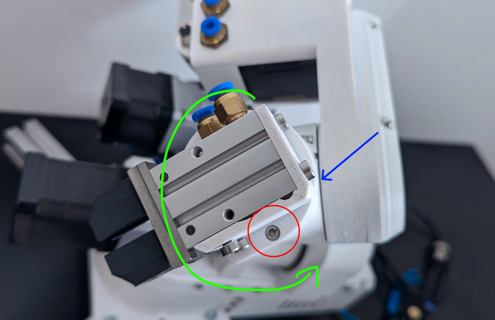
Read in more detail: Homing · Homing failures.
Check
Homing finishes, the physical arm matches the simulator, and the pin passes through the witness marks of each joint, which line up in the after-homing pose (Witness marks). If a joint keeps travelling or the pose is wrong, stop and use Homing failures.
11. Move it¶
The robot now knows where it is. Three simple moves: bend the arm a little, turn the base, and come back. The Python API adds a short straight line down and up from the bent pose.
Paste this program into the program window and press Start; Stop halts it.
Begin()
MoveJoint(90,-70,160,0,30,180,t=3)
Delay(1)
MoveJoint(60,-70,160,0,30,180,t=3)
Delay(1)
MoveJoint(90,-90,180,0,0,180,t=3)
End()
MoveJoint takes the six joint angles in degrees; t=3 makes the move take three seconds. Jogging in the
Cartesian jog menu moves the tool in straight lines instead.
Type these lines at the >>> prompt, one at a time; each waits until its move is done:
rbt.move_j([90, -70, 160, 0, 30, 180], speed=0.3) # bend the arm: six joint angles in degrees
rbt.move_l([0, 0, -30, 0, 0, 0], rel=True, speed=0.3) # a straight line 30 mm down
rbt.move_l([0, 0, 30, 0, 0, 0], rel=True, speed=0.3) # and 30 mm back up
rbt.move_j([60, -70, 160, 0, 30, 180], speed=0.3) # turn the base
rbt.move_j([90, -90, 180, 0, 0, 180], speed=0.3) # back to the after-homing pose
speed is a fraction of the maximum: 0.3 is gentle. With rel=True, move_l takes a change from where the
tool is: x, y and z in mm in the world frame, then three rotations in degrees.
Read in more detail: RBTscript · The Python API.
12. Switch off¶
Bring the arm to the parked pose first, folded in over the base, so that it has the least distance to fall:
Then hold the forearm and press the power button. The arm goes limp the moment the motors lose power.
13. Where to go next¶
| You want to | Read |
|---|---|
| attach a gripper | End effectors |
| write programs | Programming, RBTscript, The Python API |
| use inputs, outputs, pneumatics | Peripherals |
| understand what the robot does and does not protect against | Safety functions |
| fix something | Troubleshooting |
| look up a command | API reference |
About this manual¶
Scope and audience¶
The PAROL6 Robot Manual covers the PAROL6 desktop robotic arm from the box, or the printer, to a robot that runs programs: what the robot is, how to install it safely, how it is switched on, homed, jogged and run, which tools and grippers it takes, its inputs, outputs and pneumatics, how it is maintained and what to do when something fails. The Build guide, part of the same document, covers building one from the published files. Four more documents live on this site: the Control Board Manual, for the electronics inside the base; the End Effectors Guide, for the grippers and tools on the flange; the GUI Guide, for the graphical programs; and the Programming Guide with its API reference, for everyone who writes programs for the robot. The list under Related documents gives their numbers.
The manual is written for someone who has a PAROL6 or is building one: a maker, a student, a teacher or an engineer who can run a Python script and tighten a belt. It does not assume robotics training; the concepts the robot's software uses are explained in the Theory corner, which anyone can read first. Read the Safety chapter before you power anything. The Quick start is the first day on one page; the chapters are in the order you need them and go deeper.
Finding your way¶
The header has seven tabs. PAROL6 Robot Manual is the document you read from the start: the quick start, then safety, technical data, installation, operation, peripherals, maintenance and troubleshooting, in numbered chapters, followed by the build guide. Control Board is the manual of the electronics inside the base: the connectors, the stepper drivers, the I/O wiring, the firmware, the serial protocol. End effectors is what goes on the flange: the pneumatic and vacuum grippers, the SSG-48 and MSG electric grippers, a tool of your own, and how each is mounted, connected and driven. GUI interfaces covers the graphical programs: the commander software, Waldo Commander, Motor GUI. Programming is for everyone who writes programs for the robot: the interfaces, the concepts, the Python API, RBTscript, ROS 2, and the reference where you look things up: every method of the Python API, read from its source, the RBTscript commands, the serial protocol byte by byte, the firmware parameters. Theory corner explains the robotics behind the software, from joint numbering and units to kinematics, singularities and motion profiles, for anyone who wants to read first. Support says where to get help and how to report a problem.
The whole site describes one PAROL6 release. The dropdown next to the site name switches between releases, and a page from an older release says so in a bar at the top. The repository card on the right of the header opens the repository the page belongs to; every page ends with a link to edit it and one to report a problem with it.
Warnings and notes¶
Three kinds of warnings and notes appear in this documentation. Read every Danger and Notice before you act on the step it belongs to. A green Check box after a setup step says what you should see when the step worked, and where to go when it did not.
Note
Points out something that is easy to miss or that changes what follows: a default, a limit, a side effect.
Notice
The robot, the tool, or data on the control board or the PC can be damaged or lost if this is ignored. Nobody is at risk.
Danger
Someone can be injured if this is ignored. Stop and read the whole box before acting on the step it belongs to.
Related documents¶
| Document | Number | Covers |
|---|---|---|
| PAROL6 Robot Manual | SR-1002 | the robot: quick start, safety, technical data, installation, operation, peripherals, maintenance, troubleshooting, transport; the build guide |
| PAROL6 Control Board Manual | SR-2002 | the control board: features, technical data, connectors and pinout, stepper drivers, I/O and E-stop, CAN, firmware upload, the test firmware, the serial protocol |
| PAROL6 Programming Guide | SR-4004 | the ways to program the robot, the concepts behind them, the Python API, RBTscript, ROS 2; the reference: every method of the Python API, the RBTscript commands, the serial protocol, the firmware parameters |
| PAROL6 End Effectors Guide | SR-3004 | what goes on the flange: the pneumatic and vacuum grippers, the SSG-48 and MSG electric grippers, a tool of your own; mounting, connections, the joint 5 homing offset, driving them from the commander software and the Python API |
| PAROL6 GUI Guide | SR-4005 | the graphical programs: the commander software (installation, the windows, the tabs), Waldo Commander in the browser, Motor GUI for the grippers |
Every document describes PAROL6 release 1; the version selector in the header switches between releases. The compatibility table says which control board, firmware, Python API, commander and gripper versions work together.
The grippers made for PAROL6 are documented separately: the SSG-48 at docs.source-robotics.com/SSG48-gripper-docs, the MSG at docs.source-robotics.com/MSG-gripper-docs. PAR6, the larger arm, is documented at docs.source-robotics.com/par6.
Document history¶
The documents on this site describe one PAROL6 release; one revision is kept per release, and the version selector in the header switches between them. The Programming Guide and the API reference also name the Python API version they describe, because the API is released more often than the robot.
The text and the images of this documentation are licensed under CC BY-SA 4.0, the code examples under the MIT licence. The robot's mechanical files, firmware and software are published under GPLv3 in their repositories. The Source Robotics name, the product names and the logos are not covered by any of these.
| Document | Revision | Date | Changes |
|---|---|---|---|
| Robot Manual | 2026.A | 2026-11-03 | First version in this form: the numbered chapters, the build guide, from the pages of the previous site |
| Control Board Manual | 2026.A | 2026-11-03 | First version in this form, from the control board and peripherals pages of the previous site |
| End Effectors Guide | 2026.A | 2026-11-03 | First version: the flange, the pneumatic and vacuum grippers, the SSG-48 and MSG, your own tool |
| GUI Guide | 2026.A | 2026-11-03 | First version: the commander software, Waldo Commander, Motor GUI |
| Programming Guide | 2026.A | 2026-11-03 | First version: the concepts, the Python API 0.9.1, the commander software and RBTscript, ROS 2; the generated API reference |
Chapters
1. Overview
1. Overview¶
PAROL6 is a 3D-printed six-axis desktop robotic arm with a 408 mm reach and a 1 kg payload, built to work like an industrial arm in its mechanics, its control software and the way you use it. Everything about it is open source: the printable parts, the bill of materials, the control board's firmware, the commander software and the Python API. You can buy it assembled, as the full kit or as the partial kit of the hard-to-find parts, or print and build one from the published files: the Build guide compares them.
In this chapter¶
- The robot system: the arm, the control board, the PC software, and how they divide the work
- What you get: what is in the box of an assembled robot or a kit
- What you need: the power supply, the PC, the tools and the knowledge the robot asks of you
The robot system¶
A working PAROL6 is three things: the arm, the control board inside its base, and a PC running the high-level software. Each does a part of the job.

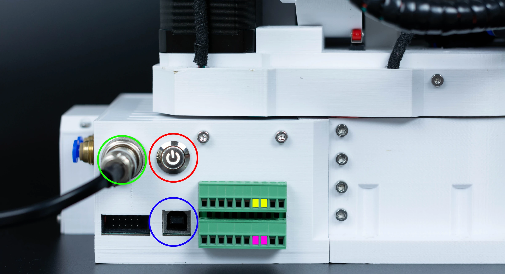
The arm¶
Six revolute joints, driven by NEMA 17 stepper motors through planetary gearboxes and belts, in PETG printed links. Joints 1, 2 and 3 position the wrist; joints 4, 5 and 6 form a spherical wrist that orients the tool. Joint 6 ends in the flange the tool mounts on. The tool connections are on the forearm: an M8 connector for an electric gripper and two push-in fittings for pneumatic lines. Each joint has a limit switch or an inductive sensor that gives it a reference when the robot homes.


- Base, with the control board inside
- Joint 1 motor
- Shoulder, turned by joint 1
- Joint 2 motor
- Upper arm
- Joint 3 motor
- Elbow
- Forearm, also called the lower arm, turned by joint 4
- Wrist, turned by joint 5
- Flange, turned by joint 6
- Air fittings for a pneumatic tool
- Gripper, here the standard pneumatic gripper
The arm has no brakes and no joint encoders. The motors hold the arm while they are powered; the position is counted in steps from the homing reference. Both facts shape how the robot is used, and the Safety chapter returns to them.
The control board¶
The PAROL6 control board sits in the base: an STM32F446 microcontroller, six TMC5160 stepper drivers, two isolated inputs and two isolated outputs, the E-stop input, a CAN bus for electric grippers, and USB to the PC. Its firmware generates the step pulses, runs the homing sequence, reads the switches and the inputs, drives the outputs and the gripper, and exchanges a packet with the PC at 100 Hz. It does not plan motion: it executes the joint speeds and positions the PC sends it, 100 times a second.
The PC software¶
The PC does the thinking: kinematics, trajectory planning, the simulator, the program interpreter, the interface. There are two first-party programs, and others:
| What it is | For | |
|---|---|---|
| Commander software | A desktop GUI with jogging, a 3D simulator, a program editor for RBTscript, I/O and gripper tabs | Using the robot by hand, teaching points, simple programs |
| Python API | A controller process that talks to the board, and a Python client library with blocking and asynchronous calls, planned and streamed motion, tools, collision checking | Programs, integrations, research, teleoperation, AI agents |
| ROS 2 and MoveIt | A MoveIt configuration and a ros2_control hardware interface that drive the Python API's controller |
ROS users |
| Community interfaces | Web GUIs, alternative firmware, vision demos |
All of them speak the same serial protocol to the control board, so a board with the main firmware works with any of them.
How a move happens¶
- You press a jog button, run a program line or call
move_j. - The PC software computes the trajectory: the joint angles over time, with the speed profile you chose, within the joint limits.
- One hundred times a second it sends the control board a packet with the target position and speed of each joint, the output states and the gripper command.
- The board sets the stepper speeds and runs the steps; the drivers turn the motors.
- The board answers with the actual position and speed of each joint, the switch and input states, the errors and the gripper's status, which the PC software shows and uses for the next cycle.
sequenceDiagram
participant PC as PC software
participant B as Control board
participant M as Motors
Note over PC: a jog button, a program line, move_j: the trajectory is planned
loop every 10 ms
PC->>B: targets: joint positions and speeds, outputs, gripper
B->>M: step pulses at the commanded speeds
B-->>PC: actual positions and speeds, switches, inputs, errors
endWhere everything is published¶
| Mechanical files, BOM, building instructions, control board firmware, URDF | PAROL6-Desktop-robot-arm |
| Commander software | PAROL-commander-software |
| Python API | PAROL6-python-API |
| ROS 2 MoveIt configuration | PAROL6-ROS2-MOVEIT |
| This documentation | PAROL-docs |
| Shop, videos, community | source-robotics.com, YouTube, Discord |
The full list is on Downloads and files.
What you get¶
An assembled robot¶
A PAROL6 from the shop comes assembled, wired and tested, with the control board in the base running the main firmware, the E-stop button, the pneumatic gripper holder, and the robot homed once on the bench. Check the contents against the order; the power supply, grippers and the programming adapter are separate items unless the order includes them.
A kit¶
The full kit contains every part of the BOM except the printed parts and the power supply. The partial kit contains the hard-to-find parts: the board, the drivers, the bearings, belts, pulleys, connectors, sensors, switches and the pneumatics; you add the gearboxes, the motors, the power supply and the printed parts. The Build guide lists every kit. You assemble a kit with the Build guide and the assembly manual. The control board in a kit carries the test firmware, as every control board from the shop does: it turns all six motors as soon as it starts. Upload the main firmware before you switch on the assembled robot (Firmware and first run).
A control board on its own¶
Every control board is tested end to end before it ships and comes with the test firmware, which exercises the drivers, the switches and the I/O from a serial terminal. Upload the main firmware before you use it with the commander software or the Python API: Firmware.
The files¶
Everything else you get is on GitHub: the STL and STEP files, the BOM with purchase links, the building instructions PDF and the video playlist, the firmware sources, the software. Downloads and files lists them.
What you need¶
Power¶
A 24 V DC supply of at least 5 A. The BOM names a Mean Well 120 W DIN-rail unit; any regulated 24 V 5 A supply with the robot's GX16 power connector wired to it does. The control board accepts 18 to 24 V; below 24 V the motors lose torque and speed. The robot draws about 40 W in typical use and more when all six motors accelerate at once.
Plug the supply in through a mains switch within reach, a switched socket strip for example. It is the stop that still works when the PC software has frozen (Emergency stop), and the switch you reach for when the E-stop has no effect.
The E-stop¶
A normally closed emergency stop button, wired to the two E-stop terminals of the control board. The robot does not run without it. The kit's button mounts on the base in the printed holder; any NC switch works for a bench setup (Emergency stop).
The PC¶
The PC runs the kinematics and the planner and must send a packet to the robot every 10 ms without hiccups. A machine that falls behind makes the robot stutter. Tested systems and the minimum are in the commander repository's confirmed working systems: at least an Intel i5 six-core processor of 2017 or newer, or an AMD equivalent. The tested systems include two Windows 10 PCs with six-core AMD Ryzen processors, a Radxa ROCK 5B on Linux and a six-core MacBook Pro.
| Commander software | Python API | |
|---|---|---|
| Operating system | Windows, Linux, macOS | Windows, Linux (x86-64 and ARM64), macOS (ARM64) |
| Python | 3.10 or 3.11 | 3.11 or newer |
| Connection | USB (a serial port, 3 Mbaud) | USB on the PC that runs the controller; clients anywhere on the network |
A USB type B cable connects the robot to the PC. USB does not power the board.
Tools¶
For an assembled robot: hex keys (2, 2.5, 3 mm) for the mounting screws and the gripper, a small screwdriver for the terminal blocks. For a build, the Build guide lists the rest, down to the blue threadlocker and the thermal cement.
Knowledge¶
You should be able to use a hex key. Python and the terminal you can learn on the way: the Quick start gives every command to type, for someone who has never used either. The Theory corner explains the robotics vocabulary the software uses, from joint numbering to singularities, in the order you meet it.
2. Safety
2. Safety¶
PAROL6 is a desktop robot, light enough to lift with one hand, and it can still hurt you: it pinches, it moves fast, it moves by itself when it homes, and it falls when it loses power. This chapter is short. Read all of it before the first power-on, and have everyone who works at the robot read it.
Danger
The project's Safety Warning and Disclaimer applies to everything on this site: the hardware, the firmware, the software and this documentation are under development, and you build, modify and operate the robot at your own risk.
In this chapter¶
- Intended use: what the robot is for, and what it is not
- Hazards: pinch points, the fall on power loss, induced voltage, hot motors, the tool
- Emergency stop: what the E-stop does, and what it does not
- Moving the robot by hand: when it is allowed and the two things never to do
- What the robot protects against, and what not
- Planning the cell: the person, the guarding, the program
Intended use¶
PAROL6 is made for education, research, hobby robotics and light automation on a bench: pick-and-place of light objects, camera and sensor experiments, teaching robot programming, prototyping a task before buying an industrial arm. It is an open-source, 3D-printed machine assembled by its owner or by a small workshop, and it is not a certified industrial robot.
Use it
- on a bench or frame it is bolted to, in a dry room
- with a payload within its rating: 1 kg near the base, 0.5 kg at full reach, tool included
- with the E-stop connected and within reach
- with the person who runs it able to see the whole arm
Do not use it
- around people who do not know it is a robot: children, visitors, a crowded desk
- for anything that must not fail: it has no brakes and no joint position feedback, and a lost step is silent
- with tools that cut, heat or spray without your own guarding and risk assessment
- in wet, dusty or hot places, or outdoors
A self-built robot is the builder's responsibility from the first screw: the currents, the wiring, the limit switches and the mechanical stops are all yours to get right, and the Build guide says where the mistakes are made.
Hazards¶
Pinch and crush points¶
Every joint is a pinch point, and the elbow and wrist fold against the upper arm and forearm. The motors are geared: a finger between two links when a joint closes is crushed, not pushed away. Keep hands, cables and tubes out of the arm's path while it is enabled, and never reach into the workspace of a running program. Under the elbow, the belt that drives joint 3 runs onto its pulley: a finger or a loose cable there is drawn in.


Clothing, hair and eyes¶
A joint that closes catches more than fingers: its belts and pulleys pull in hair, loose sleeves, scarves, lanyards and jewellery. Tie back long hair and take those off before you work at a powered robot, and keep them out of the arm's reach while it moves. Wear safety glasses with a pneumatic gripper, with a sharp or pointed tool, and whenever the robot can drop or throw a part.
The arm falls when the power goes¶
PAROL6 has no brakes. The moment the motors lose power, from the button, the supply, a blown fuse or a pulled cable, the arm goes limp and falls under its own weight, with whatever it carries. The gearing slows the fall of joints 2 and 3 a little; it does not stop it.
- Never switch the robot off while it is extended or carrying something: bring it to the parked pose first, folded in over the base, where it has the least distance to fall (Switching on and off).
- Hold the forearm when you press the power button.
- Keep hands out from under the arm.
- Expect the fall during any power failure, and place nothing fragile under the arm.
Motion you did not command¶
- Homing moves every joint, at speed, toward its limit switch, as soon as Home is pressed. The arm must be free to move and the switches must work (Homing).
- A program restarts where you told it to, and
Loop()restarts it forever. - A lost step makes the arm move to a different place than the one on the screen. After a collision or a stall, stop and home again.
- A wrong joint direction on a new build sends a joint the wrong way on the first jog, into its stop. Jog slowly and briefly the first time (Firmware and first run).
Stepper-induced voltage¶
A stepper motor turned by hand is a generator. Moving the arm quickly while the supply is connected and the board off can power the board on and energise the motors, with the arm wherever you left it. Move an unpowered robot slowly, and only toward the parked pose or into its box.
Hot motors¶
After hours of motion the wrist motors reach 70 °C (Currents and temperatures). That is hot to the touch and close to the limit of the plastic around them.
Electricity¶
The robot runs on 24 V, which is safe to touch. The power supply you plug it into is connected to the mains: use a closed, approved supply, never an open-frame one on the desk. The control board has no reverse-polarity protection on its power input.
The tool¶
A pneumatic gripper closes with the force of the compressed air behind it, whatever is between its fingers; the electric grippers close with up to 80 N. A vacuum gripper drops its load the moment the air stops. Treat the tool as part of the robot in every rule above.
Emergency stop¶
The E-stop is the red button on the base, a normally closed contact wired to the control board's E-stop input. It must be connected for the robot to run.

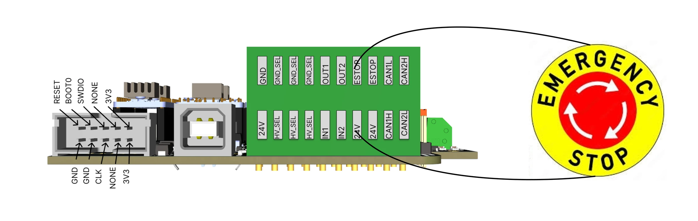
What pressing it does¶
The control board reads the E-stop input in every command cycle and reports it to the PC in every packet. The PC software acts on it:
- the commander software disables the robot: it sends the disable command, the firmware stops accepting motion commands, and the log shows Robot disable; button or estop. A running program is stopped. The motors stay energised and hold the arm. Release the button and press Enable to continue; Start runs a program again from its first line.
- the Python API's controller cancels the move in progress and the queue, sends the disable command to the
firmware, and refuses every motion command with
SYS_ESTOP_ACTIVEwhile the button is pressed. When the button is released, the controller clears that error by itself and accepts commands again, but the firmware stays disabled and the arm does not move untilreset()sends the enable command. Callreset()after every E-stop, before the next move.
The E-stop is a software stop
The control board's firmware (release 1) reports the E-stop and does not itself cut the motor power or the step pulses: the PC software stops the motion. A PC that has crashed, a program that has frozen, or a USB cable that has fallen out leaves the E-stop without effect, and the firmware keeps executing the last packet it received: a joint that was jogging in the commander keeps turning until it reaches its blocker. For those cases the hard stop is the power supply: a switch on the supply's mains side within reach, and the knowledge that the arm will fall when you use it.
What it does not do¶
- It does not cut power to the motors, so the arm does not fall when it is pressed.
- It does not stop the gripper: an electric gripper keeps its grip, a pneumatic one stays where the valve left it.
- It does not stop a Python script of your own: the script keeps running. Its commands are refused while the
button is pressed and accepted again after the release, before the arm can move. Stop the script before you
release the button, then call
reset().
If someone is caught by the arm¶
The E-stop does not free anyone
Pressed, the E-stop leaves the motors holding the arm where it is, and a joint cannot be pushed back by hand against a holding motor. To free a trapped hand or finger, either release the E-stop, enable the robot and jog that joint away slowly, the smallest step at a time; or support the arm with one hand and switch off the power supply with the other, knowing that the arm goes limp and falls. Decide which before you need it, and keep the supply's switch within reach (Planning the cell).
The contact¶
Normally closed, so that a cut wire, a loose terminal or an unplugged button is read as a stop. A normally open button does not work. The control board has two E-stop connectors on the same input: a second button can be wired in series, or a safety relay's contact. Inputs, outputs and E-stop has the wiring.
Moving the robot by hand¶
An unpowered PAROL6 can be moved by hand: the joints turn against the friction of their gearboxes and belts, and the arm has no brakes to release. This is how you pose it for packing and how you lift it. Two rules:
Never more than one turn, except joint 6
No joint may ever be turned more than one full turn, by hand or by software. Cables and pneumatic tubes run through the joints, and a second turn wraps and tears them. The one exception is joint 6: with the bare flange it can turn without limit; with a gripper or a tool, the tool's cables and tubes wrap as it turns, and they set how far it may go. Joints 1 to 5 have printed blockers that stop them; on a build without them, the rule is yours to keep.


Not while the supply is connected
A stepper turned by hand generates voltage, and a quick move can switch the board on with the arm in your hands. Unplug the power supply, or move slowly, and only toward the parked pose.
When the robot is powered¶
Do not force a powered joint. The motor holds it with its full holding current; what gives is a belt, a set screw or a printed part, and afterwards the position the software reports is wrong. To move a powered robot, jog it.
After moving by hand¶
The robot does not know it was moved: the firmware counts steps and sees none. Home again before any program or Cartesian move. The commander's position display and the simulator are wrong until you do.
Lifting¶
Bring the arm to the parked pose, joints 2 and 3 toward their limit switches so that the arm folds over the base, then lift by the base, not by the arm. Transport and storage has the packing.
What the robot protects against, and what not¶
Know what the hardware and the software catch, and what they do not, before you decide how the robot is guarded.
What is protected¶
| Against | How | Where |
|---|---|---|
| A target outside the joint limits | The planner refuses it; a jog stops at the limit. Firmware 1, the commander and the Python API check the earlier, partly wider limits (Joint limits) | Commander, Python API |
| A speed or acceleration above the limits | Clamped to the robot model's limits | Commander, Python API |
| A move through a singularity (Cartesian) | The commander stops the move; the API's IK fails and refuses the command | Commander, Python API |
| A pose the arm cannot reach | The IK fails and the command is refused | Commander, Python API |
| Self-collision and collision with declared obstacles | Collision checking of planned moves and jogs against the robot's meshes and your keep-out shapes | Python API (set_shapes) |
| The E-stop pressed | Reported by the board, acted on by the PC software (Emergency stop) | Commander, Python API |
| A driver overheating | The TMC5160 shuts its outputs down when it gets too hot; the fan keeps it far below that. The joint then goes limp, and firmware 1 does not tell the PC | Control board |
| A short on a motor output | The TMC5160 switches the output off. Firmware 1 reads the driver's short and open-load flags once at start-up and does not report them | Control board |
What is not protected¶
| Not against | Why | What you do instead |
|---|---|---|
| A collision with something the software does not know | There are no joint encoders and no force sensing: the stepper pushes until it stalls, then loses steps silently | Keep the workspace clear; check programs in the simulator first; declare obstacles to the Python API's collision checker |
| Lost steps | Open-loop motors; the position is counted, not measured | After a stall or a collision, home again; keep speeds and payloads within the limits |
| A fall on power loss | No brakes | Switch off only in the parked pose; keep hands and objects out from under the arm |
| A frozen PC | The E-stop acts through the PC software; the firmware does not stop on its own | A mains switch on the power supply within reach |
| Lost communication with the PC | The firmware has no timeout: it keeps executing the last packet until the next one arrives. After a move to a position (programs, the Python API) the joint stops near that target. After a jog in the commander the joint keeps turning at the jog speed until it reaches its blocker | Keep the mains switch within reach; a short, direct USB cable |
| Motor temperature | Only the drivers are measured, not the motors | Reduce the current for long runs (Currents and temperatures) |
| The tool | The robot does not know what the tool does | Guard the tool as you would the robot |
| A wrong joint direction on a new build | The firmware trusts its configuration | Jog each joint briefly before homing |
The commander's safety functions are described in Errors and recovery; the Python API's in Errors.
Planning the cell¶
A robot cell is the robot, what it works on, and the people around it. For a PAROL6 on a bench the plan fits on a page, and it is worth writing.
The person¶
One person runs the robot and sees all of it. Nobody else reaches into the workspace while it is enabled. The E-stop is within that person's reach, and so is the power supply's switch.
The space¶
- The arm's reach, 408 mm from the axis of joint 1 to the flange, plus the tool, and a margin for the elbow, which swings behind the base when the arm folds: a sphere of about half a metre.
- Nothing fragile inside it, and nothing that the arm could knock onto the floor.
- The cables and tubes outside the sweep, or fixed so the arm cannot catch them.
- For a robot that runs unattended or near others, an enclosure: acrylic panels on the profile frame are enough to keep hands out; the robot cannot break them.
The program¶
- Run every new program in the simulator first, at full speed, and watch for the arm folding into the base or the table.
- Start on the real robot at low speed: in the commander, low
v=or longt=in the moves (the speed slider only scales jogging); in the Python API, thespeedfraction of each move. - Make the first move of a program go from the after-homing pose to a known pose, so that a program started right after homing always begins safely.
- Use
Delay()and the inputs to wait for the world, rather than assuming it.
The tool and the parts¶
- The payload includes the tool. A gripper and a camera together can be most of the 0.5 kg the arm carries at full reach.
- A pneumatic gripper needs 5 to 7 bar (check your gripper's rating) and a valve wired to an output; the valve's two tubes decide whether it is normally open or closed (Pneumatics).
- Know what the gripper does at an E-stop and at a power loss. The E-stop leaves the gripper as it is: an electric gripper keeps its grip, and a pneumatic or vacuum gripper stays where the valve left it. When the power or the air goes, the vacuum gripper drops its part.
When something changes¶
Changing the tool, the base, the table height or the fixture changes the kinematics and the clearances. Update the tool in the software, check the limits with a slow jog, and run the programs in the simulator again.
3. Technical data
3. Technical data¶
The numbers of PAROL6 V1: the specifications, the joint limits and their directions, the dimensions and the kinematic model, the drives with their ratios and resolutions, and the motor currents with the temperatures they lead to.
In this chapter¶
- Specifications
- Joint limits and directions
- Dimensions and kinematics
- Drives, ratios and resolution
- Currents and temperatures
The control board's own specifications are in the Control Board Manual.
Specifications¶
| Parameter | Value |
|---|---|
| Degrees of freedom | 6 revolute joints |
| Reach | 408 mm to the flange, 434 mm to the standard pneumatic gripper's TCP, from the axis of joint 1 |
| Payload | 1 kg near the base, 0.5 kg across the full workspace |
| Repeatability | 0.1 mm |
| Weight | 5.5 kg |
| Material | 3D-printed PETG, steel shafts and bearings |
| Motors | NEMA 17 stepper motors, one per joint |
| Gearing | Planetary gearboxes (joints 2, 3, 6) and HTD3 belts (joints 1, 3, 4, 5) |
| Position reference | Limit switches (joints 2, 3, 5) and inductive sensors (joints 1, 4, 6); no joint encoders |
| Brakes | None: the arm falls when the motors lose power |
| Power supply | 24 V DC, 5 A, recommended for optimal robot performance (18 V minimum) |
| Power consumption | About 40 W typical |
| Control | PAROL6 control board (STM32F446, six TMC5160 drivers) in the base |
| PC connection | USB, serial at 3 Mbaud, 100 Hz command cycle |
| Inputs and outputs | 2 isolated inputs, 2 isolated outputs, E-stop input |
| Buses | 1 CAN bus for electric grippers (a second is on the board, not populated) |
| Tool connections | M8 4-pin gripper connector (24 V, CAN) at the forearm; 2 pneumatic lines, 4 mm tube, base to forearm |
| Mounting | 6 holes in the base, spaced for 30×30 mm aluminium profiles; clamps |
| Operating temperature | Room temperature; the printed parts limit the motor temperatures (Currents and temperatures) |
Joint ranges¶
| Joint | Range |
|---|---|
| Joint 1 | 194.8° (±97.4°) |
| Joint 2 | 113.4° |
| Joint 3 | 189.1° |
| Joint 4 | 229.2° (±114.6°) |
| Joint 5 | 240.6° (±120.3°) |
| Joint 6 | 360° in software; mechanically unlimited, but see Moving the robot by hand |
The ranges are those of the robot's model (robot_descriptions 2.15.1); the exact limits are on Joint limits and directions.
Speeds¶
The speed limits are set in the PC software, not in the firmware, and the two programs differ: the commander allows less on joints 1, 2, 3 and 6 and on the tool, and more on joints 4 and 5.
| Joint | Python API: maximum speed | Python API: acceleration | Commander: maximum speed |
|---|---|---|---|
| Joint 1 | 132 °/s (15000 steps/s) | 395 °/s² | 57 °/s (6500 steps/s) |
| Joint 2 | 70 °/s (25000 steps/s) | 211 °/s² | 51 °/s (18000 steps/s) |
| Joint 3 | 99 °/s (32000 steps/s) | 298 °/s² | 62 °/s (20000 steps/s) |
| Joint 4 | 141 °/s (10000 steps/s) | 422 °/s² | 309 °/s (22000 steps/s) |
| Joint 5 | 141 °/s (10000 steps/s) | 422 °/s² | 309 °/s (22000 steps/s) |
| Joint 6 | 152 °/s (27000 steps/s) | 456 °/s² | 124 °/s (22000 steps/s) |
| Tool, linear | 200 mm/s | 550 mm/s² | 60 mm/s |
| Tool, angular | 100 °/s | 275 °/s² | 25 °/s |
The steps per second are converted with the ratios of Drives, ratios and resolution. In the Python API a joint's acceleration is three times its speed, so a joint reaches full speed in a third of a second, and jogging is limited to 80 % of the maxima. The commander jogs within lower limits of its own, which its speed slider scales: 13 °/s on joint 1, 8 °/s on joint 2, 11 °/s on joint 3, 98 °/s on joints 4 and 5 and 101 °/s on joint 6 at 100 % (1500, 3000, 3600, 7000, 7000 and 18000 steps/s), and 60 mm/s for the tool. A joint driven at its maximum with a reduced motor current or a heavy payload loses steps: lower the speed before you lower the current.
Joint limits and directions¶
Joint numbering and positive directions¶
Joints are numbered from the base up. Joints 1, 2 and 3 are also called the base, shoulder and elbow joints, and joints 4, 5 and 6 wrist 1, wrist 2 and wrist 3, the names the robot model and ROS use. Each picture shows one joint turned 30° in its positive direction, in colour, over the pose in grey. The arrow at the joint points the same way, and the commander software's left arrows jog in that direction.
| Joint | Also called | Positive direction |
|---|---|---|
| J1 | base | counter-clockwise, seen from above |
| J2 | shoulder | leans the upper arm forward, the way the forearm points in the standby pose |
| J3 | elbow | raises the forearm |
| J4 | wrist 1 | clockwise, seen from the tool |
| J5 | wrist 2 | tips the tool up, in the standby pose |
| J6 | wrist 3 | clockwise, seen from the tool |
Standby and after homing¶
The standby pose is the pose of the Denavit-Hartenberg table and the kinematics sheets, and the reference for the limits below: the upper arm vertical, the forearm horizontal, the arm pointing away from the electronics case at the back of the base. After homing the robot stands in the same pose turned 90° about joint 1, counter-clockwise seen from above: the firmware sets joint 1 to +90° when it finishes homing.
| Pose | Joint 1 | Joint 2 | Joint 3 | Joint 4 | Joint 5 | Joint 6 |
|---|---|---|---|---|---|---|
| Standby | 0° | −90° | 180° | 0° | 0° | 180° |
| After homing | 90° | −90° | 180° | 0° | 0° | 180° |
The Python API calls the after-homing pose its standby (STANDBY_ANGLES_DEG), and a later home() moves
there; the commander software's standby is the standby pose above.


Limits¶
The joint limits of PAROL6's model in robot_descriptions (version 2.15.1), in degrees, in the angles the software shows (the standby pose above).
| Joint | Negative limit | Standby | Positive limit | Range |
|---|---|---|---|---|
| J1 | −97.40° | 0° | +97.40° | 194.8° |
| J2 | −146.15° | −90° | −32.70° | 113.4° |
| J3 | 105.52° | 180° | 294.59° | 189.1° |
| J4 | −114.59° | 0° | +114.59° | 229.2° |
| J5 | −120.32° | 0° | +120.32° | 240.6° |
| J6 | none | 180° | none | no limit with the bare flange; with a tool, its cables and tubes set it |


The firmware and the software still use the earlier limits
Firmware 1, the commander software and the Python API (0.9.1) enforce the limits of the earlier model until they are updated: J1 ±123.05°, J2 −145.01° to −3.38°, J3 107.87° to 287.87°, J4 ±105.47°, J5 ±90°, J6 0° to 360°. A target between the two is accepted by them; keep to the table above. Before homing they apply these limits to a position count that starts at 0 at power-up, so joint 2 cannot be jogged in its positive direction, nor joints 3 and 6 in their negative one, until the robot is homed (Jogging).
Joints 1 to 5 are stopped at both ends by printed blocker parts, the mechanical stops a little past the limits above. The limit switch or sensor that homes a joint sits near its blocker, so that it triggers just before the joint reaches it. Joint 6 has no blocker: with the bare flange nothing stops it, and with a tool only the tool's cables and tubes do.
Grippers and bases change the limits
A gripper changes where joint 5 can go without colliding with the forearm, and a riser under the base changes what joint 2 can reach. The software limits do not know about either: check the real clearances with a slow jog before you run a program near a limit.
The limits are not a safety function
The limits only stop the software from commanding a joint further. Inside them the arm can still hit a person, the table or itself, no safety-rated part checks them, and a wrong homing shifts them with it. They protect the robot's cables and parts, not the people near it (Safety).
Never more than one turn, except joint 6
No joint may ever be turned more than one full turn, by hand or by software: the cables and pneumatic tubes that pass through the joints wrap and tear. The one exception is joint 6: with the bare flange it can turn without limit; with a gripper or a tool, the tool's cables and tubes wrap as it turns, and they set how far it may go (Moving the robot by hand).
Dimensions and kinematics¶
Drag to turn the robot, scroll to zoom, move each joint with its slider, choose the gripper on the flange, try a colour for the printed parts (the motors stay black). The model is the robot's URDF; the sliders run over its joint limits.
Dimensions¶
The sheets below come from PAROL6's models in robot_descriptions (version 2.15.1). Each shows the robot's own meshes in the standby pose (every joint of the model at 0), in one orthographic side view at one scale, with the dimensions taken from the URDF, not measured from the picture, and the standard DH table to the tool centre point (TCP) of that configuration. Click a sheet to enlarge it.


| Dimension | What it is | Value |
|---|---|---|
| a1 | Base height: the floor to the joint 2 axis | 110.5 mm |
| a2 | Shoulder offset: the joint 1 axis to the joint 2 axis | 23.42 mm |
| a3 | Upper arm: joint 2 to joint 3 | 180 mm |
| a4 | Elbow offset | 43.5 mm |
| a5 | Forearm: the joint 3 axis to the wrist centre | 177 mm |
| a6 | The joint 6 centre to the TCP, along the tool axis | depends on the tool, below |
| a7 | Sideways offset of the TCP | depends on the tool, below |
| Tool | a6 | a7 |
|---|---|---|
| Flange only (the TCP is the flange face) | 50.5 mm | 0 |
| Pneumatic gripper | 62.3 mm | 45.25 mm |
| SSG-48, solid or fin-ray jaws | 134.3 mm | 0 |
| MSG, solid or soft jaws | 134.3 mm | 28.35 mm |
A riser under the base changes a1, and a tool of your own changes a6 and a7: tell the software about the tool (Tools and the TCP), or the poses it reports will be wrong.
The software still computes with the earlier model
These pages give the model's dimensions. Until the software is updated, the Python API (its built-in URDF) and the commander software compute with a5 = 176.35 mm, and the commander with a6 = 62.8 mm for the pneumatic gripper, so a pose they report can differ from these sheets by up to about 0.65 mm.
Kinematic structure¶
The first three joints place the wrist centre; the axes of joints 4, 5 and 6 intersect in one point, a spherical wrist, which is what makes the inverse kinematics tractable. The Theory corner explains forward and inverse kinematics, and Configurations and singularities the eight ways the arm can reach one pose.
Denavit-Hartenberg parameters¶
Standard DH, each joint's transform being A_i = Rz(theta_i) Tz(d_i) Tx(a_i) Rx(alpha_i), from the base to the
TCP. q1 to q6 are the model's joint angles (the URDF's), all 0 in the standby pose; the theta column already
contains the joint offsets, so do not add them twice. Theta is the angle the software shows: joint 2's software
angle is q2 − 90°, joint 3's is q3 + 180° and joint 6's is q6 + 180°, the others are equal. The sheets above give
the same table for each tool.
| Joint | Link | theta | alpha | a | d |
|---|---|---|---|---|---|
| 1 | Base | q1 | -90° | a2 = 23.42 mm | a1 = 110.5 mm |
| 2 | Shoulder | q2 - 90° | 180° | a3 = 180 mm | 0 |
| 3 | Elbow | q3 + 180° | 90° | -a4 = -43.5 mm | 0 |
| 4 | Wrist 1 | q4 | -90° | 0 | -a5 = -177 mm |
| 5 | Wrist 2 | q5 | 90° | 0 | 0 |
| 6 | Wrist 3, to the TCP | q6 + 180° | 180° | -a7 | -a6 |
The models were checked at 128 poses including the joint limits: the DH table, the URDF and the MuJoCo model agree to within 0.006 mm and 0.002°. The Python API does not use the table directly: it loads its URDF and computes the kinematics numerically. The commander software uses a Robotics Toolbox DH model.
Mounting holes¶
Six holes in the base, on a pattern made for 30×30 mm aluminium profiles. The mounting plates folder of the repository has STEP drawings of a small and a big base plate: Mounting the robot.
Drives, ratios and resolution¶
Motors and gearing¶
| Joint | Motor | Gearing | Ratio |
|---|---|---|---|
| Joint 1 | NEMA 17, 65 N·cm (60 mm) | HTD3 belt, 15-tooth pulley to a 96-tooth printed pulley | 6.4 : 1 |
| Joint 2 | NEMA 17, 65 N·cm (60 mm) | EG planetary gearbox | 20 : 1 |
| Joint 3 | NEMA 17, 45 N·cm (40 mm) | EG planetary gearbox 20 : 1, then a belt 38 : 42 | 18.095 : 1 |
| Joint 4 | NEMA 17, 45 N·cm (40 mm) | HTD3 belt, 12-tooth pulley to 48 teeth | 4 : 1 |
| Joint 5 | NEMA 17, 45 N·cm (40 mm) | HTD3 belt, 12-tooth pulley to 48 teeth | 4 : 1 |
| Joint 6 | NEMA 17, 16 N·cm (20 mm) | EG planetary gearbox | 10 : 1 |
The planetary gearboxes are the precision EG series with 15 to 20 arc-minutes of backlash; the cheaper MG series fits and works, with more backlash. The belts are 6 mm wide HTD3, tensioned by small bearings; their lengths are in the BOM.
Steps and microsteps¶
The stepper motors have 200 full steps per turn. The control board runs the TMC5160 drivers at 32 microsteps, so one motor turn is 6400 microsteps, and every position and speed the firmware and the PC exchange is in these steps. Through the gearing, one step at the joint is:
| Joint | Steps per joint turn | Step size |
|---|---|---|
| Joint 1 | 40 960 | 0.00879° (0.000153 rad) |
| Joint 2 | 128 000 | 0.00281° (0.000049 rad) |
| Joint 3 | 115 810 | 0.00311° (0.000054 rad) |
| Joint 4 | 25 600 | 0.01406° (0.000245 rad) |
| Joint 5 | 25 600 | 0.01406° (0.000245 rad) |
| Joint 6 | 64 000 | 0.00563° (0.000098 rad) |
Conversions: degrees per step = 360 / (200 × 32) / ratio; the software's DEG2STEPS and STEPS2DEG do exactly
this. A microstep is not a guaranteed position: the motor's holding torque at a fraction of a full step is small,
so the real resolution under load is coarser than the table, which is why the repeatability is specified at
0.1 mm rather than at the step size.
Try it¶
16 000 steps from the standby pose · one step is 0.00281° at the joint
10 667 steps per second · the motor turns at 100 rpm
The conversions of this page, with your numbers: 6400 microsteps per motor turn, through the joint's ratio.
Why open loop works here¶
The motors are not fitted with encoders: the position is the count of steps commanded since homing. This works because the planner never asks a motor for more than its torque at the commanded speed and acceleration, with margin; a stepper that is not overloaded does not lose steps. If one is overloaded (a collision, a payload over the limit, too high a speed with a reduced current) it loses steps silently, the arm is then not where the software thinks it is, and the only cure is to home again. Steppers, open loop and backlash goes deeper.
Currents and temperatures¶
Motor currents¶
The control board sets each motor's running current in the firmware. The values are chosen for the motors of the BOM and for the printed parts around them; joints 4 and 5 run below their motors' rating because their motors are enclosed in the forearm.
| Joint | Maximum current (constants.h) |
Current while moving | Holding current |
|---|---|---|---|
| Joint 1 | 2000 mA | 85 % of the maximum: 1700 mA | 70 % of that: 1190 mA |
| Joint 2 | 2000 mA | 1700 mA | 80 %: 1360 mA |
| Joint 3 | 1900 mA | 1615 mA | 80 %: 1292 mA |
| Joint 4 | 1700 mA | 1445 mA | 80 %: 1156 mA |
| Joint 5 | 1700 mA | 1445 mA | 80 %: 1156 mA |
| Joint 6 | 965 mA | 820 mA | 88 %: 722 mA |
The firmware calls rms_current(MOTORx_MAX_CURRENT * 0.85, hold_multiplier); the hold multiplier is 0.7 for
joint 1, 0.8 for joints 2 to 5 and 0.88 for joint 6 (motor_init.cpp; Firmware parameters). Lower currents give
less torque, which means lower reachable speeds and accelerations and a higher chance of lost steps; higher
currents heat the motors and the plastic around them.
Temperatures¶
Stepper motors are rated for 100 °C and more, but PAROL6 is plastic, and PETG softens around 80 °C. These are the motor case temperatures measured on a robot at the default currents, at room temperature:
| Joint | Holding position for 5 h | Moving for 2 h |
|---|---|---|
| Joint 1 | 51 °C | 64 °C |
| Joint 2 | 54 °C | 64 °C |
| Joint 3 | 48 °C | 52 °C |
| Joint 4 | 60 °C | 73 °C |
| Joint 5 | 60 °C | 72 °C |
| Joint 6 | 61 °C | 65 °C |
Through a thermal camera, a powered PAROL6 shows where the heat is: the motors of joints 2 and 3 beside the shoulder, the elbow (the hottest point in this picture, 50 °C) and the wrist motors in the forearm, and the control board at the back of the base. The scale runs from 29.6 to 50.0 °C.

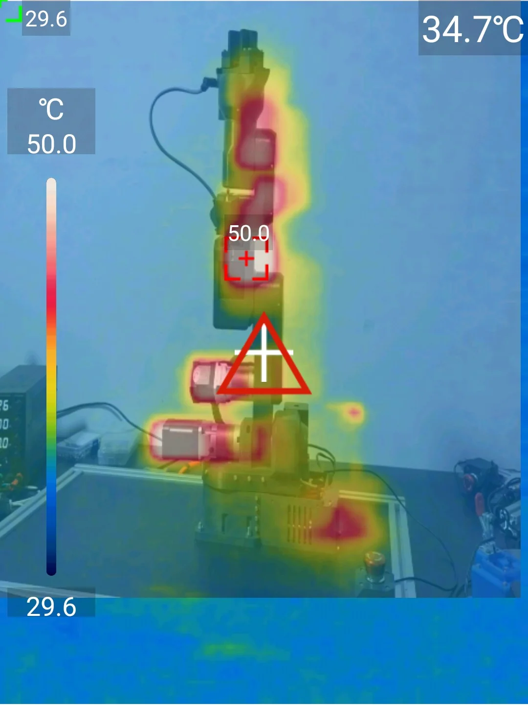
Long runs
Joints 4 and 5 come within 10 °C of the plastic's limit after two hours of continuous motion. For a robot that
runs for hours, reduce the currents in the firmware (MOTORx_MAX_CURRENT in constants.h, or the
hold_multiplier in motor_init.cpp), lower the duty cycle, or let it rest in a pose that does not load the
motors. A deformed forearm cannot be straightened: it has to be printed again.
The stepper drivers protect themselves: a TMC5160 that gets too hot shuts its outputs down, and its joint goes limp. The fan in the base keeps them well below that (Control board technical data). Firmware 1 does not tell the PC when a driver is hot: the joints' temperature error bits in its packet are always 0. The driver temperature is not the motor temperature.
4. Installation
4. Installation¶
Where to put the robot, how to fix it, what to connect, and the first power-on.
In this chapter¶
Building the robot is the Build guide; wiring the control board inside the base is in the Control Board Manual.
Installation site¶
- A rigid table or frame. The arm accelerates its 5.5 kg quickly; a wobbly table shakes and spoils the repeatability. An aluminium profile frame or a solid bench is right.
- Clearance. The arm reaches 408 mm from the axis of joint 1 in every direction, plus the tool, and its elbow swings further back than the tool when it folds. Keep a free sphere of about 500 mm around the base, and nothing fragile in it. The simulator shows the sweep of a program before the robot runs it.
- Room temperature, dry, dust-free. The base draws air through its fan over the stepper drivers.
- The E-stop within reach of the person at the PC, and reachable from where someone would stand to load the robot.
- Cables. The power, USB and E-stop cables leave the base at the back; route them so that nothing pulls on them and so that the arm cannot sweep over them.
- Pneumatics. If you use the pneumatic gripper, a valve and an air supply at 5 to 7 bar near the base; check your gripper's rating (Pneumatics).
- A mains switch within reach on the power supply's mains side, a switched socket strip for example: the stop for when the PC software has frozen (Emergency stop).
The Planning the cell page covers the safety side: who can reach the robot, guarding, and what the software can and cannot stop.
Mounting the robot¶
An unanchored robot falls over
When the arm extends, the centre of gravity leaves the base. Never run PAROL6 free-standing, not even for a test.
The base holes¶
Six holes in the base, spaced for 30×30 mm aluminium profiles. Bolt the base to a plate or a profile frame with M5 screws and T-nuts.

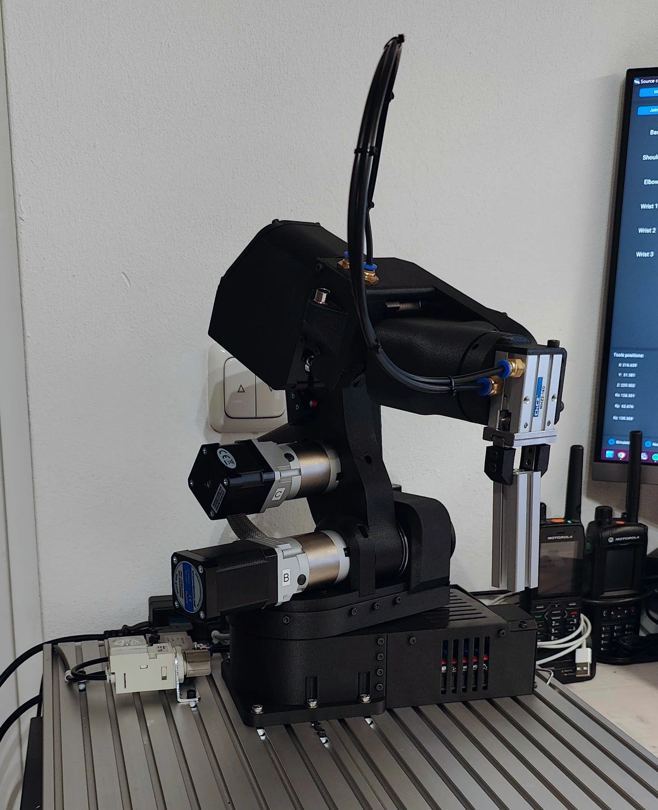
Clamps¶
For a desk, clamp the base to the edge with two screw clamps over the base's rim. Check that the clamps do not interfere with the fan intake and the connectors at the back.
A profile frame¶
The repository's STL/UTILITY
folder has connectors_4_alu_profiles.STL, which prints a set of corner connectors for a frame of 30×30
profiles, as in the figure. You need M5 T-nuts, M5 × 12 mm screws for the connectors and M5 × 18 to 20 mm screws
for the base.

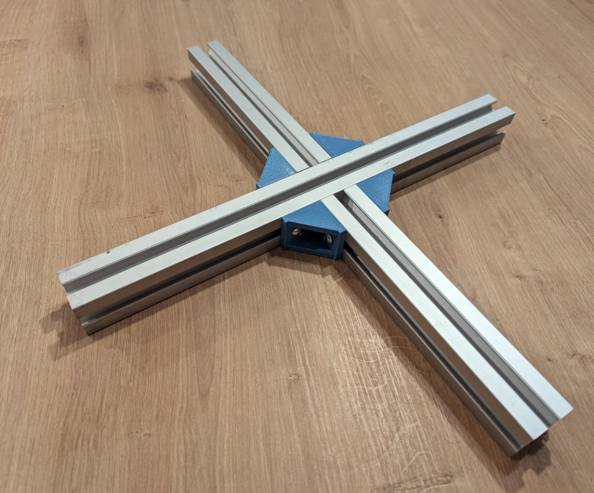
Mounting plates¶
The mounting plates folder of the repository has STEP files of a small and a big base plate, with the hole
pattern, for a plate you have machined or cut.
Orientation¶
PAROL6 is designed to stand upright on its base. Wall and ceiling mounting are not supported: the payload, the motor currents and the speed limits are set for an upright arm, and with no brakes the arm would fall into the mount when powered off.
Connecting¶
The robot needs three connections to run. They are on the back of the base.
| Connection | Connector | Notes |
|---|---|---|
| 24 V power | GX16 2-pin | From the 24 V 5 A supply. Mind the polarity when you wire your own cable: the board has no reverse-polarity protection |
| USB | USB type B | To the PC. USB does not power the board |
| E-stop | Two screw terminals | A normally closed contact between them. Open means stop |
Plug the power supply into the mains through a switch within your reach, a switched socket strip for example: it is the stop that still works when the PC software has frozen (Emergency stop).
The E-stop¶
The E-stop must be a normally closed contact: pressing it, unplugging it or cutting its wire opens the circuit, and all of these stop the robot, which is what you want. A normally open button does not work. The control board has two E-stop connectors on the same input, so a second button can be wired in series.
The kit's button comes with a printed housing and a PG7 cable gland. Emergency stop says what happens when it is pressed, and the Control Board Manual has the wiring diagram.
The gripper¶
An electric gripper (SSG-48, MSG) plugs into the M8 connector at the forearm, which carries 24 V and CAN: Electric grippers. Pneumatic tubes from the valve go to the two push-in fittings at the base: Pneumatics.
Inputs and outputs¶
The two inputs, two outputs and their supply terminals are on the side of the control board, reachable through the base: Inputs and outputs.
Nothing else on the programming port
The 2×5-pin programming header next to the USB port is for the ST-Link programming adapter only. An ST-Link connected with plain jumper wires without the adapter has destroyed boards. See Firmware.
First power-on¶
The first time, and every time after that:
- Check the E-stop is connected and released.
- Hold the arm by the forearm. The motors energise with a jolt, and until they do the arm is limp.
- Press the power button on the base. The 24 V stage switches on, each driver initialises with a click, six clicks, and the arm holds its position.
- Let go. The robot is now enabled, not homed, and waiting for the PC.
Check
Six clicks, the fan runs, and the arm holds when you let go. If not: If nothing happens.
Nothing moves until the PC software commands it. Start the commander software or the Python API's controller, connect, check the jog directions and home: the Quick start walks through it.
What the button does¶
The button is not a switch in the power line: it tells the firmware to turn the 24 V stage on, and the firmware keeps it on. A short press while the robot is on turns it off. The board stays powered, and turns itself on, as long as 3.3 V is present on the programming header, which is why a connected ST-Link keeps the robot on and the button useless: Switching on and off.
If nothing happens¶
- No clicks, no fan: no 24 V. Check the supply, the GX16 cable and its polarity.
- Clicks, but the PC software does not connect: the serial port name, or the board runs the test firmware. See Communication.
- The board turned on by itself when the supply was plugged in: something supplies 3.3 V to the programming header, or the arm was moved while unpowered (Hazards).
5. Operation
5. Operation¶
How the robot is switched on and off, homed, jogged and run, what happens when something goes wrong, and how it is mastered.
In this chapter¶
Each page says what to do in the commander software and in the Python API; the details of either are in the Programming Guide.
Switching on and off¶
Switching on¶
- E-stop connected and released; power supply on; USB to the PC.
- Hold the arm by the forearm.
- Press the power button on the base. The fan starts, the six drivers initialise with a click each, and the motors hold the arm.
- Start the PC software and connect. The robot is enabled and not homed; nothing moves until you command it.
The firmware energises the motors at the moment the 24 V stage comes up, whether or not a PC is connected, and holds them with the holding current from then on.
Switching off¶
Not while it moves
Never switch the robot off while it is running a program or carrying something. If it behaves unexpectedly, press the E-stop; if the E-stop has no effect, switch off the power supply. The power button is the last resort, and only with the arm held.
- Stop the program and bring the arm to the parked pose, folded in over the base, where it has the least
distance to fall. In the commander, Park writes a three-line program into the program window that moves
there; press Start to run it. In the Python API,
rbt.move_j([90, -144.683, 108.171, 2.222, 25.003, 180], speed=0.3)moves to the same pose. - Disconnect in the software, or stop the controller.
- Hold the forearm.
- Press the power button. The motors release at once and the arm goes limp in your hand.
The button and the programming adapter¶
The button does not switch the power line: it tells the firmware to turn the 24 V stage on and off. The microcontroller itself runs from 3.3 V derived from that stage, or from the programming header. While an ST-Link or the programming adapter is connected, the board has 3.3 V, turns on by itself when the supply is plugged in, and cannot be switched off with the button. Upload firmware with the 24 V supply disconnected, then unplug the adapter, then plug the supply in and press the button (Firmware).
After a power failure¶
The arm has fallen. Check that nothing is damaged and nothing is trapped under it, switch on as above, and home before anything else: the position is lost.
Homing¶
After power-up the robot does not know where its joints are: the motors count steps, and the count starts at zero wherever the arm happens to stand. Homing gives each joint a reference by driving it to its limit switch or sensor, then moving a known number of steps to the after-homing pose. It must be done after every power-up, and again after a collision, a stall or any move by hand.
Before you press Home¶
- The arm can move freely to every limit: nothing on the table in the way, no cable caught.
- The tool is mounted: joint 5 homes against the tool's feature on the SSG-48 and the pneumatic gripper, and the homing offset in the firmware matches the tool (Joint 5 and the tool, SSG-48).
- Joint 6 stands so that it finds its sensor within one turn in the negative direction, with the cables and tubes not already wound up. The figure shows the pose: the gripper as drawn, the sensor (blue) and the homing pin (red); joint 6 turns along the green arrow.
- You are at the E-stop.
The sequence¶
The firmware runs the sequence; the PC only starts it and watches.
flowchart TD
S([Home]) --> A[Joints 1, 2 and 3 drive together to their sensor and switches]
A --> B[Each backs off about a thousand steps and approaches again slowly:<br>the second trigger is the reference]
B --> C[Joints 1, 2 and 3 move to their after-homing positions]
C --> D[Joint 4: the same against its inductive sensor, then its after-homing position]
D --> E[Joint 6 turns in the negative direction until its sensor sees the pin,<br>backs off, re-approaches, moves on so that joint 5 can home]
E --> F[Joint 5 homes against its switch]
F --> G[Joints 5 and 6 move to their after-homing positions together]
G --> H([Every counter set to its after-homing value: six joints homed])- Joints 1, 2 and 3 move together toward their switches: joint 1 to its inductive sensor, joints 2 and 3 to their limit switches. Each stops when it triggers.
- Each backs off, 850 steps on joint 1 and 1050 on joints 2 and 3, and approaches again slowly, and the position where it triggers the second time is the reference: the first hit may have pressed the switch too far.
- Joints 1, 2 and 3 move from the reference to their after-homing positions (13500, 19588 and 23020 steps away).
- Joint 4 does the same against its inductive sensor (backing off 1550 steps) and moves to its after-homing position.
- Joint 6 turns in the negative direction until its sensor sees the homing pin, backs off, re-approaches, and moves on to the position from which joint 5 can home.
- Joint 5 homes against its switch, and joints 5 and 6 move to their after-homing positions together:
joint 5 by
j5_homing_offset, joint 6 back to the point where its sensor triggered. - The firmware sets every joint's counter to its after-homing value (
standby_positionin the firmware), and reports all six joints as homed.
A video of a correct homing: Homing reference. It takes about half a minute. The result is the after-homing pose: the standby pose turned 90° about joint 1, with joint 1 at +90° (Joint limits and directions).
Press Home. The response log reports the joints as they home; the position display and the simulator are right once all six are homed.
home() after power-up runs the referencing sequence. A later home() on a referenced robot is a
planned, collision-checked joint move back to the after-homing pose; home(calibrate=True) runs the sequence again.
Planned motion is refused with MOTN_NOT_HOMED until the robot is referenced.
If it goes wrong¶
Press the E-stop when a joint grinds at its end without stopping: its switch does not trigger. Joints 1, 4 and 6 use inductive sensors whose LED lights when they see metal; a sensor that does not light needs its trigger screw adjusted. If joint 6 keeps turning, its homing pin is not where the sensor looks. Homing failures has the cases.
Mastering¶
A homed robot stands within a few steps of the after-homing pose. The exact number of steps from each switch to the witness marks differs between builds; Mastering says how to measure and set it.
Jogging¶
Jogging moves one joint, or the tool along one axis, for as long as you hold a button or repeat a command. It is how you check a new robot, teach a pose and get out of trouble.
Joint jog¶
Each joint has a pair of arrows in the commander's Joint jog menu: the left arrow is the positive direction, the right arrow negative, as in Joint limits and directions. The speed slider sets the speed as a percentage of the commander's jog maximum, which is lower than the speed a program may use (Speeds). A jog stops at the joint limit.
rbt.jog_j(0, speed=0.3, duration=0.5) # joint index 0 = J1, 30 % speed, 0.5 s
rbt.jog_j(joints=[1, 2], speeds=[0.2, -0.2], duration=1.0)
duration and the arm brakes to rest when no newer jog arrives; a GUI repeats it while
the button is held. Joints are indexed from 0 in the API.
Cartesian jog¶
The tool moves along X, Y or Z, or rotates about them, in the world frame (WRF, fixed to the base) or the tool frame (TRF, fixed to the tool). The commander's Cartesian jog menu has the six pairs of arrows and the WRF/TRF switch; a jog in the tool frame moves the tool along its own axes, which is the natural way to approach a part.
A Cartesian jog needs a homed robot, and it can run into a singularity, where the planner cannot find joint speeds for the tool's motion: the commander stops the jog, and the Python API refuses it. Jog a joint away from the singular pose and continue (Configurations and singularities).
Jogging a robot that is not homed¶
Joint jog works before homing: it is how you check the directions on a new build. The positions shown are meaningless until the robot is homed, and a Cartesian jog is refused.
Both programs still check each jog against the joint limits, with a position count that starts at 0 when the board is switched on. That count puts joint 2 past its positive limit and joints 3 and 6 at or below their negative limits, so until the robot is homed:
- joint 2 jogs only in its negative direction (the right arrow);
- joints 3 and 6 jog only in their positive direction (the left arrow);
- joints 1, 4 and 5 jog both ways.
A refused jog does not move: the commander logs Error: Robot jog -> Position out of range, the Python API stops
the joint before it starts.
Warning
Before homing, the limits are checked against a count that does not match the arm, so they do not protect the joint: nothing stops it at its real limit except the printed blocker. Jog briefly and slowly.
Running programs¶
A program is a list of moves, delays, I/O and gripper commands. PAROL6 runs programs in two ways.
RBTscript in the commander software¶
The commander's Program window takes an RBTscript program: one command per line, MoveJoint, MoveCart,
MoveCartRelTRF, Delay, Output, Gripper, with Begin() and End() or Loop() around it. The command
list next to the window inserts a command with the robot's current pose as its arguments, which is how you teach
points: jog to the pose, click the command. Start runs the program, Stop halts it.
Begin()
MoveJoint(90,-90,180,0,0,180,t=3)
MoveCart(0,263,242,90,0,90,t=2)
Output(1,HIGH)
Delay(1)
Output(1,LOW)
End()
RBTscript has the language and Examples has programs to start from. Programs are plain text files you can keep and share.
Python with the Python API¶
A Python script that calls the client is a program: every motion call queues a move on the controller, and the script waits for it or not, as you choose.
from parol6 import RobotClient
with RobotClient() as rbt:
rbt.home(wait=True)
rbt.select_tool("SSG-48")
rbt.tool.calibrate()
rbt.delay(2) # the SSG-48 needs about 3 s; calibrate() waits only 2 s
rbt.move_j([90, -90, 180, 0, 0, 180], speed=0.5)
rbt.move_l([0, 263, 200, 90, 0, 90], speed=0.3)
rbt.tool.close(speed=0.5, current=0.4)
rbt.move_l([0, 263, 242, 90, 0, 90], speed=0.3)
rbt.tool.open()
The Python API also runs programs written for other tools, and from other machines: the controller accepts commands over the network from any client, so a program can run on a laptop while the controller runs on the PC at the robot. The Python API is the guide.
Simulate first¶
Both programs have a simulator. The commander opens its 3D window with the GUI and mirrors the robot; the Python
API's controller runs with simulator(True) or the DryRunRobotClient without hardware, through the same
kinematics and collision checks. Run a new program in the simulator at full speed, then on the robot at low speed.
Speed¶
The commander's speed slider scales jogging only; a program's speed is in its moves, v= and a= or t=. The Python API takes a speed fraction per move and
set_execution_speed() scales the queue while it runs; pause() and resume() hold and continue it.
Stopping a program¶
- Stop in the commander, or
stop()in the API: the current move is cancelled, the queue cleared, the robot stays enabled and holding. - The E-stop: the robot is disabled and the program or the queue is stopped; in the Python API, call
reset()after releasing it (Emergency stop). - Closing the software: stop the program first. The firmware has no timeout: it keeps executing the last packet it received until the next one arrives. After a move to a position the joints stop near that target and hold.
When the PC stops sending during a jog
If the commander closes, crashes or loses the USB connection while a joint jogs (in joint or Cartesian
jog), the firmware keeps that joint turning at its jog speed until it reaches its blocker. Programs that use
speed tracking (speed as the last argument of a move) behave the same way. Use the mains switch of the power
supply (Emergency stop).
Errors and recovery¶
What the robot reports¶
Every 10 ms the control board sends the PC the joints' positions and speeds, which joints are homed, the state of the inputs, outputs and E-stop, the gripper's status, and two error bytes reserved for the drivers' temperature and position flags. The PC software adds its own: inverse kinematics failures, limit violations, timing problems.
The commander software¶
The response log shows what the robot and the program are doing and why a command was refused. The common entries:
| Log | Meaning | What to do |
|---|---|---|
| Robot disable; button or estop | The E-stop is open, or Disable was pressed | Release the E-stop; press Enable |
| An inverse kinematics error | The target pose has no solution, or lies past a singularity | Change the pose or the approach; move in joint space to get near it |
| A joint limit error | The move would leave a joint's range | Choose a reachable target |
| Jogging stops in Cartesian mode | A singularity | Jog a joint away from it |
| The time between commands rises above 10 ms | The PC cannot keep the 100 Hz loop | Close other programs; a faster PC (Communication) |
Enable clears the errors and enables the robot; Clear error resets the homing state but does not re-enable a disabled robot; Disable stops the firmware from accepting motion commands while the motors keep holding.
The Python API¶
A refused command raises MotionError with a code, a cause and a remedy, from the controller's error catalog:
IK_TARGET_UNREACHABLE, MOTN_NOT_HOMED, SYS_ESTOP_ACTIVE, SYS_SELF_COLLISION, MOTN_CANCELLED and the
others on Errors. error() returns the current error, activity() what the
robot is doing. After an E-stop is released, call reset(): it enables the firmware again, and until then the arm
does not move. After stop() nothing needs clearing.
After a collision or a stall¶
The motors have lost steps and the arm is not where the software says. Stop the program, move the arm clear if it is trapped (disable it, or switch off with the forearm held), check the belts and the printed parts, and home again before anything else.
After the arm fell¶
Power was lost with the arm extended. Check every joint by hand for free movement, look at the belts and the couplers, switch on with the forearm held, and home.
A joint moves the wrong way¶
On a new build or after work on the wiring: stop at once. The direction is set per joint in the firmware (Firmware and first run); do not try to home until every joint jogs in the right direction.
The gripper reports an error¶
The electric grippers report their own errors through the robot: not calibrated, E-stop, timeout. The commander's
Gripper tab has Clear gripper error and Calibrate gripper: clear the error first, then calibrate,
and wait until the calibration has finished before the first move. The Python API's tool.calibrate()
calibrates but has no clear (SSG-48, MSG). The gripper
manuals explain each error.
Mastering¶
Homing brings each joint to its switch and then a fixed number of steps to the after-homing pose. That number is in the firmware, measured on the reference robot. Printers and parts differ, so on your robot the homed pose may be off by a fraction of a degree per joint. Mastering measures the difference and corrects the number, so that a homed robot stands exactly at its witness marks.
Witness marks¶
Holes in neighbouring links that line up when the joint stands where homing should leave it, in the after-homing pose (90°, −90°, 180°, 0°, 0°, 180°): a pin pushed through them proves the pose. PAROL6 has them on every joint.

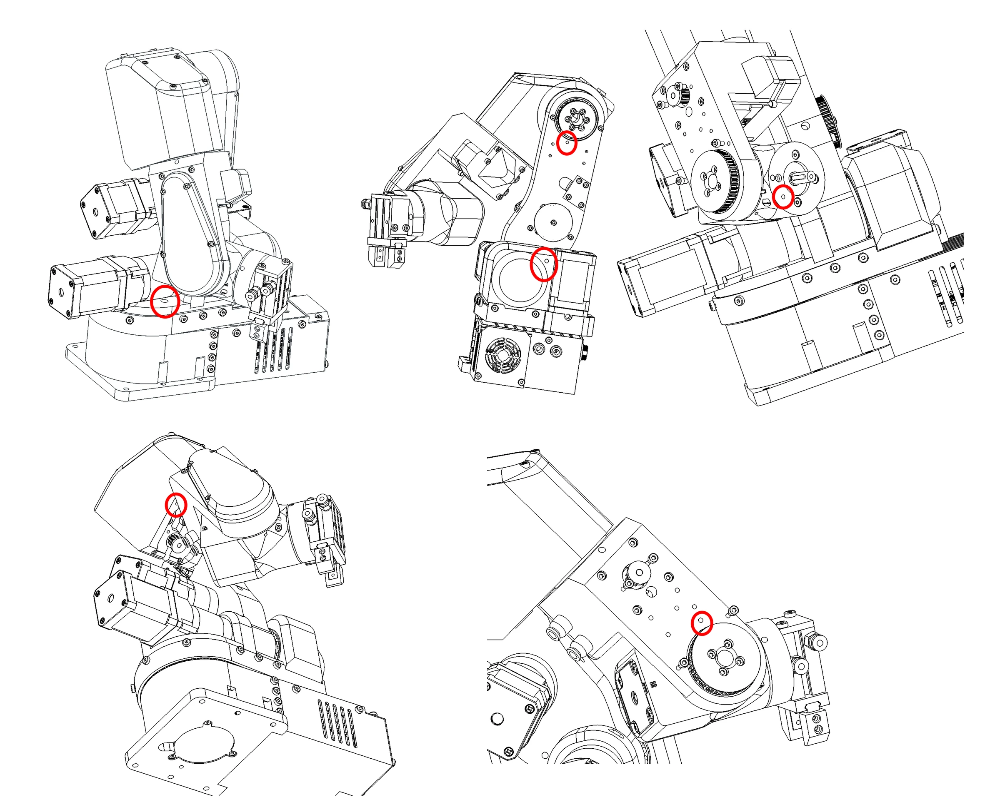
The procedure¶
- Home the robot.
- For each joint, jog it in small steps until the pin fits through its witness marks. Jog at the lowest speed
and read the joint's position from the commander's position display or
rbt.angles(). - Convert the angle you jogged by to motor steps with the joint's ratio (Drives, ratios and resolution), or read the step count from the firmware's telemetry.
- For joints 1 to 4: in
motor_init.cpp, add that number of steps to the joint'shomed_position(subtract if you jogged in the negative direction), upload the firmware, and home again. The pin should now fit without jogging. Joints 5 and 6 work differently, below.
/// @brief Number of steps from when the limit switch is hit to the standby position
Joint__->homed_position = 13500; // joint 1: raise or lower by the steps you measured
The values of the reference robot are on Firmware parameters.
Joint 5 and the tool¶
Joint 5 homes against a feature of the tool, so its number depends on the tool: 8900 steps with the pneumatic
gripper holder and 8035 with the SSG-48, set as j5_homing_offset in main.cpp. Master joint 5 by changing that
value, not its homed_position. A custom tool needs its own value, found the same way.
Joint 6¶
Joint 6 has no offset to master in firmware 1. Its homed_position (15900) is only the position from which
joint 5 homes: when joint 5 is done, joint 6 turns back to the point where its sensor saw the homing pin, and that
point is its after-homing position. If joint 6 does not line up with its witness marks after homing, move its
sensor or its homing pin.
When to master again¶
After replacing a belt, a switch, a sensor or a printed part of a joint, or when the robot's absolute accuracy matters more than its repeatability. The repeatability does not depend on mastering: a homed robot returns to the same place every time, whether or not that place is exactly the witness mark.
6. Peripherals
6. Peripherals¶
Everything the robot talks to besides the PC and the tool: switches and sensors on its inputs, valves and lamps on its outputs, the air for the pneumatic gripper, and the CAN bus for the electric grippers.

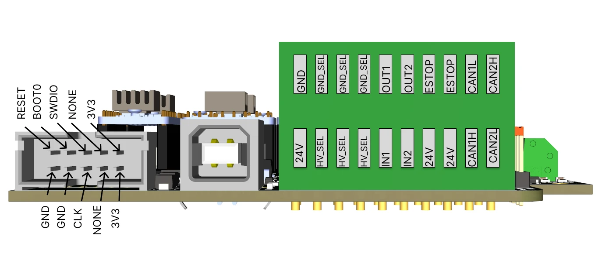
In this chapter¶
The electrical details of the connectors are in the Control Board Manual.
Inputs and outputs¶
The control board has two isolated inputs and two isolated outputs on screw terminals at the side of the board, reachable through the base. They are isolated from the robot's electronics through optocouplers, and they share a supply that you choose.
The supply¶
- Isolated: connect an external supply's negative to GND_SEL and positive to HV_SEL. The inputs and outputs then work at that voltage, 12 or 24 V (the inputs need at least 12 V), and a fault on them cannot reach the robot.
- Not isolated: link the robot's own 24 V and GND to HV_SEL and GND_SEL. Simpler, and the valve of the pneumatic gripper is usually wired this way. A 2 A fuse protects the outputs in this mode.

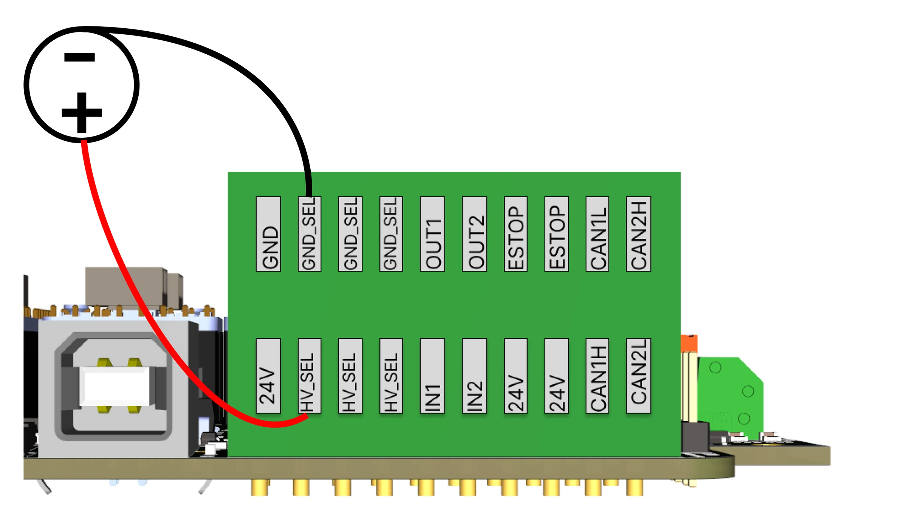

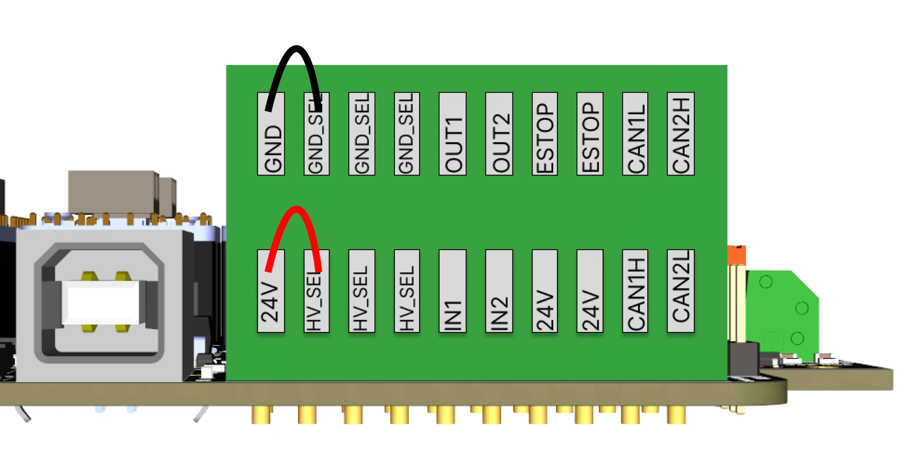
The E-stop is not part of this: it is wired to the robot's own supply whichever option you choose.
Inputs¶
Switches, push buttons, light barriers and sensors. A switch goes between HV_SEL and IN1 or IN2; a three-wire sensor takes HV_SEL and GND_SEL for its supply and gives its signal to the input. Input voltage 12 to 50 V, 24 V nominal.
The robot reports the inputs in every packet: the commander's IO tab shows them, and the Python API's io()
returns [in1, in2, out1, out2, estop]. RBTscript's Input() has no action yet: a program stops on it
(Known issues).
Outputs¶
Relays, valves, lamps, small actuators, up to 0.5 A each (1 A peak), 48 V maximum. A load goes between GND_SEL and OUT1 or OUT2; the output switches it to the supply. An inductive load, a valve or a relay coil, gets a flyback diode across it.
Only output 1: in the current commander version Output(2,...) is refused by a bug in its check and stops
the program (RBTscript).
The commander's IO tab switches the outputs by hand.

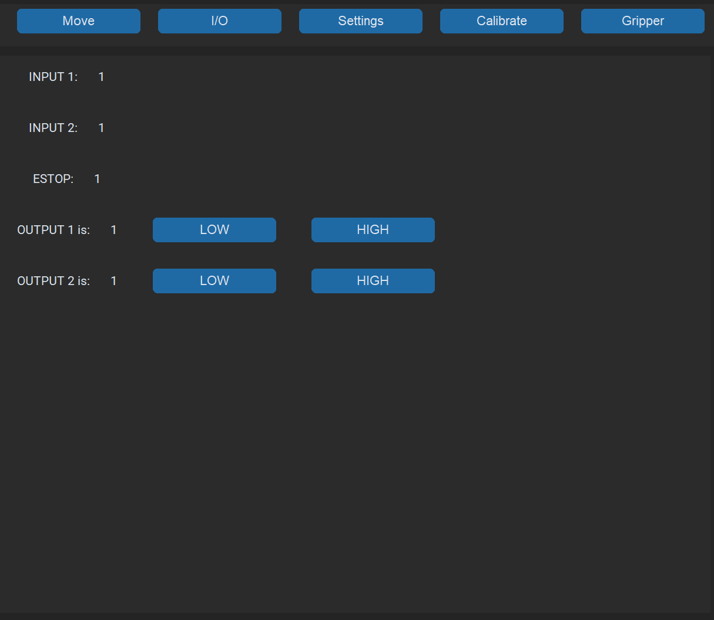
Pneumatics¶
Two 4 mm tubes run inside the arm from the push-in fittings at the base to the forearm, where the pneumatic or vacuum gripper connects. A 5/2 solenoid valve at the base, driven by an output, switches the air.
Pressure¶
5 to 7 bar; check your gripper's rating, and stay below the lowest rating of the gripper, the valve and the fittings. The tubes and fittings are standard 4 mm pneumatic parts.
The valve¶
A 5/2 valve, 24 V coil, 4 mm ports: one port from the compressor, two to the base fittings, the exhausts open. The coil goes between GND_SEL and OUTPUT1 (Inputs and outputs). Which of the two outputs is pressurised when the coil is off decides whether the gripper is normally open or normally closed: swap the two tubes to change it.

Routing¶
The arm's tubes run inside it from the base to the push-in fittings on the forearm; they are one reason for the one-turn rule of the joints. From the forearm fittings, the gripper's own tubes cross joints 5 and 6 outside the arm, like an electric gripper's cable: give them enough slack for the range you use, since they, not the flange, limit joint 6. Outside the base, give the tubes a loop so the arm cannot pull them.
A vacuum gripper¶
Needs one line only: block the valve's second port (Vacuum gripper).
In the Python API, a pneumatic or vacuum tool's open() switches output 1 high and close() switches it low,
whatever the tubing does: lay the tubes so the two match (Pneumatic gripper).
CAN bus¶
The control board has a CAN bus for the electric grippers, wired to the M8 connector at the forearm. The board is the master: it sends the gripper the command from the PC's packet every cycle (a move, a calibrate, a clear error, or an empty status poll when nothing changed) and relays the gripper's answer back to the PC.
- Bit rate: 1 Mbit/s, the grippers' rate.
- Node ID: the gripper's CAN ID, 0 as shipped; the PC packet carries the ID the board addresses, so a gripper with another ID works if the software is told.
- Termination: 120 Ω at each end of the bus. At the board end, the CAN1 JUMPER connects the board's 120 Ω resistor when it is on; at the other end, the gripper has its own termination switch, on as shipped (CAN bus).
A second CAN controller is on the board, but its transceiver is not populated: CAN 2 is for your own experiments. More axes on the bus, a seventh axis or a second gripper, are not supported by the firmware or the software yet; the protocol the grippers speak is documented in the STEPFOC and Spectral Micro references for anyone who wants to extend it.
The electrical side is in CAN bus of the Control Board Manual.
7. Maintenance
7. Maintenance¶
PAROL6 needs little: belts that stay tight, set screws that stay put, switches that trigger. Check them at the intervals below and after any collision.
| Interval | What |
|---|---|
| Before each session | The E-stop works (press it with the robot enabled); nothing in the workspace; the cables and tubes free |
| Monthly, or every 50 hours | Inspection: belts, couplers, switches, fan, printed parts |
| After a collision, a fall or a lost step | Inspection, then Checking the homing |
| When a belt slips or a joint is loose | Belts, Couplers and threadlocker |
Before any work inside the base, unplug the supply and touch earthed metal: static electricity damages the control board and its drivers.
In this chapter¶
Inspection¶
With the robot switched off and the supply unplugged:
- Belts (joints 1, 3, 4, 5): press each with a finger through its cover opening; it should give a little and spring back. A belt that sags or that you can push against the pulley needs tensioning (Belts). Look for frayed edges and missing teeth.
- Couplers and set screws: hold the output of each joint and try to turn the motor side; any play that is not the gearbox's backlash is a loose set screw (Couplers and threadlocker).
- Limit switches and sensors: press each switch lever; it should click. The inductive sensors' LEDs light when a screw head comes near.
- Printed parts: cracks at screw bosses and bearing seats, especially on the elbow and the upper arm, and any warping of the forearm from heat.
- Cables and tubes: chafing where the arm's cables pass through the joints, and where the gripper's cable and tubes cross joints 5 and 6 from the forearm; the gripper cable's connector tight.
- The fan: turning when the robot is on, and the intake free of dust. A stopped fan overheats the drivers.
- The base: the mounting bolts tight, the E-stop button firm in its housing.
Then switch on, home, and watch the homing: each joint should back off and re-approach its switch cleanly, and the pose at the end should match the witness marks (Checking the homing).
Cleaning¶
Clean the robot switched off and unplugged. Wipe the printed parts with a dry or slightly damp cloth; use no solvents on them, and never spray anything into the base, where the control board and the fan are open to it. Clear dust from the fan intake with a soft brush or a vacuum cleaner, not with compressed air, which drives the dust into the board.
Belts¶
Belts drive joints 1, 3, 4 and 5. Over time they stretch a little and the joint loses stiffness; a belt that slips a tooth loses the robot's position.
Tension¶
The reference is the belt tension video: in it, maximum hand force is applied to the belt, and that is the tension to aim for on joints 3 and 5. Joints 1 and 4 take slightly less. A belt is tensioned by adding or moving the small tension bearings (3 × 8 × 4 mm and 3 × 10 × 4 mm) that press on its back; if a belt is not tight enough, add another bearing as in the photos. You may or may not need a tensioner on a given joint: it depends on your belts and printed parts, so fit one only where the belt is not tight enough without it.
Joint 5 belt¶

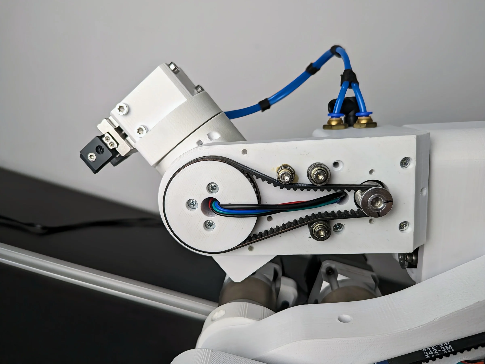
Joint 4 belt¶

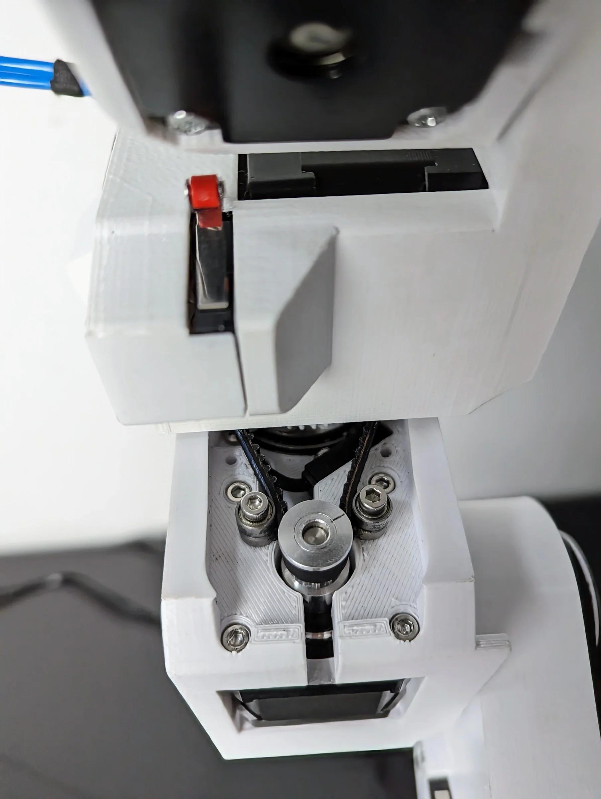
Joint 3 belt¶

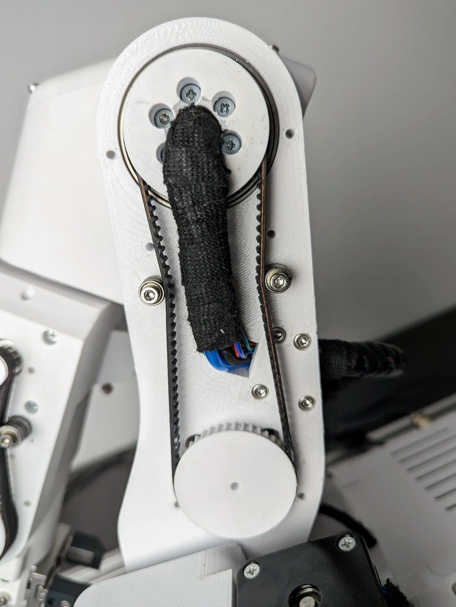
Joint 1 belt¶

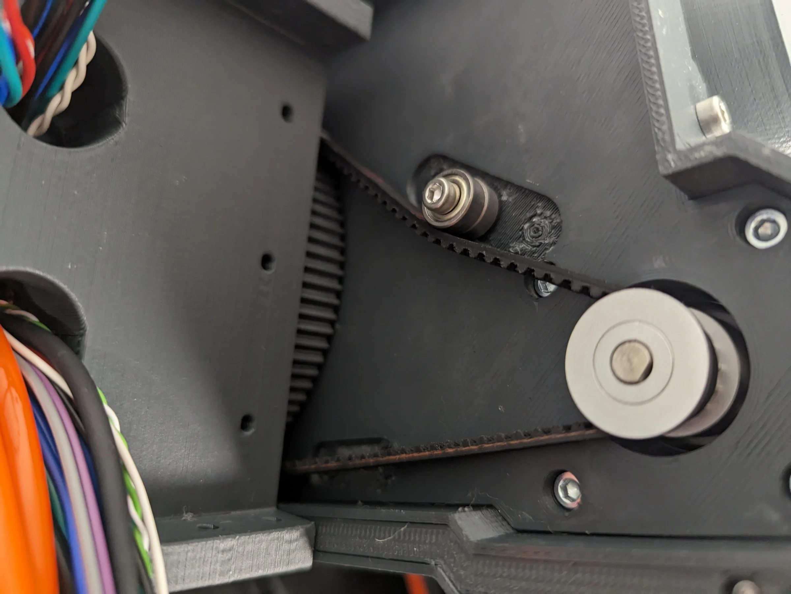
Grease¶
A thin film of grease on the belts' teeth reduces noise and wear. Reapply when it dries out.
Replacement¶
| Joint | Belt |
|---|---|
| Joint 1 | HTD3 396 mm, 6 mm wide |
| Joint 3 | HTD3 342 mm |
| Joint 4 | HTD3 201 mm |
| Joint 5 | HTD3 246 mm |
Replacing a belt means opening the joint as in the assembly manual; afterwards home the robot and check the witness marks, and master if they do not line up.
Couplers and threadlocker¶
The motor shafts, the gearbox outputs and the joint 6 shaft are joined by couplers and pulleys with set screws on flats or keys. Vibration loosens set screws; a loose one lets the motor turn without the joint, and the robot loses its position without noticing.
- If a joint starts to slip, or its position drifts between homings, find the set screw, tighten it, and apply blue (medium) threadlocker. Do not move the robot for 24 hours while it cures.
- Put a screw on the key as well as on the flat where the part has both.
- Apply threadlocker to every metal-to-metal screw joint on the robot: the motor mounts, the gearbox flanges, the bearing clamps. Printed parts and brass inserts do not need it, and the solvent in some threadlockers attacks plastic: keep it on the metal.
- Never use red (permanent) threadlocker; the parts cannot be taken apart again without heat.
After tightening a coupler, home the robot and check the witness marks.
Checking the homing¶
Homing is the robot's only position reference, so check it after any mechanical work, after a collision, and whenever the robot's accuracy seems off.
- Home the robot and watch each joint: it must reach its switch, back off, re-approach slowly, and move on. A joint that grinds at a stop, or re-approaches at full speed, has a switch problem (Homing failures).
- At the end, try the pin at the witness marks of each joint (Mastering). It should slide in, or nearly. A joint that is off by more than a degree was knocked, slipped, or its switch moved.
- Home three times in a row and compare the witness marks each time. The pose should repeat exactly: if it does not, the switch or the sensor triggers inconsistently, or something in the joint moves.
- Jog to a taught pose from a program and check that the tool is where it was taught.
A joint that homes repeatably but to the wrong place is mastered; a joint that does not repeat is repaired.
8. Troubleshooting
8. Troubleshooting¶
- By symptom: the robot does not turn on, does not connect, moves wrong, stops, makes noise
- Homing failures
- Communication: serial ports, the 100 Hz loop, slow PCs
- Known issues: the faults in the firmware and software that are known and not yet fixed, and what to do until they are
For the control board itself, see the Control Board Manual's troubleshooting; for the software, Programming troubleshooting. When you ask for help, Report a problem says what to include.
By symptom¶
| Symptom | Likely cause | What to do |
|---|---|---|
| Nothing happens at the power button | No 24 V; polarity; the button cable | Check the supply's LED, the GX16 cable, the JST button cable on the board |
| The board turns on by itself when the supply is plugged in | 3.3 V on the programming header (an ST-Link or the adapter is connected); the arm was moved while unpowered | Unplug the adapter; move an unpowered robot slowly |
| The robot cannot be switched off with the button | The same 3.3 V | Unplug the programming adapter |
| Clicks on power-up, but the PC does not connect | Wrong serial port; the test firmware is on the board; Linux permissions | Communication |
| A joint jogs the wrong way | Direction not set for that joint in the firmware; a motor's wires swapped | A joint turns the wrong way |
| A joint does not move at all | Driver not seated or faulty; motor connector; the joint is at its blocker | The test firmware: its driver report at power-on, and whether the motor turns with the others (The test firmware) |
| A joint grinds at its end during homing | Its switch or sensor does not trigger | E-stop; Homing failures |
| Joint 6 keeps spinning during homing | The homing pin is not where the sensor looks | E-stop; set the joint 6 pose as in Homing |
| The pose after homing is off by a few degrees on one joint | A loose coupler, a slipped belt, a moved switch | Couplers, Belts, then Mastering |
| The robot's position drifts during a program | Lost steps: too fast, too heavy, a collision, a reduced current | Lower the speed; check the payload; home again |
| A joint hums or squeals and does not hold | A driver in error, a lost phase | The test firmware's driver report at power-on (its fault flags); check the motor cable |
| Cartesian jogging stops by itself | A singularity | Jog a joint away (Configurations and singularities) |
| A pose from the GUI cannot be reached by MoveCart | The inverse kinematics finds no solution along the straight line | Move in joint space; choose another orientation |
| The robot stutters while moving | The PC misses the 10 ms cycle | Communication |
| The forearm is hot | Hours of motion at the default currents | Currents and temperatures |
| The gripper does nothing | Not calibrated; an error latched; the cable | Calibrate, clear the error; the gripper's manual |
| The E-stop has no effect | The PC software is frozen | Switch off the power supply; see Emergency stop |
Homing failures¶
Stop with the E-stop first; a joint driven against its stop strips a belt or cracks a part.
A joint does not stop at its switch¶
- Joints 2, 3, 5 use mechanical limit switches. Check that the lever is pressed by the moving part, that
the switch clicks, and that it is wired to 24 V and its signal terminal (polarity does not matter). The test
firmware's
#LIMITshows the state live. - Joints 1, 4, 6 use inductive sensors that detect a screw head. The sensor's LED lights when it sees metal. If it does not light as the joint passes, adjust the trigger screw closer; the 4 mm sensors see about 1 to 2 mm. Wiring: brown 24 V, blue GND, black signal.
- A switch on the wrong joint's terminal: wire each switch and sensor to the terminal the
wiring diagram shows for its joint; the test
firmware's
#LIMITshows which input changes when you press a switch.
A joint stops too early¶
The switch triggers before the joint reaches it: a wire shorted, a sensor too close to a screw it should not see, or a switch lever caught. Also the reason a homed pose is far off on one joint.
Joint 6 turns more than a turn¶
Its sensor never sees the homing pin. Before homing, turn joint 6 by hand so that the pin is just before the sensor in the direction of rotation (Homing), and check the sensor's gap.
Joint 5 does not reach its switch¶
The tool's homing feature is missing or in the wrong place, or the firmware's j5_homing_offset is for another
tool (Your own tool).
The homed pose does not match the witness marks¶
By a fraction of a degree: master the joint. By more: the joint slipped, a belt or coupler, or the switch moved. Inspect, then master.
Homing never finishes in the software¶
The PC lost the packet stream, or the firmware is waiting for a joint that does not report. Check the log, press
Clear error or reset(), and home again.
Communication¶
The serial port¶
The control board appears on the PC as a serial port over USB: COMx on Windows, /dev/ttyACMx on Linux and
/dev/cu.usbmodem… on macOS. The commander takes COM5 or ttyACM0 in its connection field; the Python API's controller takes
--serial COM5 or --serial /dev/ttyACM0, or finds the port from PAROL6_COM_PORT.
- Windows: Device Manager, Ports, shows the number. If the board is missing, try another cable or port; the board enumerates only when it has power.
- Linux:
ls /dev/ttyACM*. Permission denied:sudo chmod 666 /dev/ttyACM0, or add yourself to thedialoutgroup and log in again. - Connect fails the first time in the commander: press Connect again; two or three tries are normal.
- The port is busy: another program has it, often a previous instance of the controller.
The test firmware answers, the main firmware does not¶
A board from the shop carries the test firmware, which talks in text. Upload the main firmware (Firmware).
The 100 Hz loop¶
The PC must send a packet every 10 ms. The commander prints Time between 2 commands in ms in its terminal
output; it should sit near 0.010. The number is in seconds, despite the label: 0.010 is 10 ms. If it is often
higher, the robot stutters and the position tracking suffers.
- Close browsers and other heavy programs; disable power saving on the USB port and the CPU.
- A faster PC: six cores from 2017 or newer (What you need).
- The Python API's controller logs
loop overbudget by +N%when its loop runs late, and shows the figures inloop_stats(); it also accepts a lowerPAROL6_CONTROL_RATE_HZ, at the cost of smoothness, and runs worse with TRACE or DEBUG logging on.
The connection drops¶
A USB cable without ferrite near the motors, a hub, or a long cable: use a short, shielded cable straight into the PC. When packets stop, the firmware keeps executing the last one: after a move to a position the joints stop near that target and hold, but a joint that was jogging in the commander keeps turning until it reaches its blocker. Keep the mains switch of the power supply within reach (Emergency stop).
Known issues¶
The faults in PAROL6's firmware and software that are known and not yet fixed, and what to do until they are. The pages that describe each part say the same where it matters; this page collects them in one place. Which versions work together is in Versions and compatibility.
Control board firmware¶
Seen in: release 1.
| What happens | What to do | More | |
|---|---|---|---|
| KI-1 | Enforces the joint limits of the earlier robot model, which differ from those in these pages; a target between the two is accepted. | Keep to the limits in the Joint limits table. | Joint limits |
Control board test firmware¶
Seen in: release 1.
| What happens | What to do | More | |
|---|---|---|---|
| KI-8 | Enables all six drivers when it boots and turns every motor slowly, without a command, with no limits and no homing, until the power is switched off; no command stops them. | Run it with the arm free to move or the motors unmounted, never on a robot folded against its stops. | The test firmware |
| KI-9 | Most command names the parser knows (#STATUS, #STEP1 to #STEP6, #FLASH, #CAN) are answered with Unknown command: only #IO, #LIMIT, #STOP and #start do something. |
Use the four commands that work; CAN has its own test program. | Test firmware commands |
Commander software¶
Seen in: main branch, 2025-09-23.
| What happens | What to do | More | |
|---|---|---|---|
| KI-2 | Enforces the joint limits of the earlier robot model, and computes with its dimensions (a5 = 176.35 mm, the pneumatic gripper's a6 = 62.8 mm), so its Cartesian positions are off by up to about 0.65 mm. | Keep to the limits in the Joint limits table; teach the poses that need accuracy on the robot. | Kinematics |
| KI-3 | Output(2,HIGH) and Output(2,LOW) are refused by a bug in the program check (Invalid Output() command), and the program stops. |
Use output 1 in commander programs, or switch output 2 from the Python API. | RBTscript, I/O |
| KI-4 | SpeedJoint(), Input() and Home() pass the program check but have no action: the program stops on that line until you press Stop. |
Leave them out of programs; home with the Home button before you start a program. | RBTscript, SpeedJoint and SpeedCart |
| KI-5 | SpeedCart(), Get_data and Timeouts are in the command menu but fail the program check: a program that contains one is refused. |
Leave them out of programs. | RBTscript, SpeedJoint and SpeedCart |
| KI-6 | A move's profile written in quotes ("trap") or as func=trap is ignored without a message, and the move gets the default profile. |
Write the bare word, trap or poly, as the last argument. |
RBTscript |
| KI-7 | The Cartesian rotation jog buttons do nothing in the world frame (WRF). | Rotate in the tool frame (TRF), the default. | The GUI |
Python API (parol6)¶
Seen in: 0.9.1.
| What happens | What to do | More | |
|---|---|---|---|
| KI-10 | Enforces the joint limits of the earlier robot model, and computes with its dimensions (a5 = 176.35 mm), so its Cartesian positions are off by up to about 0.65 mm from the model these pages use. | Keep to the limits in the Joint limits table; teach the poses that need accuracy on the robot. | Kinematics |
Something that is not here¶
Check By symptom first. If it is still not explained, Report a problem says what to include so it can be reproduced. A fixed issue stays on this page, under "Fixed", with the version that fixes it.
9. Transport and storage¶
Moving the robot¶
- Home it, then bring it to the parked pose: joints 2 and 3 toward their limit switches so the arm folds over the base. The commander's Park button writes a program that moves there (Switching off). Or move it by hand once it is switched off (Moving the robot by hand).
- Switch off with the forearm held; unplug the supply, the USB and the E-stop.
- Carry it by the base, not by the arm.


Packing¶
Fold the arm as above, put foam under the joint 3 limit switch so that the forearm rests on it and not on the switch, and tape the forearm to the upper arm so that the joints cannot swing. Pack the robot upright in a box with foam around the base; the gripper and the E-stop separately.
Storage¶
Dry, at room temperature, folded. The stepper motors and the drivers have no shelf-life issues; the PETG parts should not be stored where it gets hot, in a car or near a radiator. Before the first use after storage, run the Inspection.
Build guide
Build guide¶
PAROL6 is open hardware: you can print the parts, buy the rest from the bill of materials and build the robot yourself. This guide is the order to do it in, with the facts that are not in the assembly manual; the step by step assembly is in the building instructions PDF and the video playlist.
Warning
A self-built robot is yours to make safe: the motor currents, the wiring, the switches and the stops. Read the Safety chapter before the first power-on, as you would for a bought one.
The steps¶
- Bill of materials: what to buy
- Printing the parts: the material, the settings, the print table
- Mechanical assembly: the manual, the videos, the things to get right
- Electronics and wiring: the control board, the drivers, the motors, the switches
- Firmware and first run: the test firmware, the main firmware, directions, homing
Kits¶
You do not have to source everything yourself. The shop sells the robot in every state between a bag of parts and a working arm:
| What is in it | You add | |
|---|---|---|
| Assembled robot | the robot, built, tested and ready for the commander software | nothing |
| Full kit | every part of the BOM except the printed parts and the power supply | the printed parts, a 24 V 5 A supply |
| Partial kit | the hard-to-find parts: the board, the drivers, the bearings, belts, pulleys, connectors, sensors, switches, the pneumatics | the gearboxes, the stepper motors and the power supply, which are heavy to ship and cheaper from a supplier near you; the printed parts |
| Printed parts kit | every printed part, in PETG, in several colours | everything else |
| Screw kit | every screw and nut of the BOM, counted | everything else |
| Control board, programming adapter | the electronics alone | everything else |
The partial kit is the best value for a builder with a printer: it carries the parts that are hard to find or easy to get wrong, and leaves out the three items a local supplier sells cheaper than we can ship them. A full kit skips the bill of materials; a printed parts kit skips the printing.
Bill of materials¶
This is a copy
The original is BOM/BOM.md in the robot's repository; this page is that
file as of 2026-11-01 (commit 9954df6), with the reference images shown inline. If a link is broken or a part
is wrong, open an issue there, and the fix lands here with the next sync. If you would
rather not source the parts yourself, the shop's kits cover every part or the hard-to-find ones.
Most items have links where you can buy the item, and some of them are affiliate links. Items like screws, belts and bearings can be bought locally or from many other vendors.
Note
If any product links are broken, unavailable, or no longer point to the correct item, please open an issue. You can also use the reference images to find the same or an equivalent part from another supplier.
Screws and Nuts¶
| Diameter / Type | Length | Quantity | Description |
|---|---|---|---|
| M4 | 10 mm | 20 | DIN 912 / ISO 4762 (hexagon socket head cap) |
| M3 | 8 mm | 10 | 2 mm head height |
| M3 | 8 mm | 50 | DIN 912 / ISO 4762 (hexagon socket head cap) |
| M3 | 14 mm | 30 | DIN 912 / ISO 4762 (hexagon socket head cap) |
| M3 nut | — | 10 | DIN 934 / ISO 4032 (hexagon nut) |
| M3 | 25 mm | 10 | DIN 912 / ISO 4762 (hexagon socket head cap) |
| M2 | 10 mm | 10 | DIN 912 / ISO 4762 (hexagon socket head cap) |
| M3 | 16 mm | 10 | DIN 912 / ISO 4762 (hexagon socket head cap) |
| M3 | 6 mm | 10 | Pan head phillips |
| M3 | 12 mm | 30 | DIN 912 / ISO 4762 (hexagon socket head cap) |
| M3 | 35 mm | 10 | DIN 912 / ISO 4762 (hexagon socket head cap) |
| M4 | 16 mm | 30 | DIN 912 / ISO 4762 (hexagon socket head cap) |
| M4 | 14 mm | 10 | DIN 912 / ISO 4762 (hexagon socket head cap) |
| M4 | 50 mm | 10 | DIN 912 / ISO 4762 (hexagon socket head cap) |
| M3 | 15 mm | 2 | Tapered screw head |
Gearboxes¶
Note
For cheaper gearbox options you can use MG series planetary gearboxes. They have bigger backlash but are cheaper. Link — Aliexpress Link
| Name | Type | Quantity | Description | Link | ALT link | Reference Image |
|---|---|---|---|---|---|---|
| Gearbox 20:1 | Nema 17 20:1 | 2 | EG precision planetary | Link | Alt Link | 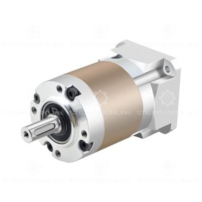 |
| Gearbox 10:1 | Nema 17 10:1 | 1 | EG precision planetary | Link | Alt Link | 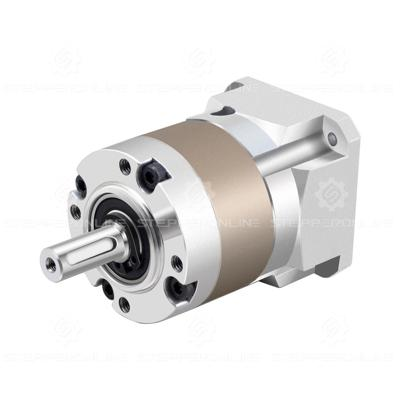 |


Motors¶
| Name | Type | Quantity | Description | Link | ALT link | Reference Image |
|---|---|---|---|---|---|---|
| Stepper 1 | Nema 17 | 1 | 16Ncm, 42x42x20mm | Link | Alt Link | 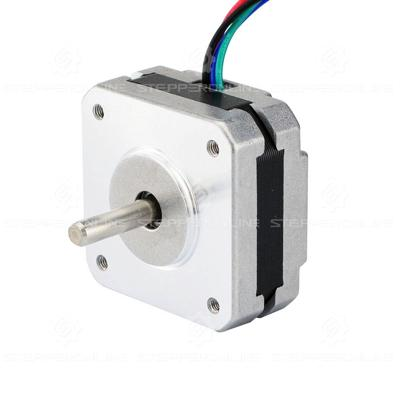 |
| Stepper 2 | Nema 17 | 3 | 45Ncm, 42x42x40mm | Link | Alt Link | 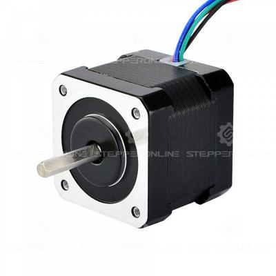 |
| Stepper 3 | Nema 17 | 2 | 65Ncm, 42x42x60mm | Link | Alt Link | 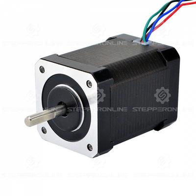 |


Belts¶
| Name | Type | Quantity | Description | Link | ALT link | Reference Image |
|---|---|---|---|---|---|---|
| Joint 1 belt | HTD3 396 | 1 | 6 mm width | Link | 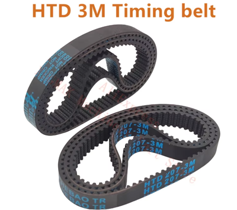 |
|
| Joint 3 belt | HTD3 342 | 1 | 6 mm width | Link | ||
| Joint 4 belt | HTD3 201 | 1 | 6 mm width | Link | ||
| Joint 5 belt | HTD3 246 | 1 | 6 mm width | Link |

Pulleys¶
| Name | Type | Quantity | Description | Link | ALT link | Reference Image |
|---|---|---|---|---|---|---|
| J4 pulley, J5 pulley | HTD3M 12 tooth | 2 | 5mm bore, 10mm width | Link | 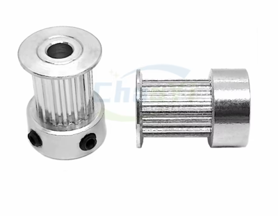 |
|
| J1 pulley | HTD3M 15 tooth | 1 | 5mm bore, 10mm width | Link |

Shaft couplers¶
| Name | Type | Quantity | Description | Link | ALT link | Reference Image |
|---|---|---|---|---|---|---|
| Shaft coupler | Shaft coupler | 3 | 8 mm hole shaft, M4 screw holes | Link | 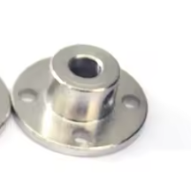 |

Bearings¶
| Name | Type | Quantity | Description | Link | ALT link | Reference Image |
|---|---|---|---|---|---|---|
| Bearing 1 | AXK3552 | 1 | 35X52X4, needs to have top and bottom plate | Link | 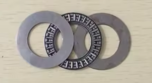 |
|
| Bearing 2 | NSK HR32906J | 5 | Joint 5, 4 and 3 | Link | 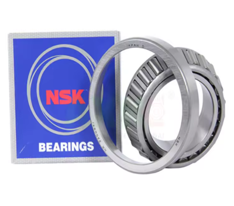 |
|
| Bearing 3 | NSK HR32907J | 4 | Joint 1 and 2 | Link | ||
| Tension bearing | Ball bearing 3x8x4 | 20 | Used for belt tension | Link | 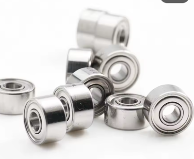 |
|
| Tension bearing | Ball bearing 3x10x4 | 20 | Used for belt tension | Link |


Electronics¶
| Name | Type | Quantity | Description | Link | ALT link | Reference Image |
|---|---|---|---|---|---|---|
| PAROL control board | 1 | source-robotics.com | Link | 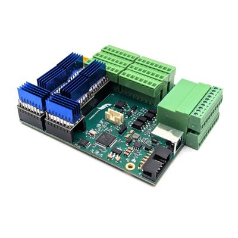 |
||
| TMC5160 | 6 | Drivers from the links are tested. Use any other at own risk | Link | Alt Link | 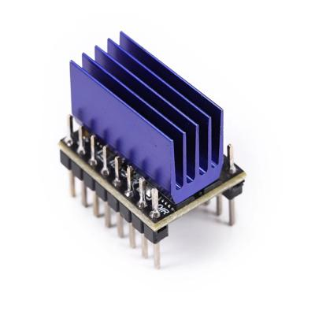 |
|
| Thermal paste / cement | 2 | Needed only if your control board has no drivers! | Link | |||
| On/Off button | 1 | 12mm 3-6V | Link | 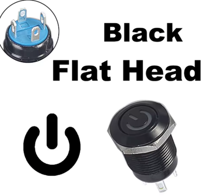 |
||
| JST PH 2.0mm 200mm 4PIN | 1 | For power button | Link | 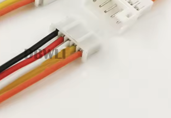 |
||
| Noctua NF-A4x20 5V 40mm | 1 | or any 40mm 5V fan | 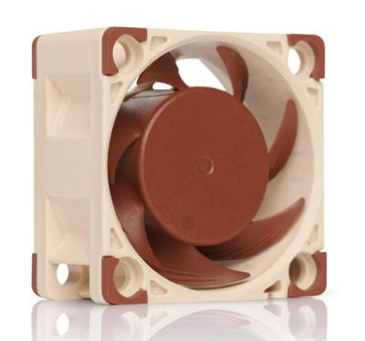 |
|||
| Power connector - male + female | 1 | GX16 2PIN | Link | 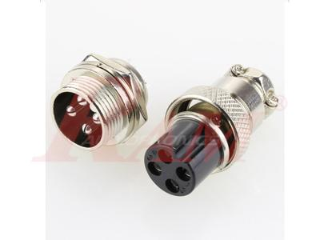 |
||
| Gripper connector (electric) | 1 | M8 sensor Female 4 pin | Link | 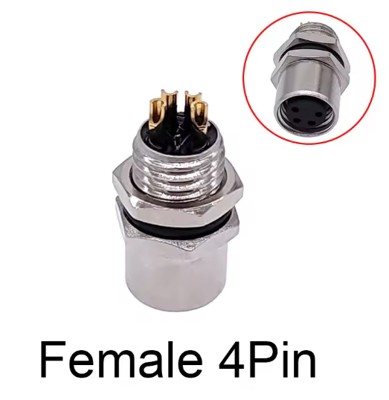 |
||
| Power supply | 1 | Any 24V 5A supply | Link | Alt Link | 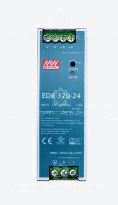 |
|
| Limit switches | 3 | Type ZW12-3 | Link | 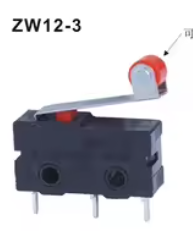 |
||
| Inductive sensor 1 | 1 | 4mm NPN NO | Link | Alt Link | 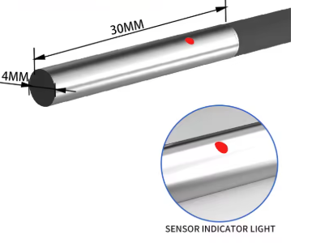 |
|
| Inductive sensor 2 | 1 | GX-F8A | Link | 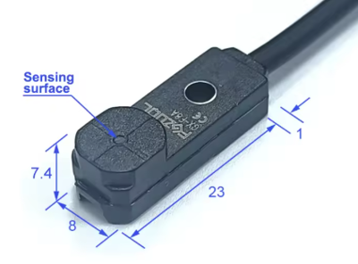 |
||
| Inductive sensor 3 | 1 | M5, NPN NO | Link | Alt Link | 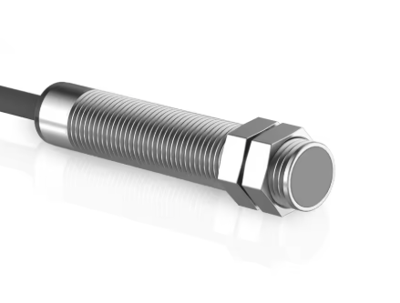 |
|
| Estop | 1 | Any NC estop | Link | 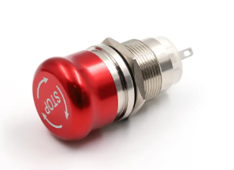 |
||
| Cable gland for estop | 1 | PG7 type | Link | 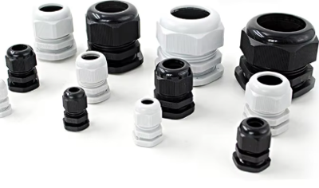 |
||
| M3 brass insert | 4 | M3, 6mm lenght | Link | 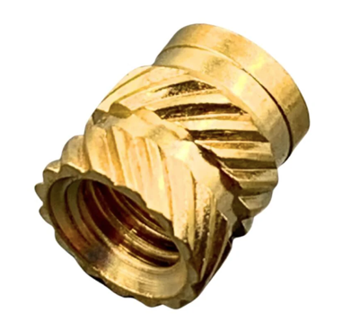 |
||
| Pneumatic connector - robot | 4 | 4 mm type PM | Link | 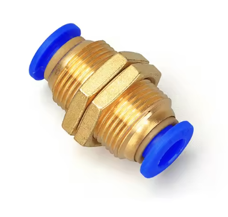 |
||
| Pneumatic Gripper | 1 | MHZ2-16D | Link | 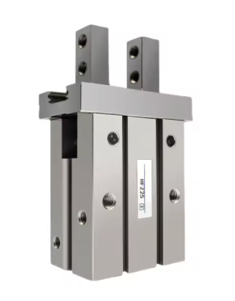 |
||
| Pneumatic gripper connector | 2 | PC4 - M5 | Link | 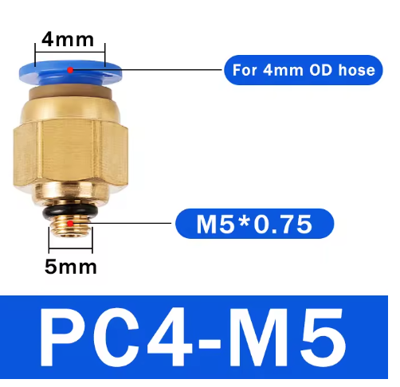 |
||
| Pneumatic tube | 5 meters | 1 meter, 4x2.5mm | Link | 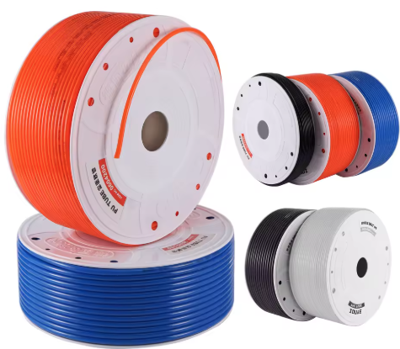 |
||
| xt30 connector female | 1 | Used to deliver power to PAROL6 PCB | Link | 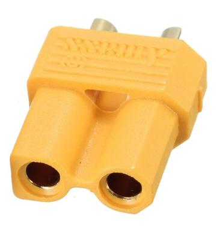 |
||
| Stlink / programming adapter | 1 | Use our Official programming adapter for ease of use! Pin order needs to be: SWCLK, SWDIO, GND, 3V3, 5V | Link | 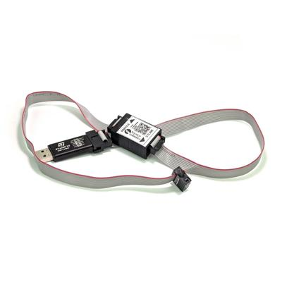 |
||
| USB B cable | 1 | Comms to the PC | 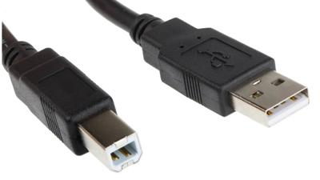 |
|||
| 5/2 solenoid air valve | 1 | 4mm tube connectors, 5/2, 24V | Link | 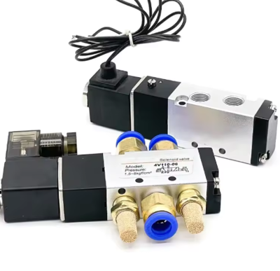 |


Vacuum gripper¶
| Name | Type | Quantity | Description | Link | ALT link | Reference Image |
|---|---|---|---|---|---|---|
| Suction cup gripper | 1 | Link | 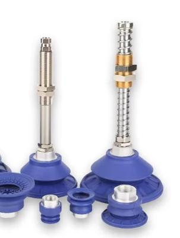 |
|||
| Vacuum generator | 1 | Link | ||||
| 4mm to 6mm coupler | 1 | Link |


Small print bed modification¶
Note
These parts are only needed if your printer bed is too small for J1_turret_rework_blocker and Upper_arm. Both parts are split in two and joined with dowel pins and epoxy after printing. STL files are in STL/SMALL_PRINT_BED. Nothing else in the build changes.
| Name | Type | Quantity | Description | Link | ALT link | Reference Image |
|---|---|---|---|---|---|---|
| J1 turret dowel pin | Dowel pin 4 x 18 mm | 3 | Solid cylindrical, stainless or hardened steel | Link | ||
| Upper arm dowel pin | Dowel pin 6 x 22 mm | 4 | Solid cylindrical, stainless or hardened steel | Link | ||
| Two part epoxy | Epoxy adhesive | 1 | 1:1 mix, slow setting | Link |

Printing the parts¶
Material¶
PETG. The motors run warm and the parts around them see 60 to 70 °C in long use, which PLA does not survive; PETG softens around 80 °C, prints without an enclosure, and bonds layers well. ABS or ASA work with an enclosure. The repository's PETG notes give the printing basics: hot end 220 to 250 °C, bed 60 to 90 °C with glue, a layer fan, and the warping is small.
The files¶
All parts are in the repository's STL folder, grouped by link:
BASE, SHOULDER, UPPER_ARM, ELBOW, FOREARM, WRIST, ESTOP, GRIPPER_ATTACHMENTS, UTILITY, mounting plates,
and SMALL_PRINT_BED for the split versions of the two largest parts.
The print table below says how each was printed on the reference robots; it is a tested starting point, not a
rule.
Print table¶
The print table from the robot's repository, as it is. Every printed part with the settings it was printed with on the reference robots: supports, mass, infill, print time, cooling, layer height, top and bottom layers, perimeters. Click the table to enlarge it. The same table is in the repository as a PDF and as an Excel file.

Print the pulleys with high infill and slow outer walls: their teeth carry the load. Check the first printed pulley against a belt before printing the rest.
Tolerances¶
Bearing seats and shafts are designed for a well-calibrated printer; a seat that is too tight is reamed, one that is too loose is shimmed with tape or a drop of epoxy. Test the fit of the tapered bearings in their seats before assembling a joint.
Inserts¶
Four M3 brass inserts are melted into their holes with a soldering iron; everything else screws directly into the plastic.
Mechanical assembly¶
The assembly is documented step by step in the Parol building instructions PDF and shown in the video playlist. Read the whole manual once before you start: some steps cannot be undone without taking the joint apart again. This page lists what to get right.
The building instructions¶
Download the building instructions (PDF, 8 MB)
Things to get right¶
- Bearings seated square: the tapered roller bearings carry the joint; a bearing that sits crooked makes the joint stiff in one direction and loose in the other.
- Belt tension as in the belt tension video: maximum hand force for joints 3 and 5, slightly less for 1 and 4, with the tension bearings (Belts).
- Threadlocker on every metal-to-metal screw, blue, and on all set screws (Couplers and threadlocker). The couplers between motors, gearboxes and shafts are where a loose screw costs the most.
- The limit switches and sensors positioned so that the moving part presses the lever, or passes the sensor within a millimetre or two, before the joint reaches its mechanical stop.
- Joint 1's blockers fitted: without them joint 1 can spin a full turn and tear its wires.
- Wires and tubes with enough slack through each joint for its full range, and fixed so that they cannot be pinched by the belts.
- Wire markings: the print table spreadsheet's Wire_markings sheet lists the colour code of the motor and sensor cables used on the reference robots, which helps when the base is wired.
Small print beds¶
The J1 turret blocker and the upper arm come split in STL/SMALL_PRINT_BED, with a README. Join the halves with
the dowel pins and slow epoxy, clamp them straight, and let them cure before the joint is assembled.
Custom couplers and flanges¶
The repository's custom_couplers.md is a work in progress on machined alternatives to the shaft couplers, with
a press-fit flange; use the BOM's couplers until it is finished.
Before the electronics¶
Turn every joint by hand through its range. Everything should move smoothly against the gearbox's resistance, with no clicks and no tight spots, and every switch should click as its joint reaches it.
Electronics and wiring¶

The control board goes into the base with its fan and its six driver modules; the motors, switches, sensors, the gripper connector, the E-stop and the power connector are wired to it.
The control board¶
Everything about the board itself is in the Control Board Manual: the connectors, the pin map, the drivers. The two things that destroy boards, both on the Stepper drivers page: a driver module inserted the wrong way round, and a driver without its heatsink cemented on. Read that page before you plug anything in.
Wiring the arm to the board¶

- Motors: one four-wire cable per joint, to the terminals marked with its joint number (
J1_A+toJ6_B-). - Limit switches (joints 2, 3, 5): one lead to 24 V, the other to the LIMIT terminal the wiring diagram shows in that joint's group; polarity does not matter.
- Inductive sensors (joints 1, 4, 6): brown to 24 V, blue to GND, black (signal) to the LIMIT terminal the wiring diagram shows in that joint's group.
- The gripper connector: 24 V, GND, CAN H and CAN L from the board to the M8 socket at the forearm.
- The E-stop: the NC contact to the two E-stop terminals.
- Power: the GX16 socket on the base to the XT30 on the board, polarity checked twice.
- The power button: the JST PH cable to the button connector.
- The fan: 5 V, three-pin, on the fan header; not a PWM fan.
Wire each switch and sensor to the terminal the diagram shows for its joint, joints 1 and 6 included, and check
each one with the test firmware's #LIMIT before you close the base.
The finished base looks like this:


Test before you close the base¶
Power the board with the test firmware and check every driver, switch, sensor, input and output from the serial terminal (The test firmware). It is far easier now than with the base closed and the arm on top. You can also test your motors here, before the arm is assembled, to see that each one works.
Every control board sold by Source Robotics comes with the test firmware preloaded. It is the firmware every board was tested with: each board is fully tested, every part of it, at the end of the production line.
Firmware and first run¶
1. The test firmware¶
A control board from the shop ships with the test firmware. Use it, with the base open and the motors not yet
driving the arm, to check every driver, every switch and sensor, and the I/O from a serial terminal: on the bench
before the arm is assembled, as in Electronics and wiring.
At power-on it prints a report on
each driver (joint N Connection is: GOOD or BAD) and turns every motor slowly; #LIMIT then shows the
switches and #IO the E-stop, the inputs and the supply voltage. The test firmware
has the commands and what good output looks like.
Danger
The test firmware turns all six motors slowly from the moment it boots until the power is switched off; no command stops them. On an assembled arm joints 1 to 5 reach their blockers within about a minute and keep pushing. Use it with the motors free to turn, never on an assembled robot.
Check
Six Connection is: GOOD lines in the report; #LIMIT names each switch while you press it; #IO follows
the E-stop and the inputs and shows the supply near 24000 mV. If not:
Control board troubleshooting.
2. Upload the main firmware¶
The main firmware is in the repository under PAROL6 control board main software; it is a PlatformIO project
for VS Code. Install VS Code and the PlatformIO extension, open the folder, and upload with an ST-Link through the
programming adapter, with the 24 V supply disconnected: Firmware has the procedure and
the warnings.
Check
PlatformIO ends the upload with SUCCESS. If not: Control board troubleshooting.
3. First power-on¶
Unplug the programming adapter, plug in the supply, hold the forearm and press the button. Six clicks, and the arm holds. Start the commander software, connect, and open the joint jog menu.
Check
Six clicks, the fan runs, the arm holds itself, and the commander shows the robot's data. If not: First power-on: if nothing happens.
4. A joint turns the wrong way¶
Jog each joint briefly. The joint must turn as in the figure, which shows each joint's positive direction
(Joint limits and directions). Before homing, the commander checks jogs
against the joint limits with a position count that starts at 0, so some directions are refused with
Error: Robot jog -> Position out of range:
- Joint 2: press its right arrow (negative). It must turn opposite to the figure; its left arrow does nothing until the robot is homed.
- Joints 1, 3, 4, 5 and 6: press the left arrow (positive). It must turn as in the figure.
A joint that turns the other way is the most common first-run problem, and it is fixed in the firmware, not by rewiring:
Upload again and check again. Swapping one motor phase's wires has the same effect, if you prefer to open the base.
Check
The left arrows of joints 1 and 3 to 6 turn them as in the figure, and joint 2's right arrow turns it the opposite way.
5. Home¶
With every direction right, set joint 6 and check the tool's homing offset as in Before you press Home, then press Home and stay at the E-stop. The sequence is on Homing; if a joint grinds at a stop, press the E-stop and see Homing failures.
Check
Homing finishes, the simulator matches the robot, and the pin passes through the witness marks of each joint, which line up in the after-homing pose (Witness marks).
The commander's terminal output¶
While it runs, the commander prints the robot's data to its terminal: the positions, the homed and I/O bytes,
the errors, the gripper data, and Time between 2 commands in ms, which should be near 0.010 (the number is in
seconds, despite the label: 0.010 is 10 ms). Watch it for a few minutes while jogging: if it is often much higher,
the PC is too slow (Communication).
Appendix
Release notes¶
PAROL6¶
V1 — 2025-03-08¶
Stable version of the PAROL6 mechanical files, code, documentation and BOM: the first tagged release of the robot repository. The repository's main branch continues with BOM updates, the small print bed variants and the community projects list; the firmware is unchanged since.
Python API¶
The releases of PCrnjak/PAROL6-python-API, newest first,
as published on GitHub. The tags v0.9.0 and v0.9.1 have no release notes on GitHub; the reference on this
site describes v0.9.1.
v0.8.1 — 2026-09-20¶
A patch on v0.8.0: PR #51, the Cartesian streaming executor. No API changes.
Fixes¶
- MOVECART and SERVOL hold their straight line. Ruckig's synchronization was never set, so it defaulted to
Time— the six tangent components only finish together, each taking its own time-optimal route there, and the tangent bows. The executor now runs underPhase, one shared profile for all six. - A repeated target no longer costs that synchronization. A servo stream sets the same target every tick, and each re-plan drops to time synchronization unless the current velocity and acceleration line up exactly with the fresh profile; once out of phase the state drifts further out and the next tick fails too. Setting a target Ruckig is already tracking is now a no-op. On a 160 mm diagonal: 4.7 mm off the line before, 0.000 mm after.
- The speed ceilings are TCP speeds again. Ruckig bounds each component on its own, so an isotropic envelope let a diagonal run the resultant up to sqrt(3) times the configured limit — 1.35x as measured. The per-component ceilings are now scaled by the motion direction's largest component over its norm, and the same move peaks at exactly the 0.160 m/s jog ceiling.
v0.8.0 — 2026-09-19¶
Everything since v0.7.0: PRs #41–#48, the PAROL6 side of waldoctl v0.14.0's skill runtime, full TCP calibration, bounded I/O, execution speed, demonstration metadata, held-object geometry and supervised restart. Pre-1.0, so breaking changes bump the minor.
Breaking changes¶
- The waldoctl pin moves v0.12.0 → v0.14.0.
set_tcp_transform/tcp_transformandset_execution_speed/pause/resumeare required of every client there and implemented here. - Completion waits query the exact command result (#47, #48), and client and controller must both speak the new query. A controller session change during a wait raises
ConnectionError; unknown, cancelled and expired results stay unconfirmed instead of passing for success, and replies to timed-out queries are filtered by response type. - TCP queries fail explicitly when the controller does not answer (#43) rather than returning a stale value.
- Unconfirmed blocking motion completion raises
TimeoutError(#45); the queued motion stays until it completes or is stopped.
Skills¶
- Python skills run on the connected client (#41). Decorated skills go through the existing synchronous connection and event loop, can use the typed PAROL6 async client internally, compose nested calls, and run unchanged under Commander's stepping wrapper. Live and dry-run clients advertise their skill capabilities. Stopping a planned trajectory now clears the segment player's activity, so status no longer sits at EXECUTING after a cancel.
- Gripper skills discover PAROL6 gripper support on the live client and native preview (#42); the preview tool exposes its key and type as metadata, so a requirement check cannot dispatch a command. Streaming updates preserve unread configuration, query and stop packets across a polling batch boundary.
Setup and calibration¶
- Full TCP transforms through planning and readback (#43). Translation and intrinsic XYZ orientation are queued, applied and confirmed before use; earlier queued motion keeps its frame, cancelled corrections do not leak into planning, and a tool/variant change clears the correction. The XYZ API stays and clears user rotation. Tool status reports its applied variant, so a calibration cannot silently bind to different jaws.
- Bounded digital I/O (#44). Reads and writes take a per-call deadline covering endpoint setup and retries; a missing read returns
None, an unconfirmed write raisesTimeoutError, and neither is mistaken for cancellation. Both facades advertiseio.digital; dry-run output writes use logical indices and report dispatch errors.
Motion¶
- Queued execution speed and explicit pause/resume (#45).
set_execution_speed(0.1..1.0)retimes the planned joint path;pause()decelerates to a hold with the queue retained andresume()continues at the selected speed, and changing speed while paused keeps the hold. Rate changes are checked against acceleration derived from the emitted positions, with preallocated buffers in the control loop; queued dwell pauses, while jog and servo-stream timing stay separate. Preview retimes durations and reports paused operations as unresolved. Physical transition tuning is unverified. - Held-object geometry under the flange (#47). Only declared contact pairs are exempt; attach/detach requires confirmed whole-world application and invalid contact names keep the previous geometry. Reference or controller-context changes invalidate declarations and gate arm motion until explicit reconciliation or removal. The controller retains 1024 successful indices, including every command consumed by a blend.
Status surface¶
- Session and timing metadata on every status frame (#46): a nonzero session id, publication sequence and monotonic snapshot timestamp, so a client can record observation cadence and detect a controller restart. Missing metadata is explicitly unavailable. The offline client's no-tool identity matches the native controller.
- Queue readback includes accepted commands still waiting for planning or paused (#48), and clears completed or cancelled indices, so a supervised restart can tell whether the controller still has pending work. Restart detection also watches status broadcasts when the command socket goes quiet after a peer reset.
Dependencies¶
- interpolatepy is gone. Both profiles it supplied were only ever asked for rest-to-rest motion, so the trapezoidal and quintic curves are now evaluated here in closed form, across a numpy array rather than one Python call per sample. Positions match the previous output to within a thousandth of a motor step. This also removes a compiled dependency that, as of its 3.3.0, ships no Windows or Python 3.14 wheels.
v0.7.0 — 2026-09-04¶
Everything since 0.3.2, the last release. Four tags landed in between without notes, so this collects them. Pre-1.0, so breaking changes bump the minor.
Breaking changes¶
RobotErrorcomes from waldoctl rather than being defined here. A frontend represents a refusal the same way whichever backend raised it. It is an exception now, not a frozen dataclass, so a client can raise it as-is; anything that built one positionally or calleddataclasses.replaceon it needs updating. Tool-error attribution rebuilds the error from its wire form for exactly that reason.stop,estopandresetreplacehaltandresume, and a stop cancels the whole motion pipeline rather than just the active command.home(calibrate=)replaces the separate CALIBRATE command. Unhomed, or withcalibrate=True, the arm runs the full end-stop referencing sequence; already homed, it takes a planned collision-checked move back to standby.- Planned motion is refused while unhomed. Jogging stays available.
- The waldoctl pin moves v0.7.0 → v0.12.0, which removes the
Planekeep-out shape. Persisted worlds containing a plane now raise on load.
Status surface¶
- The control loop broadcasts its own health. The p99 period and the deadline-miss count ride every STATUS frame in a
loop_healthmapping, so a display no longer polls the loop-statistics query for them.drive_healthsits beside it and stays empty on this backend: the drives report per-joint error flags, not analog registers, and empty distinguishes "no such sensor" from "all zero". StatusBuffer, homing progress and loop statistics conform to waldoctl, and homing progress now survives a cancel.- A hardware e-stop disables the controller, rather than only halting motion.
Motion¶
- Trajectory settling is gated on progress, not elapsed ticks.
- Fast-path home: an already-referenced arm takes a planned return move instead of re-running the firmware seek.
- Command indices stay monotonic across a reset.
- The dry-run snapshot carries the pending blend chain, so a preview mid-blend matches what the runtime will execute.
Fixes and hygiene¶
- A system command's
Command_outwas clobbered in the same tick by the executor fallback. - The MSG gripper is seated on the flange rather than inside the wrist, and its built-in camera mount is declared.
- Test fixes surfaced by loaded runners: the unreachable-client test takes a free port instead of adding to the live one, which overflowed past 65535; the loop-health comparison waits for a frame that has caught up instead of demanding two samples of a climbing counter be equal.
- Typing: scipy stubs pinned per Python version, stale suppressions dropped, sync tool wrappers typed as
SyncTool.
0.3.2 — 2026-07-14¶
What's Changed¶
- Fix stale error poisoning unrelated wait_command calls by @Jepson2k in https://github.com/PCrnjak/PAROL6-python-API/pull/26
Full Changelog: https://github.com/PCrnjak/PAROL6-python-API/compare/v0.3.1...0.3.2
v0.3.1 — 2026-07-09¶
What's Changed¶
- Bump waldoctl pin to v0.6.2 by @Jepson2k in https://github.com/PCrnjak/PAROL6-python-API/pull/25
Full Changelog: https://github.com/PCrnjak/PAROL6-python-API/compare/v0.3.0...v0.3.1
v0.3.0 — 2026-07-09¶
What's Changed¶
- parol6: camera_spec in tool registry + StrEnum ToolType membership (commander-public-api base) by @Jepson2k in https://github.com/PCrnjak/PAROL6-python-API/pull/18
- parol6: plugin tools in every process registry + variant TCP rpy (panel-extensions stack) by @Jepson2k in https://github.com/PCrnjak/PAROL6-python-API/pull/19
- Panels → main: plugin tools + planner/status fixes by @Jepson2k in https://github.com/PCrnjak/PAROL6-python-API/pull/20
- fix: bump waldoctl pin to v0.4.0 (repairs red main) by @Jepson2k in https://github.com/PCrnjak/PAROL6-python-API/pull/22
- ci: scope push trigger to main (kill duplicate PR-branch runs) by @Jepson2k in https://github.com/PCrnjak/PAROL6-python-API/pull/23
- Collision checking: keep-out shapes, enablement gates, MoveIt-style invalidation by @Jepson2k in https://github.com/PCrnjak/PAROL6-python-API/pull/24
- chore: comment sweep (why-only comments) by @Jepson2k in https://github.com/PCrnjak/PAROL6-python-API/pull/21
Full Changelog: https://github.com/PCrnjak/PAROL6-python-API/compare/v0.2.7...v0.3.0
v0.2.7 — 2026-05-14¶
First release with setuptools_scm-managed versioning. pip install git+...@v0.2.7 now resolves to the matching version directly (no auto-bump dance, no tag/metadata drift).
Changes since v0.2.6¶
- Switch to
setuptools_scmfor dynamic versioning. The git tag is now the source of truth for the package version;pyproject.tomlno longer carries a staticversion = "..."line. Removes[tool.tbump]and therelease.ymlworkflow that auto-bumped on tag publish.
Release notes written by Claude on the author's behalf.
v0.2.6 — 2026-05-14¶
Bug fixes¶
- Electric-gripper stall detection: terminate on stall when grasping, ignore PID hunting on clamped jaws, keep
move_activeset so subsequent commands don't short-circuit. SetTcpOffsetnow routes through the motion-planner subprocess (was applied controller-side only, leaving the planner with stale IK seeds).- Failed tool actions clear stale error state and
command_indexso subsequent commands aren't blocked. RobotClient.async_clientproperty removed (cross-loop foot-gun). Async users constructAsyncRobotClientdirectly. Minor API break.
Kinematics / motion¶
- TOPP-RA trajectory shake: njit'd IK-outlier smoother (median-filters IK output), denser IK sampling, sim-dt jitter fix.
- IK
max_iterbumped 10 → 20 to help wrist-near-singular targets converge. - Deterministic wrist-flip restart for IK branches that converge outside joint limits.
Dependencies¶
- pinokin pin bumped v0.1.5 → v0.1.6.
Release notes written by Claude on the author's behalf.
Versions and compatibility¶
| PAROL6 release | Released | Control board | Control board firmware | Python API (parol6) | Commander software | Grippers | Docs |
|---|---|---|---|---|---|---|---|
| 1 | 2025-03-08 | v2.0 (pluggable terminal blocks); v1.2 (spring contacts) is functionally identical | 1 (VERSION 1 in constants.h), main branch | 0.2.6 to 0.9.1 (the reference describes 0.9.1); Python 3.11 or newer | main branch (Python 3.10 or 3.11) | SSG-48 (Spectral Micro firmware 101 or newer), MSG (STEPFOC firmware 103 or newer), pneumatic MHZ2-16D, vacuum | 1 |
Reading the table¶
- Control board v2.0 has pluggable terminal blocks; v1.2 had spring-loaded contacts. They are functionally identical and run the same firmware.
- Control board firmware is released with the robot (
#define VERSION 1). The serial protocol it speaks is the one every PC program on this site uses. - Python API: the reference on this site is read from the version named on the Programming landing page. Older 0.x versions have fewer commands; the API is pre-1.0, so a minor version can change an interface, as the release notes say.
- Commander software has no releases; the main branch is what you clone. The
experimental_kinematicsbranch fixes most Cartesian jogging errors but can make dangerous moves: main is the safe one. - Grippers: the firmware's gripper protocol works with every released firmware of both grippers.
Community projects¶
Software, hardware modifications and experiments built around PAROL6 by its community. They are third-party projects, not maintained by Source Robotics: use them at your own risk and check each one's licence and documentation. The list is kept in the robot repository's community_projects.md, where a pull request adds yours.
Control software and GUIs¶
| Project | What it is |
|---|---|
| Waldo Commander | A browser-based commander: Python programs with an editor and debugger, 3D simulation, teach by demonstration, and an MCP server so that an LLM can drive the arm. Built on the Python API through the waldoctl abstraction |
| Parol6_Better_Command | The commander software refactored for easier editing, with vision |
| PAROL6 Pilot | A web GUI |
| PAROL6_GUI | An alternative desktop GUI |
| parol6_commander | A web GUI on NiceGUI, ROS 2 and MoveIt 2, for calibrating, jogging and programming |
| Parol6-firmware | Alternative motion firmware for a Teensy 4.1 with ROS 2 over micro-ROS |
| parol6_ros2_control | The ros2_control hardware interface and bridge used by the MoveIt configuration's real-robot launch |
Vision and AI¶
| Project | What it is |
|---|---|
| PAROL6-Python-API-Gemini-Vision | Controlling PAROL6 with the Gemini LLM and a camera |
| Tic-Tac-Toe-Robot-Project-Parol6 | A vision-guided tic-tac-toe player |
Hardware¶
| Project | What it is |
|---|---|
| parol6-printed-eg17 | A printed gearbox alternative |
The legacy Python API¶
PAROL6-python-API-Alvar is the first Python API, a headless commander with a text-over-UDP client, kept as it is for the projects built on it. New work should use the current Python API.
Resources
Glossary¶
- After-homing pose
- Where homing leaves the robot: the standby pose turned 90° about joint 1, joints at 90°, −90°, 180°, 0°, 0°,
180°. The firmware (
standby_position) and the Python API (STANDBY_ANGLES_DEG) call this pose standby. The witness marks line up in it. - Blending (blend radius)
- Passing through a waypoint without stopping: the path cuts the corner within the given radius. The Python
API's
rparameter. - Commander software
- Source Robotics' desktop program for PAROL6: a GUI with jogging, a simulator, a program editor for RBTscript, I/O and gripper control, talking to the control board over USB.
- Control board
- The electronics inside the base: an STM32 microcontroller, six TMC5160 stepper drivers, the inputs, outputs, E-stop input, CAN and USB. It runs the low-level firmware; the PC runs the high-level software.
- Controller (Python API)
- The
parol6-serverprocess: it talks to the control board over serial at 100 Hz, plans the motion and accepts commands over UDP from any number of clients. - Direction, positive
- The direction in which a joint's angle increases, shown in the figure on Joint limits and directions. The commander's left arrows jog positive.
- E-stop
- The normally closed button on the base. Pressing it, unplugging it or cutting its wire opens the circuit, and the robot stops. It must be connected for the robot to run.
- Firmware
- The program on the control board. The main firmware runs the robot with the PC software; the test firmware checks the board and the wiring from a serial terminal.
- Flange
- The mounting face at the end of joint 6, where the tool is screwed on. With nothing on it, the TCP is the flange face.
- Forearm (lower arm)
- The link from the elbow (joint 3) to the wrist. It carries joint 4. Forearm and lower arm mean the same link.
- Homing (referencing)
- Finding each joint's position after power-up by driving it to its limit switch or sensor, then moving a known number of steps to the after-homing pose. Needed after every power-up; the robot does not know where it is before.
- Jogging
- Moving a joint, or the tool along an axis, at a chosen speed for as long as a button is held or a command repeats.
- Joint names
- Joints 1 to 6 by number, from the base up. Other names for the same joints: base, shoulder and elbow for 1 to 3, and wrist 1, wrist 2 and wrist 3 for 4 to 6, as in the robot model and ROS.
- Limit switch, inductive sensor
- The references for homing: mechanical switches on joints 2, 3 and 5, inductive sensors on joints 1, 4 and 6.
- Mastering
- Fine-tuning the number of steps from a joint's limit switch to its witness mark, so that a homed robot stands exactly in the after-homing pose.
- Motion profile
- The shape of the speed curve of a move: trapezoidal, polynomial, time-optimal, and so on. The Python API offers several; the commander uses trapezoidal and quintic polynomial.
- Parked pose
- The arm folded in over the base, joints 2 and 3 toward their limit switches: how the robot rests when it is off, and the pose to switch off in, since the arm has the least distance to fall from it. The commander's Park button writes a program that moves there (90°, −144.683°, 108.171°, 2.222°, 25.003°, 180°).
- Pose
- The position and the orientation of the tool together: six numbers, x, y, z in millimetres and three angles in degrees. The standby, after-homing and parked poses are poses of the whole arm, given as six joint angles.
- RBTscript
- The commander software's program language: one command per line,
MoveJoint,MoveCart,Delay,Gripperand so on. - Standby pose
- The pose of the Denavit-Hartenberg table and the reference of the joint angles: joints at 0°, −90°, 180°, 0°, 0°, 180°, the upper arm vertical, the forearm horizontal, the arm pointing away from the electronics case at the back of the base. After homing the robot stands in it turned 90° about joint 1 (joint 1 at 90°): the after-homing pose, which the Python API calls its standby.
- Stepper motor
- The motors of PAROL6: open-loop motors that move in steps, 200 full steps per turn, 6400 with the 32 microsteps the control board uses. The position is counted, not measured.
- Test firmware
- The firmware every control board from the shop carries when it ships. It reports each driver at power-on and
answers a few text commands (
#LIMIT,#IO) from a serial terminal, and it turns all six motors slowly from the moment it starts until the power is switched off. Replace it with the main firmware before the robot is used (The test firmware). - TCP (tool center point)
- The point on the tool the robot positions and the origin of the tool frame. Selecting a tool in the software sets it; an offset moves it.
- TRF, WRF
- The tool reference frame, fixed to the tool, and the world reference frame, fixed to the base. Cartesian jogs and relative moves can be made in either.
- Upper arm
- The link from the shoulder (joint 2) to the elbow (joint 3).
- Witness marks
- Holes in the printed parts of neighbouring links that line up, so that a pin passes through, when the joint stands exactly in the after-homing pose.
- Wrist 1, wrist 2, wrist 3
- Other names for joints 4, 5 and 6. See Joint names.
Downloads and files¶
Everything to download for PAROL6, at the versions these pages describe. The versions come from one file,
versions.yml, so this page changes with them; which versions work together is in
Versions and compatibility.
Firmware and software¶
| What | Version | Download | How to install |
|---|---|---|---|
| Control board firmware, a PlatformIO project | V1 | PAROL6 control board main software | Firmware |
| Control board test firmware, and the CAN test | the same release | PAROL6 control board test code | The test firmware |
| ST-Link USB driver, for uploading from Windows | STSW-LINK009 | Firmware: tools | |
Python API (parol6) |
0.9.1 (2026-10-03) | PAROL6-python-API | Installation |
| Commander software | main (2025-09-23) | PAROL-commander-software | Installation |
| Robot model: URDF and MuJoCo, with the meshes and every tool | 2.15.1 | robot_descriptions: PAROL6 | |
| ROS 2 MoveIt configuration | main branch | PAROL6-ROS2-MOVEIT | ROS 2 |
The version links open the files at exactly that release. The commander software has no releases: its main branch, as of the date given, is the one these pages describe. Known faults in each are on Known issues.
CAD and build files¶
The latest files, on the main branch of the robot repository.
| What | Where |
|---|---|
| Printable parts (STL), by link, with the small print bed variants | STL |
| Mounting plates (STEP) | STL/mounting plates |
| Bill of materials with purchase links and reference images | BOM, and on this site: Bill of materials |
| Building instructions (PDF), small print bed modification, PETG notes | Building instructions |
| Print settings table | Print table |
| Assembly and setup videos | YouTube playlist |
More¶
| What | Where |
|---|---|
| Safety warning and disclaimer | SAFETY_WARNING_AND_DISCLAIMER.md |
| Community projects | community_projects.md |
| Gripper documentation | SSG-48, MSG |
| This documentation | PAROL-docs |
| Shop | source-robotics.com |
| Community | Discord, Hackaday, blog |
Control Board
PAROL6 Control Board Manual¶

The PAROL6 control board is the controller of the PAROL6 arm: a 32-bit microcontroller, six stepper drivers, the inputs and outputs, the E-stop input, CAN and USB on a board the size of a pack of playing cards, which is what lets PAROL6 run without a control cabinet. This manual covers the board itself: its specifications, connectors and pinout, the stepper drivers and their installation, the I/O and E-stop wiring, the CAN bus, uploading the firmware, the test firmware, and the serial protocol the PC software uses. How the robot is used is in the Robot Manual; how it is programmed in the Programming Guide.
-
The board
Overview, Safety, Technical data, Connectors and pinout, Stepper drivers.
-
Wiring
-
Firmware
Uploading the firmware, the test firmware, the serial protocol, troubleshooting.
1. Overview¶
The control board sits in the base of PAROL6 and does the low-level work: it generates the step pulses for six stepper motors, runs the homing sequence, reads the limit switches, the inputs and the E-stop, switches the outputs, drives an electric gripper over CAN, and exchanges a data packet with the PC over USB 100 times a second. It plans nothing: the PC computes every trajectory and sends the board the joint speeds and positions to execute, cycle by cycle.

It works out of the box with PAROL6 and the commander software or the Python API, and it drives any six-axis stepper arm that is wired like PAROL6.
Versions¶
| Version | Status | Difference |
|---|---|---|
| v2.0 | Current, in the shop | Pluggable terminal block connectors |
| v1.2 | Discontinued | Spring-loaded Phoenix contacts |
The two are functionally identical and run the same firmware.

Testing¶
Every board is tested end to end before it ships, and comes with the test firmware preloaded, so that you can check the wiring of your robot before the main firmware goes on (The test firmware).
Where it is published¶
The firmware, main and test, is in the robot repository: PAROL6 control board main software and PAROL6 control board test code. The board is sold in the shop.
The board schematics and PCB design are not available as open source materials due to licensing agreements and confidentiality terms established with our development partners. These proprietary design elements are subject to contractual obligations that restrict their public distribution.
2. Safety¶
Four ways to destroy the board
- A stepper driver module inserted the wrong way round. Check the orientation against the DIAG pins before the first power-on (Stepper drivers).
- A driver without its heatsink cemented on. The TMC5160 modules need the heatsink and the fan.
- An ST-Link connected with jumper wires without the programming adapter. Use the adapter, or only the four pins named on Firmware.
- Reversed supply polarity. The XT30 power input has no reverse-polarity protection.
- The board runs on 24 V, which is safe to touch; the power supply you connect it to is the mains device.
- The outputs switch up to 1 A at up to 48 V; the inputs take up to 50 V. The isolation between them and the robot holds only if you power them from an isolated supply (Inputs, outputs and E-stop).
- The E-stop input is read by the firmware and acted on by the PC software; it does not cut the motor power (Emergency stop in the Robot Manual).
- With 3.3 V on the programming header the board turns on when the supply is connected and cannot be switched off with the button. Disconnect the 24 V supply before you connect the programmer.
- The drivers are hot after use; the fan must run whenever the motors are energised.
- Static electricity damages the microcontroller and the drivers. Unplug the supply and touch earthed metal before you handle the board or a driver module, and hold them by the edges.
3. Technical data¶
Hardware¶
| Microcontroller | STM32F446RE: Arm Cortex-M4 with DSP and FPU, 180 MHz, 512 KB flash |
| Stepper drivers | 6 × TMC5160 modules, SPI configured, 10 to 35 V, with stall, short and temperature protection; currents below |
| Microstepping | 32 (set by the firmware) |
| Inputs | 2, isolated, 12 to 50 V, 24 V nominal |
| Outputs | 2, isolated, 48 V maximum, 0.5 A continuous, 1 A peak; 2 A fuse for the non-isolated mode |
| E-stop | One input on a dedicated pin, two connectors in parallel, normally closed contact |
| CAN | 2 controllers; CAN 1 with its transceiver, CAN 2 transceiver not populated |
| USB | USB 2.0 full speed, a virtual serial port; the PC software opens it at 3 000 000 baud, a setting USB ignores |
| Additional memory | W25Q64FV SPI flash, 64 Mbit |
| Programming | SWD through the 2×5-pin header (ST-Link with the programming adapter) |
| Fan | 5 V, 3-pin header, 0.3 A maximum, not PWM |
| Power button | Soft switch: the button tells the firmware to switch the 24 V stage on and off |
| Supply voltage | 18 V minimum, 24 V maximum; 24 V is recommended for optimal robot performance |
| Supply voltage sense | The firmware reads the supply voltage (VBUS) |
| Size | Three M3 mounting holes; dimensions in the drawing below |
Operating limits¶
| Stepper driver rated current | 2.5 A per motor |
| Stepper driver maximum current | 3.6 A, short bursts or with extreme cooling only |
| Driver overtemperature | The driver shuts its outputs down and its joint goes limp; firmware 1 does not tell the PC |
| Isolated input voltage | 12 V minimum, 24 V nominal, 50 V maximum |
| Isolated output voltage | 48 V maximum |
| Isolated output current | 1 A maximum |
| Fan current | 0.3 A maximum; around 0.1 A recommended |
The PAROL6 firmware runs the motors well below the drivers' ratings: 0.8 to 1.7 A (Currents and temperatures).
Dimensions¶

Mounting and cooling¶
Three M3 holes. The drivers need active cooling: a 40 × 40 × 20 mm 5 V fan, a Noctua NF-A4x20 or any 5 V fan of that size that is not PWM controlled, blowing over the heatsinks. In PAROL6 the fan sits in the base's fan cover.
4. Connectors and pinout¶

Connectors¶
| Connection | Connector |
|---|---|
| 24 V power | XT30 male |
| Cooling fan | 3-pin, 2.54 mm pitch, 5 V |
| Power button | JST PH 4-pin (B4B-PH-SM4-TB) |
| USB | USB type B |
| Programming | 2×5-pin, 2.54 mm pitch (SWD) |
| Motors | 6 × 4-pin terminal blocks, one per driver |
| Limit switches, inputs, outputs, E-stop, CAN, 24 V out, GND, HV_SEL, GND_SEL | Pluggable terminal blocks along the edges |
| CAN termination | Two jumpers, CAN1 JUMPER and CAN2 JUMPER: on, each connects a 120 Ω resistor across its bus (CAN bus) |
Pin definitions¶
The microcontroller pins as the firmware defines them (iodefs.h), for anyone who writes firmware or probes the
board:
#define PUL1 PC6 // step, joint 1 #define DIR1 PB15 // direction, joint 1
#define PUL2 PA10 // step, joint 5 #define DIR2 PA1 // direction, joint 5
#define PUL3 PC0 // step, joint 6 #define DIR3 PC1 // direction, joint 6
#define PUL4 PC3 // step, joint 4 #define DIR4 PA0 // direction, joint 4
#define PUL5 PC9 // step, joint 3 #define DIR5 PA8 // direction, joint 3
#define PUL6 PC5 // step, joint 2 #define DIR6 PB1 // direction, joint 2
#define SELECT1 PC7 // SPI chip select of driver 1 (joint 1)
#define SELECT2 PA9 // driver 2 (joint 5)
#define SELECT3 PC15 // driver 3 (joint 6)
#define SELECT4 PC2 // driver 4 (joint 4)
#define SELECT5 PC8 // driver 5 (joint 3)
#define SELECT6 PC4 // driver 6 (joint 2)
#define GLOBAL_ENABLE PA3 // ENABLE of all drivers
#define LIMIT1 PC12 // limit input of joint 6 #define LIMIT4 PD2 // limit input of joint 4
#define LIMIT2 PB3 // limit input of joint 2 #define LIMIT5 PB4 // limit input of joint 5
#define LIMIT3 PA15 // limit input of joint 3 #define LIMIT6 PC11 // limit input of joint 1
#define MISO PA6, MOSI PA7, SCK PA5 // SPI to the six drivers and the flash
#define FLASH_SELECT PA4 // chip select of the flash memory
#define LED1 PB2, LED2 PB10 // the two LEDs
#define SUPPLY_ON_OFF PC10 // switches the 24 V power stage
#define SUPPLY_BUTTON_STATE PC14 // reads the power button
#define INPUT1 PB6, INPUT2 PB5 // IN1, IN2 terminals
#define OUTPUT1 PC13, OUTPUT2 PB7 // OUT1, OUT2 terminals
#define ESTOP PB14 // E-stop terminals
#define VBUS PB0 // supply voltage sense
#define USB_D_PLUS PA12, USB_D_MINUS PA11
#define CAN1TX PB9, CAN1RX PB8 // CAN 1 (the gripper bus)
#define CAN1TX PB13, CAN1RX PB12 // CAN 2's pins (transceiver not populated)
iodefs.h defines CAN1TX and CAN1RX twice, the second time with CAN 2's pins, PB13 and PB12. The CAN driver
does not use these names: CANInit() in CAN.cpp picks the pins itself.
Wiring the robot¶
Limit switches to 24 V and their LIMIT terminal; inductive sensors to 24 V, GND and the LIMIT terminal (brown, blue, black). The gripper's M8 socket to 24 V, GND, CAN H and CAN L. The finished wiring in PAROL6's base:
5. Stepper drivers¶
The board takes six TMC5160 driver modules in the StepStick format, configured over SPI by the firmware.
Orientation
A driver module inserted the wrong way round destroys the board the moment power is applied, permanently. The orientation is given by the two DIAG pins: they must point at the red arrows in the figure. Check all six before every power-on after the drivers were touched.

Which drivers¶
Only the TMC5160 modules listed in the BOM are tested; a board bought with drivers has them fitted. A module from elsewhere must have the pinout in the figure, and:
- Remove the two DIAG pins if they are soldered: the capacitors on the board are in their way and the module will not seat.
- Cement the heatsink to the driver with thermal cement (not paste, not tape); a driver without a bonded heatsink overheats and fails, and takes the board with it.

Current¶
The firmware sets each driver's running and holding current for its joint (Currents and temperatures and Firmware parameters). The modules' potentiometer, if they have one, is not used.
Cooling¶
The fan over the heatsinks must run whenever the motors are energised. A driver that gets too hot shuts its outputs down and its joint goes limp, and firmware 1 does not tell the PC; in PAROL6's base with the fan they stay far below that.
Checking a driver¶
The test firmware reads every driver over SPI about three seconds after power-on and prints whether it answers
(joint N Connection is: GOOD or BAD) with its currents and fault flags, then turns every motor slowly
(The test firmware). A driver that does not answer is not seated, dead, or in the wrong
slot.
6. Inputs, outputs and E-stop¶
The isolated I/O¶
Two inputs and two outputs on optocouplers, with their own supply rails HV_SEL and GND_SEL on the terminal blocks. You decide what feeds those rails:
An external supply's negative to GND_SEL, positive to HV_SEL. The I/O then runs at that voltage, 24 V nominal and at least 12 V for the inputs, and a short or a surge on a sensor cannot reach the robot's electronics.
The E-stop is on the robot's own supply in both cases.
Inputs¶
Between HV_SEL and IN1 or IN2: a switch, a push button, a relay contact, or the signal of a sensor fed from HV_SEL and GND_SEL. 12 to 50 V. The firmware reads them every cycle and reports them in the I/O byte of the packet.
Outputs¶
Between GND_SEL and OUT1 or OUT2: a relay coil, a valve, a lamp. 0.5 A continuous, 1 A peak, 48 V maximum, with a flyback diode across any coil. The firmware sets them from the I/O byte of the PC's packet.
The E-stop¶
Two connectors on the same input, for a normally closed contact. The firmware reads the input every cycle and reports it in the I/O byte; the PC software stops the robot when it sees the contact open (Emergency stop).
- The contact must be normally closed: an open circuit means stop, so an unplugged button or a cut wire stops the robot too. A normally open button does not work.
- Both connectors share one microcontroller pin: a second button goes in series on the other connector.
- Any NC switch works for a bench setup. The BOM's 19 mm E-stop and the printed housing go on the base.
The power button¶
A momentary push button with an LED, on the JST PH connector. A press switches the 24 V stage on; a press while on switches it off. The LED is fed from the button connector. The firmware reads the button on every pass of its main loop.
7. CAN bus¶
| CAN 1 | Transceiver fitted; terminals CAN H and CAN L; the gripper bus in PAROL6 |
| CAN 2 | Controller on the microcontroller, transceiver not populated |
| Bit rate | 1 Mbit/s, set by the firmware |
| Termination | One jumper per bus, CAN1 JUMPER and CAN2 JUMPER: with the jumper on, a 120 Ω resistor is connected between CAN H and CAN L; with it off, the bus is not terminated on the board |
In PAROL6, CAN 1 runs with 24 V and GND to the M8 socket at the forearm. The firmware addresses one gripper at the CAN ID the PC's packet names (0 as the grippers ship), sends it a move, a calibrate, a clear-error or an empty status frame every cycle, and relays its answer to the PC: CAN bus in the Robot Manual, and the gripper manuals for the messages themselves.
A CAN bus is terminated at both of its ends, 120 Ω at each. In PAROL6 the ends are the board, with its CAN1 jumper, and the gripper, with its own termination switch. Nodes in the middle of a longer bus stay unterminated. The jumpers are on the board figure in Connectors and pinout.
8. Firmware¶
Two firmware programs exist for the board, both in the robot repository as PlatformIO projects:
| Folder | For | |
|---|---|---|
| Main firmware | PAROL6 control board main software |
Running the robot with the commander software or the Python API |
| Test firmware | PAROL6 control board test code |
Checking the board and the wiring from a serial terminal (The test firmware) |
A board from the shop carries the test firmware. Upload the main firmware before you use the robot.
Tools¶
- VS Code with the PlatformIO extension from its marketplace.
- A clone of the robot repository.
- An ST-Link programmer and the PAROL6 programming adapter, or an ST-Link whose cable carries exactly SWCLK, SWDIO, GND and 3V3 to the pins of the 2×5 header in the table below.
- On Windows, the ST-Link USB driver (STSW-LINK009) if PlatformIO cannot find the programmer.
Danger
Use the programming adapter, or the four named pins only. An ST-Link wired to the header with jumper wires without the adapter has destroyed boards: other pins of the header are not for it.
The 2×5 programming header, as labelled in the side view of the connections figure, left to right, the header to the left of the USB port:
| Row | |||||
|---|---|---|---|---|---|
| Top | RESET | BOOT0 | SWDIO | none | 3V3 |
| Bottom | GND | GND | CLK (SWCLK) | none | 3V3 |
An ST-Link needs four of them: SWDIO, CLK, GND and 3V3. Leave RESET and BOOT0 unconnected.
Uploading¶
- Disconnect the 24 V supply from the robot.
- Connect the adapter to the 2×5 header next to the USB port, and the ST-Link to the PC. The adapter supplies 3.3 V, which powers the microcontroller (not the motors) and turns the board on.
- In VS Code, Open Folder on the firmware's folder. PlatformIO downloads the toolchain the first time.
- Build and Upload (the arrow in PlatformIO's toolbar). The upload takes a few seconds.
- Disconnect the adapter. With it connected, the board cannot be switched off with the button and turns on by itself when the supply is connected.
- Reconnect the 24 V supply and press the power button.
Check
PlatformIO ends the upload with SUCCESS, and after step 6 the drivers click and the PC software
connects. If not: Troubleshooting.
Version¶
#define VERSION 1 in constants.h. The firmware is released with the robot (tag V1) and has not changed since;
the protocol it speaks is on The serial protocol.
9. The test firmware¶
The test firmware turns the board into a bench instrument. At power-on it checks the six stepper drivers over SPI and prints the result, then turns all six motors slowly, blinks the LEDs and toggles the two outputs; on request it prints the E-stop, the inputs, the supply voltage and the limit switches over USB. It is what every board ships with, and the right tool for a freshly wired robot before the base is closed.
The motors turn as soon as it starts
The test firmware enables all six drivers when it boots and turns every motor slowly, at 1000 steps per second,
without being asked, with no limits and no homing, until the power is switched off. No command stops them:
#STOP only ends a printout. Use it with the arm free to move or the motors unmounted, never on a robot folded
against its stops.
Connecting¶
Upload the firmware if the board does not have it (Firmware), then open a serial terminal on the
board's USB port: PlatformIO's monitor, PuTTY or screen. The board is a USB device, so the baud rate does not
matter; PlatformIO's monitor uses the 3000000 set in the project's platformio.ini. Make the terminal send a line
feed at the end of each line: the firmware acts on a command only when the line feed arrives, so a terminal that
sends only a carriage return on Enter gets no answer. Two ways to power the board for the test:
- the programming adapter's 3.3 V, with the 24 V supply disconnected: the board talks, but the drivers have no power and report errors;
- the 24 V supply: the board is off until you press the power button, or supply 3.3 V from the adapter as well.
What it does by itself¶
- About three seconds after power-on it reads every driver over SPI and prints a report per joint:
joint N Connection is: GOODorBAD, then the driver's current, hold and run current settings and its fault flags. - From then on all six motors turn slowly and keep turning.
- Every second the two LEDs blink and outputs 1 and 2 toggle.
Commands¶
# followed by the name, case as written, and the line feed. Four commands do something:
| Command | What it does |
|---|---|
#IO |
Prints, once a second, the E-stop input, input 1, input 2 and the supply voltage in millivolts |
#LIMIT |
Prints, once a second, Joint N is pressed for every limit switch that is triggered, numbered by joint |
#STOP |
Ends the #IO or #LIMIT printout; the motors keep turning |
#start |
Toggles the two LEDs |
Every other name, including #STATUS, #STEP1 to #STEP6, #FLASH and #CAN, is answered with Unknown
command: the parser knows the names, but the firmware does nothing with them. Test firmware
commands is the reference list.
Testing CAN¶
CAN has its own test, next to the test firmware in the repository's PAROL6 control board test code folder and not
part of its build: the sketch can_12_12 sends a frame with ID 0x446 every 500 ms at 1 Mbit/s and prints every
frame it receives, and can_parol6_test.py is the PC side, a python-can script for a USB-CAN adapter (slcan, 1
Mbit/s; set its port, COM44 in the file) that prints the frames it receives with their node and command IDs.
What good looks like¶
All six drivers answering, in the report at power-on:

A driver missing or faulty:

With good drivers and the 24 V on, the motors turn slowly at 200 to 300 mA. A triggered limit switch, with
#LIMIT:

The I/O report, with #IO; change the E-stop or an input and the values follow:

Outputs 1 and 2 toggle every second, and the two LEDs blink.
10. The serial protocol¶
The PC and the board exchange one packet each per control cycle over USB, a virtual serial port (the PC software opens it at 3 000 000 baud, a setting USB ignores). The PC sends a command packet at 100 Hz; the board answers each valid packet with a telemetry packet. Both are binary, framed with start bytes, a length byte, two end bytes and a CRC byte, and together under 120 bytes. The byte-exact layout is on The serial protocol in the API reference; this page explains how it works.

The cycle¶
loop:
read the power button; run the active command (jog, go-to-position, home, idle)
while serial data is available:
read a byte; look for the three start bytes 0xFF 0xFF 0xFF
the next byte is the length: that many bytes follow, including the CRC and the end bytes
when the end bytes are 0x01 0x02: unpack the packet into the commanded positions, speeds, command,
outputs, gripper fields; read the E-stop and inputs; write the outputs; send the gripper its frame;
pack and send the telemetry packet
A valid packet starts one robot cycle: the firmware does nothing on its own between packets except run the
speeds it was last given. The PC must keep the packets coming; the time between the last two packets is measured
with a 703 125 Hz timer (90 MHz / 128, so 1.422 µs per tick: 10 ms is 7031 ticks) and returned in the telemetry
as timing_data, which is how the PC software checks that it keeps the 100 Hz loop.
Commands¶
The command byte selects what the board does with the carrier data (the positions and speeds) in the same packet:
| Command | Name | What the board does |
|---|---|---|
| 255 | Idle (dummy) | The joints stand still: it sets their speeds but steps none; it only continues a homing in progress. The default between moves |
| 123 | Jog | Runs each joint at its commanded speed (runSpeed) |
| 156 | Go to position with speed | Runs each joint at the average of its commanded speed and the speed that would close the position error in one cycle: the tracking the planners use |
| 100 | Home | Starts the homing sequence; idle packets continue it until done |
| 101 | Enable | Enables the robot and resets the homing state |
| 102 | Disable | Disables motion commands; the motors keep holding |
| 103 | Clear error | Resets the homing state |
| 69 | Repeatability test | A built-in two-pose cycle, for testing |
Motion commands (100, 123, 156) are ignored while the robot is disabled. A jog or go-to packet ends a homing in progress; the homed bits in the telemetry change only by homing. The firmware does not check them before a move: the PC decides when a move is allowed.
Passive data¶
The I/O byte carries the two output states in every packet, and the gripper fields (ID, position, speed, current, command bits, mode) are forwarded to the gripper over CAN every cycle: a move when they change, a calibrate for mode 1, a clear-error for mode 2, and an empty status poll when nothing changed. They ride along with any command.
Telemetry¶
The board returns the six positions and speeds in motor steps, which joints are homed, the inputs, outputs and E-stop, two bytes of driver flags (temperature and position, reserved: the joint bits are cleared and the two spare bits set), the timing, the last command byte it received, and the gripper's data. Of that, the gripper reports only its position, current and status byte; the ID, speed and object-detection bytes are fixed values, and the object detection is read from two bits of the status byte (The serial protocol).
Writing your own host¶
Anything that frames the packets as on the reference page and keeps the 100 Hz cadence can drive the board: the commander software and the Python API are two such hosts, in Python. Start from the Python API's serial transport rather than from scratch; the Control ownership page says why two hosts must not talk to the board at once.
11. Troubleshooting¶
| Symptom | Cause | Remedy |
|---|---|---|
| No life at all with 24 V connected | The button; the supply; a reversed XT30 | Check the supply's output, the JST button cable, the XT30 polarity. A reversed supply has usually destroyed the board |
| The board is on but cannot be switched off | 3.3 V on the programming header | Unplug the ST-Link or adapter |
| The board turns on when the supply is connected | The same, or a motor was turned by hand | Unplug the programmer; move an unpowered robot slowly |
The test firmware's report at power-on says Connection is: BAD for a joint |
Not seated; dead; wrong orientation | Power off, check the orientation against the DIAG pins, reseat. A driver that was powered the wrong way round is dead, and the board may be too |
| A motor hums but does not turn | A phase open; a motor wire loose in the terminal | Check the four wires of that joint's cable |
| A motor turns the wrong way | Normal for a new build | Flip direction_reversed in the main firmware |
A switch does not show in #LIMIT |
Wiring; the switch; the wrong terminal | Check 24 V to the switch and the signal wire; try the other terminals to find which input changes |
| An inductive sensor never triggers | Gap; no 24 V; the sensor is PNP | NPN NO sensors only; brown 24 V, blue GND, black signal; gap of a millimetre or two |
| The E-stop reads pressed with the button released | Wiring open; the button is NO | NC contact between the E-stop terminals |
| The drivers are hot and shut down | The fan | The fan must run; 5 V, not PWM |
| No serial port on the PC | The board has no power; the cable; the driver (Windows) | The board enumerates only when powered; try another cable and port |
| The main firmware does not upload | ST-Link driver; the adapter; the target not powered | Install STSW-LINK009; check the adapter's 3.3 V; disconnect the 24 V supply |
For anything the firmware reports to the PC, the robot-side pages apply: Troubleshooting in the Robot Manual.
End effectors
PAROL6 End Effectors Guide¶

What goes on PAROL6's flange and how to set it up: the pneumatic and vacuum grippers from the robot's own files, Source Robotics' SSG-48 and MSG electric grippers, and a tool of your own. Each page says how the end effector mounts, how it connects, what to tell the firmware and the software, and how the commander software and the Python API drive it. The electric grippers have manuals of their own; here is only what is PAROL6-specific.
| End effector | Driven by | Mounts with | Commander | Python API | Manual |
|---|---|---|---|---|---|
| Pneumatic gripper, SMC MHZ2-16D | a 5/2 valve on OUTPUT1, 5 to 7 bar | a printed holder on the joint 6 shaft coupler | Output(1,HIGH), Output(1,LOW) |
select_tool("PNEUMATIC") |
this guide |
| Vacuum gripper | the same valve and an ejector | a printed holder | Output(1,HIGH), Output(1,LOW) |
select_tool("VACUUM") |
this guide |
| SSG-48 adaptive electric gripper | CAN and 24 V through the M8 connector | coupler_connector_PAROL6 |
the Gripper tab, Gripper() |
select_tool("SSG-48") |
SSG-48 manual |
| MSG compliant AI stepper gripper | CAN and 24 V through the M8 connector | ring_cover-PAROL6 |
the Gripper tab, Gripper() |
select_tool("MSG") |
MSG manual |
| Your own tool | 24 V and CAN, two air lines, two inputs and two outputs | the shaft coupler, or the coupler template | Output(1,HIGH), Output(1,LOW); the inputs in the IO tab |
set_tcp_offset(), a ToolConfig |
this guide |
In this guide¶
- The flange: the 8 mm shaft of joint 6, the connections at the forearm, the payload, the tool in the software
- Pneumatic gripper
- Vacuum gripper
- SSG-48
- MSG
- Your own tool
Get the robot working before you attach a gripper: troubleshooting both at once is hard.
The flange¶
Joint 6 ends in an 8 mm output shaft. Tools clamp onto it with a shaft coupler (8 mm bore, M4 set screws, three in the BOM) that bolts to the tool's holder; the SSG-48 and MSG grippers use a printed coupler connector made for this shaft. The coupler's set screws take blue threadlocker: joint 6 slipping on its shaft is the first thing to check when a tool's orientation drifts (Couplers and threadlocker).
Connections at the forearm¶
| M8 4-pin connector | 24 V, GND, CAN H, CAN L for an electric gripper; wired from the control board's CAN 1 and 24 V |
| Two pneumatic tubes, 4 mm | From the two push-in fittings at the base, through the arm, to the forearm |
The tubes and the gripper cable run through the arm and come out at the forearm. Joint 5 is held inside its limits by its stops. Joint 6 has no limit with the bare flange; with a tool, the tool's cable and tubes run from the forearm to the tool and wrap as joint 6 turns, so keep joint 6 within the turn they allow (Joint limits and directions).
The tool in the software¶
The software must know the tool to compute the pose of its tip. The commander's kinematic model is built for the standard pneumatic gripper; the Python API has tool definitions with variants and a settable TCP offset (Tools and the TCP):
rbt.select_tool("PNEUMATIC") # default variant: vertical
rbt.select_tool("PNEUMATIC", variant_key="horizontal")
rbt.select_tool("SSG-48", variant_key="pinch")
rbt.select_tool("MSG", variant_key="150mm")
rbt.select_tool("VACUUM")
rbt.select_tool("NONE") # the bare flange
Tool centre point¶
The tool centre point (TCP) is a6 = 50.5 mm from the joint 6 centre along the tool axis and a7 = 0 mm to the side. With nothing on the flange, the TCP is the flange's reference point. The sheet is the robot's model from robot_descriptions (version 2.15.1) with every joint at 0. Tell the software about the tool (Tools and the TCP); every tool is compared on Dimensions and kinematics.
Homing and the tool¶
Joint 5 homes against a feature of the tool holder. The pneumatic gripper holder and the SSG-48's coupler connector have it; a tool of your own needs it too, and the firmware's joint 5 homing offset must match the tool (Your own tool).
Payload¶
1 kg near the base, 0.5 kg at full reach, the tool included. A gripper with a camera and a cable can be most of that. A short video shows the arm with a 1 kg payload: PAROL6 robot arm 1kg payload.
Pneumatic gripper¶
The standard tool: an SMC MHZ2-16D parallel gripper in a printed holder, driven by a 5/2 solenoid valve from one of the control board's outputs.
Parts¶
| Gripper | MHZ2-16D, two PC4-M5 push-in fittings |
| Holder | GRIPPER_ATTACHMENTS/Pneumatic_gripper_holder.STL (vertical) or Pneumatic_gripper_holder_horizontal.stl; Gripper_ARMS.STL for the fingers |
| Valve | 5/2 solenoid valve, 24 V, 4 mm tube ports |
| Tube | 4 × 2.5 mm pneumatic tube, 5 m |
| Air | 5 to 7 bar; stay below the lowest rating of the gripper, the valve and the fittings (Pneumatics) |
Connections¶
The two tubes from the gripper leave the forearm and are joined to the two tubes that run through the arm to the base; the valve's two outputs go to the two fittings at the base. Swapping the two tubes swaps normally open and normally closed: choose the state the gripper should take without power.
The valve's coil goes between GND_SEL and OUTPUT1 on the control board, with the output supply set to the robot's 24 V or an isolated one (Inputs and outputs).
Tool centre point¶
The tool centre point (TCP) is a6 = 62.3 mm from the joint 6 centre along the tool axis and a7 = 45.25 mm to the side. The TCP is the reference point of the original MHZ2-10D gripper, not a newly measured grasp centre. The sheet is the robot's model from robot_descriptions (version 2.15.1) with every joint at 0. Tell the software about the tool (Tools and the TCP); every tool is compared on Dimensions and kinematics.
Driving it¶
rbt.select_tool("PNEUMATIC")
rbt.tool.close() # output 1 low
rbt.tool.open() # output 1 high
rbt.write_io(0, 1) # the same as open(), as a plain output
close() waits for the gripper.
The API's open() switches output 1 high and close() switches it low: lay the tubes so that the gripper
is open with the valve switched, or open() and close() come out the other way round.
Orientation¶
The vertical holder puts the gripper along the axis of joint 6; the horizontal holder turns it 90°, which
reaches a table from the side. The Python API has a variant for each (vertical, horizontal); with the
commander, remember that the DH dimensions a6 and a7 assume the vertical holder.
Vacuum gripper¶
A suction cup on a vacuum generator, fed by the same valve and tubes as the pneumatic gripper.
Parts¶
The BOM's vacuum section: a suction cup gripper, a vacuum generator (ejector) and a 4 mm to 6 mm coupler. The
holder is GRIPPER_ATTACHMENTS/vacuum_gripper_holder.STL.
Mounting¶
Print the holder and bolt the gripper to it. The gripper spins freely in the holder by default; to fix its orientation, tie it with a zip tie to the screw shown in the figure.

Air¶
A vacuum generator needs one supply line, so one of the valve's two ports is blocked: a short piece of tube with an M3 screw and threadlocker screwed into it does the job.

Driving it¶
The valve switches the air to the ejector, which pulls the vacuum: Output(1,HIGH) holds, Output(1,LOW)
drops. In the Python API, select_tool("VACUUM") gives tool.open(), which switches output 1 high, and
tool.close(), which switches it low. With the tubing above, open() holds the part and close() drops it;
write_io(0, 1) and write_io(0, 0) do the same.
Warning
The part drops the moment the air stops, with the E-stop, a valve fault or a power failure. Do not carry anything over something it can damage.
SSG-48 adaptive electric gripper¶

Source Robotics' 48 mm electric gripper: a Spectral Micro BLDC driver in gripper mode. It plugs into the M8 connector at the forearm and the control board drives it over CAN; the commander software and the Python API both know it. Its own manual, SSG48-gripper-docs, covers the gripper; this page covers PAROL6.
| Stroke | 48 mm |
| Grip force | about 54 N per ampere, 5 to 80 N; on PAROL6 up to about 54 N from the commander, 70 N from the Python API |
| Fingers | fin-ray or pinch, printed: finger and pinch in the Python API |
| Shop | SSG-48 |
Mounting¶
- Fit
coupler_connector_PAROL6from the gripper's repository to the gripper. It carries a shaft coupler with an 8 mm bore and two M4 clamp screws for the joint 6 shaft, and the homing tab that joint 5 homes against: the tab goes on the same side as the gripper's cable connector, with an M3 × 12 screw in the marked hole, as the gripper's assembly manual shows on its last pages. - Slide the gripper onto the joint 6 shaft, orient it, and tighten the two clamp screws, one on each side, with blue threadlocker (Couplers and threadlocker).
- Connect the PAROL6 gripper cable between the gripper and the M8 connector at the forearm.

Only the PAROL6 cable
PAROL6 and PAR6 put the four signals on different pins. The PAR6 cable, or a self-made cable with a wrong pin, puts 24 V on the CAN pins and destroys the gripper's driver. The gripper manual's cable page has the pinout to check your own against.
Leave the gripper's CAN node ID at 0 and its termination switch on: it is the last node on the robot's bus (CAN bus).
Tool centre point¶
The tool centre point (TCP) is a6 = 134.3 mm from the joint 6 centre along the tool axis and a7 = 0 mm to the side. The TCP lies on the joint 6 axis, with no sideways offset, for both jaw variants. The sheet is the robot's model from robot_descriptions (version 2.15.1) with every joint at 0. Tell the software about the tool (Tools and the TCP); every tool is compared on Dimensions and kinematics.
The joint 5 homing offset¶
Joint 5 homes against the tool, and the SSG-48's coupler sits differently from the pneumatic gripper holder. Set
j5_homing_offset to 8035 in main.cpp of the control board firmware (the default, 8900, is for the
pneumatic gripper) and upload (Firmware). Check with the pin through the joint 5
witness marks after the first homing, and master if needed (Mastering).
Driving it¶
The gripper must be calibrated after every power-up: it opens fully and closes fully to find its end stops, and does not move before that. Clear any error first, then calibrate, then wait until the gripper reports itself calibrated before the first move: about 3 s.
The Gripper tab: after homing the robot press Clear gripper error, then Calibrate gripper, and
wait until the tab shows Calibration status is: 1. Then set position, speed and current with the sliders
and press Move GoTo. The feedback section shows the current, the position and the status
(The GUI). In RBTscript, after clearing the error in the tab:
Gripper_cal(), Delay(4), then Gripper(position, speed, current)
(RBTscript).
rbt.select_tool("SSG-48") # or add variant_key="pinch"
rbt.tool.calibrate() # queued; the API counts it done after 2 s
rbt.delay(2) # the rest of the calibration, with a margin
rbt.tool.set_position(0.8, speed=0.5, current=0.4) # fractions of the ranges; 0.4 is 580 mA
rbt.tool.close(current=0.6)
rbt.tool.open()
rbt.tool.release() # drop the grip, the jaws stay
rbt.tool.stop() # immediate: halt where the jaws are
close() waits for the grip; a move on a gripper
that was never calibrated is refused when its turn comes. The API does not read the calibrated bit and has
no clear-error action at this version: clear an error in the commander's Gripper tab or with Motor GUI
(Tools and the TCP,
Tools).
Current and force¶
The current limit is the grip force, about 54 N per ampere: 300 mA is about 16 N, 1 A about 54 N. Start low and raise it for a firmer grip; a high current with a high speed slams the jaws into the part. The gripper manual's Force and speed has the curve and the heat limits.
The commander takes the current in milliamps, 100 to 1000 mA, so its strongest grip is about 54 N. The Python
API takes it as a fraction of 100 to 1300 mA: current=1.0 is 1.3 A, about 70 N.
Status¶
The robot passes the gripper's status byte through: calibrated, in motion, object detected (while closing, while
opening, or none), and its error bits. The commander's Gripper tab shows the calibrated and E-stop error bits, and
the whole status byte as a number (labelled Gripper object detection is). The Python API's tool.status() gives
the jaw position and the current; its engaged and part_detected do not follow the status byte's bits at this
version (Tool status). The gripper manual's errors
page says what each error needs: Errors and recovery.
MSG compliant AI stepper gripper¶

Source Robotics' modular stepper gripper: a STEPFOC driver in gripper mode, three rail lengths, three stepper lengths and a camera mount. It plugs into the M8 connector at the forearm and the control board drives it over CAN with the same commands as the SSG-48. Its own manual, MSG-gripper-docs, covers the gripper; this page covers PAROL6.
| Stroke | 55, 105 or 155 mm, with the 100, 150 or 200 mm rail |
| Grip force | about 20, 25 or 36 N per ampere with the 21.5, 40 or 60 mm stepper; up to about 31, 50 or 76 N |
| Mass | about 380 g plus the camera: mind the payload at full reach |
| Shop | MSG gripper |
Mounting¶
- Replace the gripper's
ring_coverwithring_cover-PAROL6from the repository'sCommon parts: it bolts to the robot's last joint, and the coupler plate's shaft coupler (8 mm bore, two M4 clamp screws) takes the joint 6 shaft (Mounting on a robot). - Slide the gripper onto the shaft, orient it with the camera looking down between the jaws, and tighten the two clamp screws with blue threadlocker (Couplers and threadlocker).
- Connect the PAROL6 gripper cable between the gripper and the M8 connector at the forearm.
- The camera is a plain USB camera with its own cable: route it outside the arm, with slack for joints 4, 5 and 6, and fix it so the arm cannot catch it.
Only the PAROL6 cable
PAROL6 and PAR6 put the four signals on different pins. The PAR6 cable, or a self-made cable with a wrong pin, puts 24 V on the CAN pins and destroys the gripper's driver. The gripper manual's cable page has the pinout to check your own against.
Leave the gripper's CAN node ID at 0 and its termination switch, reachable through the stepper cover, on: it is the last node on the robot's bus (CAN bus).
Tool centre point¶
The tool centre point (TCP) is a6 = 134.3 mm from the joint 6 centre along the tool axis and a7 = 28.35 mm to the side. Both jaw variants share one TCP: an operating point, not a measured grasp centre. The sheet is the robot's model from robot_descriptions (version 2.15.1) with every joint at 0. Tell the software about the tool (Tools and the TCP); every tool is compared on Dimensions and kinematics.
The joint 5 homing offset¶
Joint 5 homes against the tool, and the MSG's ring cover is not the pneumatic gripper holder that the firmware's
default offset (8900) assumes. After the first homing, check joint 5 with the pin through the witness marks; if
it is off, measure the offset and set j5_homing_offset in main.cpp as Mastering
describes.
Driving it¶
The gripper must be calibrated after every power-up: it opens fully and closes fully to find its end stops, and does not move before that. Clear any error first, then calibrate, then wait until the gripper reports itself calibrated before the first move: about 5 to 6 s on the longer rails.
The Gripper tab: after homing the robot press Clear gripper error, then Calibrate gripper, and
wait until the tab shows Calibration status is: 1. Then set position, speed and current with the sliders
and press Move GoTo. The feedback section shows the current, the position and the status
(The GUI). In RBTscript, after clearing the error in the tab:
Gripper_cal(), Delay(7), then Gripper(position, speed, current)
(RBTscript).
rbt.select_tool("MSG", variant_key="150mm") # 100mm, 150mm or 200mm: the rail
rbt.tool.calibrate() # queued; the API counts it done after 2 s
rbt.delay(5) # the rest of the calibration, with a margin
rbt.tool.set_position(0.8, speed=0.5, current=0.4) # fractions of the ranges; 0.4 is 1180 mA
rbt.tool.close(current=0.4)
rbt.tool.open()
rbt.tool.release() # drop the grip, the jaws stay
rbt.tool.stop() # immediate: halt where the jaws are
close() waits for the grip; a move on a gripper
that was never calibrated is refused when its turn comes. The API does not read the calibrated bit and has
no clear-error action at this version: clear an error in the commander's Gripper tab or with Motor GUI
(Tools and the TCP,
Tools).
Current and force¶
The current limit is the grip force, and the slope depends on the stepper: about 20 N per ampere with the 21.5 mm stepper, 25 with the 40 mm, 36 with the 60 mm. Stay within the stepper's maximum, 1.5 A, 2.0 A or 2.1 A. The gripper manual's Force and speed has the curves.
The commander takes the current in milliamps, 100 to 1000 mA, which is within every stepper's maximum. The Python API takes it as a fraction of 100 to 2800 mA, a range above every stepper's maximum, so keep the fraction at or below the value for your stepper:
| Stepper | Maximum current | Highest current= fraction |
|---|---|---|
| 21.5 mm | 1.5 A | 0.51 |
| 40 mm | 2.0 A | 0.70 |
| 60 mm | 2.1 A | 0.74 |
Status¶
The robot passes the gripper's status byte through: calibrated, in motion, object detected (while closing, while
opening, or none), and its error bits. The commander's Gripper tab shows the calibrated and E-stop error
bits, and the whole status byte as a number (labelled Gripper object detection is). The Python API's tool.status() gives the jaw position and the current; its
engaged and part_detected do not follow the status byte's bits at this version
(Tool status). The gripper manual's errors page says
what each error needs: Errors and recovery.
Your own tool¶
Mounting¶
Clamp onto the 8 mm shaft of joint 6 with a shaft coupler from the BOM, or print a holder with a coupler
connector: the SSG-48 repository has a template, STEPS/coupler_connector_generic_STEP.STEP (and
Gripper STL parts/connector_coupler_generic.STL), and the STL/WRIST/wrist.STL in the robot's files shows the
mating geometry. Keep the tool within the payload and short: every millimetre past the
flange is leverage against joints 4 and 5.
The joint 5 homing feature¶
Joint 5 finds its reference by driving the forearm's limit switch against a feature of the tool holder. Your
holder needs a surface in the same place as the pneumatic gripper holder's; compare with Pneumatic_gripper_holder.STL.
Then measure the homing offset: home, jog joint 5 until the pin fits the witness marks, and set
j5_homing_offset in main.cpp to the steps that gives (Mastering).
Connections¶
Up to 24 V and CAN at the M8 connector, two air lines, and the control board's two inputs and two outputs at the base. A tool that needs more, a camera's USB for instance, runs its cable outside the arm, with enough slack for joints 4, 5 and 6 and fixed so the arm cannot catch it.
The tool frame¶
The software positions the tool centre point. In the Python API, register the tool once with its transform from the flange, or set an offset at run time:
rbt.select_tool("NONE")
rbt.set_tcp_offset(0, 0, 120) # the tip, 120 mm along the tool's Z
index = rbt.set_tcp_transform(0, 0, 120, 0, 15, 0) # with a rotation, intrinsic XYZ degrees
rbt.wait_command(index)
A permanent tool goes into the API's tool registry as a ToolConfig with its collision mesh, so that the
collision checker knows its shape (Tools and the TCP). The
commander software has no tool setting: its poses are for the standard pneumatic gripper, and a different tool
means editing its robot model.
Check before you run¶
Jog joint 5 and joint 6 through their ranges slowly with the tool mounted and watch for contact with the forearm: the software's joint limits do not know the tool's shape.
GUI interfaces
PAROL6 GUI Guide¶

The graphical programs for PAROL6 and its grippers: which one to open for which job, how to install it, and what is on its screen. Programming the robot, in RBTscript or Python, is in the Programming Guide.
| Commander software | Waldo Commander | Motor GUI | |
|---|---|---|---|
| What it is | Source Robotics' desktop program: jogging, a 3D simulator, the RBTscript editor, the I/O and gripper tabs | A community browser interface on the Python API: a simulator, Python programs, teaching by demonstration, an MCP server for LLMs | Source Robotics' browser tool for the drivers inside the electric grippers |
| For | the first day, teaching poses, demos, simple sequences | remote use, programs in the browser, AI-driven control | setting up, testing and updating an SSG-48 or MSG gripper |
| Runs | on the PC at the robot, Python 3.10 or 3.11 | a server at the robot, any browser | any Chromium browser, with the CANvas adapter |
| Talks to | the control board over USB | the Python API's controller | the gripper's driver over CAN |
In this guide¶
- The commander software: Installation, The GUI
- Waldo Commander
- Motor GUI
One program owns the control board at a time: the commander and the Python API's controller cannot be connected together (Control ownership).
The commander software
The commander software¶
The PAROL6 commander software is the desktop program for using the robot by hand: a GUI with joint and Cartesian jogging, a 3D simulator that mirrors the robot, a response log, a program editor and interpreter for RBTscript, the I/O tab and the gripper tab. It is written in Python with customtkinter and the Robotics Toolbox, runs a 100 Hz loop to the control board, and is the program to start with.
In this guide¶
- Installation
- The GUI: the windows, the menus, connecting, jogging, the tabs
Its program language, RBTscript, is in the Programming Guide: RBTscript, Examples.
What it is and is not¶
It is the tool for the first day, for teaching poses, for demos and for simple sequences. It has no blending, no collision checking, no network interface and no tool selection: its kinematic model is the one with the pneumatic gripper. For programs that need those, the Python API. The two cannot be connected to the robot at the same time.
The experimental kinematics branch
The repository's experimental_kinematics branch resolves most Cartesian jogging errors but can command
dangerous motion. The main branch is the safe one; use the other at your own risk.
Installation¶
Requirements¶
- Python 3.10 or 3.11 (tested on 3.10.12 and 3.11.0; newer versions break some pinned dependencies).
- Windows, Linux or macOS. On macOS, follow the Linux steps, as the repository's README says.
- A PC that keeps the 100 Hz loop: What you need.
Install¶
The commander goes into its own folder with its own virtual environment (.venv), on every operating system. It
pins numpy 1.23.4 and the Python API needs numpy 2, so the two cannot share one Python: give each its own
environment, as the Quick start does.
git clone https://github.com/Source-Robotics/PAROL-commander-software.git
cd PAROL-commander-software
py -3.11 -m venv .venv
.venv\Scripts\activate
python -m pip install -r requirements.txt
py -3.11 picks Python 3.11 when several are installed; py -3.10 works too. The robot's serial port is
COM and a number: Device Manager lists it under Ports (COM & LPT).
sudo apt install python3.11 python3.11-venv python3.11-tk
git clone https://github.com/Source-Robotics/PAROL-commander-software.git
cd PAROL-commander-software
python3.11 -m venv .venv
source .venv/bin/activate
python -m pip install -r requirements.txt
sudo usermod -aG dialout $USER # access to the serial port; log out and in again once
sudo add-apt-repository ppa:deadsnakes/ppa first). On 22.04 the system Python 3.10
with python3-venv and python3-tk works as well. The robot's serial port is ttyACM0
(ls /dev/ttyACM* lists it).
After the activate line the prompt starts with (.venv). Activate the environment again in every new terminal
before you start the program.
The repository's Windows
and Linux guides list the
packages one by one if requirements.txt fails: the robotics toolbox, swift, numpy and scipy are pinned to the
versions that work together, and the Working dependency folder has the full module lists of PCs on which the
software runs.
Run¶
For the first run, write the robot's port into the program: open GUI/files/Serial_sender_good_latest.py in a
text editor and find these lines near the top:
On Windows, replace 8 with the number of the robot's port (5 for COM5; Device Manager, Ports (COM &
LPT), shows it). On Linux, 0 means /dev/ttyACM0. Save, then start the program from the activated virtual
environment:
Two windows open: the commander and the simulator. Enter the serial port at the bottom of the commander (COM5,
or ttyACM0 on Linux) and press Connect, more than once if needed. On Linux, a permission error on the port
is fixed with sudo chmod 666 /dev/ttyACM0, or by joining the dialout group.
Check the loop¶
The terminal the program runs in prints the robot's data; Time between 2 commands in ms should sit near
0.010 while you jog. The value is in seconds, whatever the label says: 0.010 is the 10 ms cycle. If it is often
much higher, the PC is too slow for the loop, and the robot will stutter (Communication).
Check
The commander shows the robot's data after Connect, and the simulator moves with the robot when you jog. If not: Communication.
The GUI¶
Two windows: the commander, where everything is done, and the simulator, a 3D view of the robot that follows it once the robot is connected and homed.

Connecting¶

At the bottom: the serial port field and Connect. COMx on Windows, ttyACMx on Linux. The response log
starts showing the robot's data when the connection is up; press Connect again if it does not. The Simulator
and Real robot buttons have no function at present. Clear error resets the homing state; unlike
Enable it does not re-enable a disabled robot.
The Move menu¶
The left part of the window is the jog menu, with two variants:
Joint jog: six pairs of arrows, left for the positive direction and right for the negative. The speed slider below sets the jog speed as a percentage; it affects jogging only, not programs. Works before homing.
Cartesian jog: X, Y, Z and the rotations, in the WRF (the base) or the TRF (the tool), chosen with the switch; TRF is the default. The rotation buttons only work in the TRF: in the WRF they do nothing. Home the robot first (the software does not check), and the jog stops at a singularity (Configurations and singularities).

The robot position¶

The six joint angles and the tool pose in the WRF, live. Home starts the homing sequence; Enable clears
errors and enables the robot; Disable disables it, the motors still holding. Park does not move the
robot: it inserts a three-line program at the cursor of the program window, Begin(), a MoveJoint to the park
pose with t=4, and End(), which you then run with Start.
The program window¶

An RBTscript program, one command per line (RBTscript). Start runs it from Begin(),
Stop halts it. Start first saves the editor's text: into the file you opened, if any, overwriting it,
and into Programs/execute_script.txt.

The command list inserts a command at the cursor: with Current selected, a motion command is inserted with the robot's current joint angles or pose as its arguments, which is how you teach a pose; with Custom the arguments are left for you.

The response log¶

What the robot and the program are doing, and why a command was refused: the first place to look when something does not happen (Errors and recovery).
The IO tab¶
The state of the two inputs, and buttons for the two outputs.
The Gripper tab¶

For the SSG-48 and MSG grippers. After homing: Clear gripper error, then Calibrate gripper, then wait until
the tab shows Calibration status is: 1 (about 3 s for the SSG-48, 5 to 6 s for the MSG on its longer rails).
Then set the position, speed and current with the sliders and press Move GoTo. The feedback section shows the
gripper's position and current, its calibrated and E-stop error bits, and its whole status byte as a number
(labelled Gripper object detection is). Change gripper ID sets the CAN ID the board addresses, 0 as the
grippers ship.
The Calibrate and Plot buttons¶
The menu also has Calibrate and Plot. Both open the same panel, with Disable motor, Enable motor, Go to limit and a joint menu; none of them does anything in the current version.
The Settings tab¶

Dark or light mode, and the scaling of the GUI for your display.
The terminal¶
The terminal the program was started from prints a block of data every few seconds: the positions and speeds
from the robot, the homed, I/O and error bytes, the timing, the gripper data, the commanded data and the GUI's
state. Time between 2 commands in ms is the one to watch: near 0.010 is right. The value is in seconds, whatever
the label says: 0.010 is the 10 ms cycle.
Waldo Commander (web)¶
Waldo Commander, by a member of the community, is a browser interface on top of the Python API: control from any device on the network, Python programs with an editor and step-through debugging, a 3D simulation to preview paths, teaching by demonstration recorded as Python, and a built-in MCP server through which an LLM can read the robot's status, write and run programs and drive the arm with your approval. It runs in simulator mode without a robot.
git clone https://github.com/Jepson2k/Waldo-Commander.git
cd Waldo-Commander
pip install -e ".[parol6]"
waldo-commander

It is built on waldoctl, the abstraction layer the Python API implements, so what it offers tracks the API's features. Its documentation is at jepson2k.github.io/Waldo-Commander.
Motor GUI¶
Motor GUI is Source Robotics' browser tool for its motor drivers, and so for the SSG-48 and MSG grippers, whose driver sits inside. It reaches the hardware through the browser's serial port access: nothing to install, a Chromium-based browser and the CANvas USB-to-CAN adapter.
On PAROL6 the control board drives the gripper, so Motor GUI is not part of everyday use. It is the tool when you:
- update the gripper's firmware, over CAN, from the driver's GitHub releases, through the gripper's bootloader;
- set up a self-built gripper, or restore a gripper's configuration: the setup page has presets for the SSG-48 and for the three MSG steppers. They are applied over UART, with the USB-to-serial adapter on the driver's UART port, not over CAN. A preset writes CAN ID 6, the PAR6 gripper's: change it to 0 before you apply it for PAROL6;
- test a gripper off the robot: calibrate, open and close it, watch its position and current, run a cycle test, in the gripper panel.
The control board polls the gripper continuously while the robot is on, so use Motor GUI with the gripper off the robot's bus: the gripper on the CANvas adapter's CAN terminals and on a 24 V supply. Then follow the gripper manual's Motor GUI page, SSG-48 or MSG; the firmware update is on their Firmware pages (SSG-48, MSG).
Programming
PAROL6 Programming Guide¶
This guide is for everyone who makes PAROL6 do something: from a first RBTscript program in the commander software to a Python application on the API, a ROS 2 pipeline, or a program that an AI agent writes. It starts with the interfaces and how to choose, walks through the Python API and the commander software, and ends with ROS 2 and the other interfaces. The ideas the software is built on, the units, the frames, the kinematics, the configurations, the motion profiles, are in the Theory corner, a tab of their own. The API reference is where every method and command is listed, read from the API's source at the version named above.
-
Start here
The interfaces at a glance: which program for which job, and what they have in common.
-
Theory corner
Units, joints and poses, frames, kinematics, singularities, motion profiles, blending, control ownership, and more.
-
The Python API
Installation, the controller, clients, motion, jogging and servoing, tools, status, errors, examples.
-
RBTscript
RBTscript, the commander software's program language, and examples; the commander itself is in the GUI Guide.
-
ROS 2 and others
ROS 2 and MoveIt, other interfaces: the serial protocol directly, the legacy API, AI agents.
-
API reference
Every Python method, RBTscript, the serial protocol, firmware parameters.
Guide
1. The interfaces at a glance¶
Every way of programming PAROL6 ends at the same place: a packet to the control board every 10 ms with the joint speeds and positions to execute. What differs is who computes those packets and how you tell it what you want.
| Commander software | Python API | ROS 2 + MoveIt | Waldo Commander (community) | |
|---|---|---|---|---|
| What it is | A desktop GUI with a simulator and a program editor | A controller process and a Python client library | A MoveIt configuration and a ros2_control interface on top of the Python API's controller |
A browser GUI on top of the Python API, with an MCP server for LLMs |
| You write | RBTscript, one command per line | Python | ROS 2 nodes, MoveIt plans | Python, in the browser, or prompts |
| Motion | Joint and Cartesian moves, trapezoidal or quintic profiles, teach by jogging | Planned moves (joint, linear, circular, spline, process), streamed jogs and servo targets, blending, five profiles, collision checking | MoveIt planning | What the API offers, plus teach by demonstration |
| Tools | SSG-48 and MSG gripper tab, outputs | Registered tools with variants, TCP transforms, tool actions in the motion queue | Through the bridge | Through the API |
| Simulator | 3D window, needs the robot connected | Simulator mode and a dry-run client, no robot needed | RViz | 3D preview, no robot needed |
| Runs on | The PC at the robot | The controller at the robot; clients anywhere on the network | Ubuntu 22.04 with ROS 2 Humble | Any browser; the server at the robot |
| Python | 3.10 or 3.11 | 3.11 to 3.14 | 3.11 or newer | |
| Maturity | Stable, no releases, main branch | Pre-1.0, released often, interfaces can change between minors | Demo and real-robot launch files | Community project |
| Best for | The first day; teaching points; demos; simple sequences | Everything else | ROS users | Remote use; AI-driven control |
Which one¶
- You have never run the robot: the commander software. The GUI shows the robot, the jog buttons check the wiring, and a three-line program is a minute's work.
- You want to write programs: the Python API. Its controller runs the robot; your script, or several, talk to it; the dry-run client tests the script without a robot.
- You have a ROS 2 stack: the MoveIt configuration, with the Python API's controller underneath.
- You want to drive the arm from a browser or an LLM: Waldo Commander, a community project on the API.
What they share¶
- The serial protocol to the control board, at 100 Hz.
- The robot model: the joint limits, the gear ratios, the standby pose, the kinematics (Theory corner).
- The rule that one program owns the board: the commander and the API's controller cannot be connected at the same time (Control ownership).
- Homing after every power-up, and the E-stop handled by the PC software (Emergency stop).
What they do not share¶
Poses and programs do not transfer between the commander and the API without care: the commander's kinematic model assumes the pneumatic gripper, the API's assumes the tool you select, and the two have different speed limits and profiles. A pose taught in one is a starting point in the other, not a result.
2. The Python API
2. The Python API¶
The Python API, package parol6, is two things: a controller process that owns the robot, talks to the
control board over serial at 100 Hz, plans the motion and checks collisions; and a client library that sends
it commands over UDP, from the same PC or any other on the network, with a blocking interface for scripts and an
asynchronous one for applications. A dry-run client runs the same planning without a robot, for tests.
This chapter walks through it in the order you use it. The reference lists every method: Python API reference, read from the API's source at the version this site describes.
In this chapter¶
- Installation
- The controller: starting it, the serial port, simulator mode, the environment variables
- Clients: the sync client, the async client, the dry-run client, the
Robotlifecycle helper - Motion: joint, linear, circular, spline and process moves, speed and duration, blending, profiles
- Jogging and servoing: streamed velocity and position targets
- Tools and the TCP: selecting a tool, gripper actions, the TCP transform
- I/O, delays and checkpoints
- Status and waiting: queries, the status stream, waiting for commands
- Errors
- Examples
In three lines¶
from parol6 import RobotClient
with RobotClient() as rbt: # the controller runs already: parol6-server --serial COM5
rbt.home(wait=True); rbt.move_j([90, -90, 180, 0, 0, 180], speed=0.5)
Architecture¶
flowchart LR
subgraph Client["Your program"]
RC["RobotClient / AsyncRobotClient"]
DR["DryRunRobotClient (no robot)"]
end
subgraph Controller["parol6-server"]
UDP["UDP 5001: commands and queries"]
Q["Command queue"]
MP["Motion planner (subprocess)"]
SP["Segment player, 100 Hz loop"]
ST["Status broadcast (multicast, 50 Hz)"]
end
CB["Control board (serial, 3 Mbaud, 100 Hz)"]
RC -- commands --> UDP --> Q --> MP --> SP --> CB
CB -- telemetry --> SP --> ST -- status --> RCThe controller is the only process that touches the serial port. The planner runs in a subprocess so that a long plan never delays the 100 Hz loop; the loop plays the planned segments and streams the jog and servo targets. Status goes out as multicast, so any number of listeners see the robot's state without asking.
Installation¶
Requirements¶
- Python 3.11 to 3.14.
- Windows (x86-64), Linux (x86-64, ARM64) or macOS (ARM64): the kinematics backend, pinokin, ships wheels for these, for Python 3.11 to 3.14. Its Linux wheels need glibc 2.39 or newer: Ubuntu 24.04 or newer, not 22.04. Its macOS wheels need macOS 15 or newer.
- The PC at the robot: the minimum PC of the Robot Manual. A client that only sends commands runs anywhere.
Install¶
From a clone of PAROL6-python-API, in a virtual environment:
git clone https://github.com/PCrnjak/PAROL6-python-API.git
cd PAROL6-python-API
git checkout v0.9.1
py -3.11 -m venv .venv
.venv\Scripts\activate
pip install .
COM and a number: Device Manager lists it under Ports (COM & LPT).
git clone https://github.com/PCrnjak/PAROL6-python-API.git
cd PAROL6-python-API
git checkout v0.9.1
python3 -m venv .venv
source .venv/bin/activate
pip install .
sudo usermod -aG dialout $USER # access to the serial port; log out and in again once
/dev/ttyACM0 (ls /dev/ttyACM* lists it).
The package pulls pinokin, numpy, scipy, Ruckig, TOPP-RA, numba, pyserial, msgspec, ormsgpack, psutil
and the waldoctl interface layer. pip install -e . installs it editable for development.
Check¶
starts the controller in simulator mode when no serial port is given. In another terminal:
Check
It prints a PingResult with hardware_connected=False. Stop the server with Ctrl-C.
Versions¶
The API is pre-1.0 and released often; a minor version can change an interface, and the controller and the client must be the same version, since they share the wire protocol. The release notes list the changes; this site describes v0.9.1.
The controller¶
parol6-server is the process that owns the robot. Start it on the PC the control board is plugged into, and
leave it running; clients connect and disconnect as they like.
Starting it¶
parol6-server --serial COM5 # Windows
parol6-server --serial /dev/ttyACM0 # Linux
parol6-server --serial /dev/cu.usbmodem1 # macOS: ls /dev/cu.usbmodem* gives the name
parol6-server # no serial port: simulator mode
parol6-server --serial COM5 --log-level INFO
The options, from the source:
| Option | Default | Meaning |
|---|---|---|
--host |
0.0.0.0 |
UDP host address |
--port |
5001 |
UDP port |
--serial |
— | Serial port (e.g., /dev/ttyUSB0 or COM3) |
--baudrate |
3000000 |
Serial baudrate |
-v, --verbose |
0 |
Increase verbosity; -v=INFO, -vv=DEBUG, -vvv=TRACE |
-q, --quiet |
flag | Enable quiet logging (WARNING level) |
--log-level |
— | Set specific log level (one of TRACE, DEBUG, INFO, WARNING, ERROR, CRITICAL) |
The serial port can also come from the environment (PAROL6_COM_PORT) or from the file the controller saves
the last port to, so that a second start needs no option. Once running, connect_hardware("COM5") from a client
connects or re-connects the port, and simulator(True) switches to the virtual arm.
From Python¶
The Robot class starts and stops the controller as a subprocess, for scripts that should be self-contained:
from parol6 import Robot, RobotClient
with Robot(host="127.0.0.1", port=5001) as robot: # starts parol6-server, waits until it answers
with RobotClient() as rbt:
rbt.wait_ready(timeout=5)
rbt.simulator(True)
rbt.home(wait=True)
Robot also carries the robot model (kinematics, limits, tools) that the clients use for previews.
Simulator mode¶
Without a serial port, or after simulator(True), the controller runs the same planner against a virtual arm
and broadcasts its state. Everything works except the hardware: homing is instant, teleport() sets the pose,
collisions are checked. Develop in the simulator and switch to the hardware with connect_hardware() or a
restart with --serial.
The loop¶
The controller sends a packet to the board every 10 ms (100 Hz) and broadcasts status at 50 Hz. If the PC cannot
keep up it logs loop overbudget by +N%, as a warning when it happens more than three times a minute (at DEBUG
level otherwise); loop_stats() shows the figures. Lower
PAROL6_CONTROL_RATE_HZ, close other programs, and keep logging at INFO or above: TRACE and DEBUG cost time.
Environment variables¶
Everything configurable without code, read at start-up:
| Variable | Default |
|---|---|
PAROL6_BLEND_HOLD_S |
0.1 |
PAROL6_BUSY_THRESHOLD_MS |
1.0 |
PAROL6_COLLISION_CHECK |
1 |
PAROL6_COLLISION_CLEARANCE_M |
0.005 |
PAROL6_COLLISION_JOG_LOOKAHEAD_S |
0.15 |
PAROL6_COLLISION_PATH_SAMPLES |
16 |
PAROL6_COLLISION_SRDF |
computed |
PAROL6_COM_FILE |
computed |
PAROL6_COM_PORT |
— |
PAROL6_CONTROL_RATE_HZ |
100 |
PAROL6_EXECUTION_OVERRIDE_TRANSITION_S |
1.0 |
PAROL6_MAX_BACKLOG_COUNT |
500 |
PAROL6_MAX_BLEND_LOOKAHEAD |
100 |
PAROL6_MCAST_GROUP |
239.255.0.101 |
PAROL6_MCAST_IF |
127.0.0.1 |
PAROL6_MCAST_PORT |
50510 |
PAROL6_MCAST_TTL |
1 |
PAROL6_PATH_SAMPLES |
200 |
PAROL6_SERIAL |
— |
PAROL6_SETTLE_MAX_TICKS |
20 |
PAROL6_STATUS_RATE_HZ |
50 |
PAROL6_STATUS_STALE_S |
0.5 |
PAROL6_STATUS_TRANSPORT |
MULTICAST |
PAROL6_STATUS_UNICAST_HOST |
127.0.0.1 |
PAROL_TRACE |
0 |
The ones you are most likely to touch: PAROL6_COM_PORT (the serial port), PAROL6_CONTROL_RATE_HZ and
PAROL6_STATUS_RATE_HZ (the loop and broadcast rates), PAROL6_MCAST_GROUP and PAROL6_MCAST_PORT (where the
status goes; PAROL6_STATUS_TRANSPORT=UNICAST with PAROL6_STATUS_UNICAST_HOST for networks without multicast),
and PAROL6_COLLISION_CHECK (0 disables collision checking). A path or an expression as the default is marked
computed: see config.py.
Security¶
The controller accepts any well-formed command on its UDP port from anyone who can reach it. That is by design,
so that a GUI and a script can share it, and it means: run it on a trusted network, or bind --host 127.0.0.1.
Clients¶
Three clients, one interface.
RobotClient |
AsyncRobotClient |
DryRunRobotClient |
|
|---|---|---|---|
| Style | Blocking calls | async/await, status as an async generator |
Blocking, same methods |
| Needs | A running controller | A running controller | Nothing: plans in-process |
| For | Scripts, programs, tests on the robot | GUIs, teleoperation, anything that streams | Unit tests, previews, CI |
All three are created with the controller's host and port (127.0.0.1, 5001 by default), work as context
managers, and are closed with close().
The sync client¶
from parol6 import RobotClient
with RobotClient(host="127.0.0.1", port=5001, timeout=2.0) as rbt:
if not rbt.wait_ready(timeout=5):
raise SystemExit("no controller")
rbt.home(wait=True)
index = rbt.move_j([90, -90, 180, 0, 0, 180], speed=0.5) # waits by default (wait=True)
print(rbt.pose(), rbt.angles())
A motion call returns the command index the controller assigned, or −1 if no acknowledgement arrived; a
command the controller refuses raises MotionError. With wait=True the call blocks until that command
completes and raises MotionError if it failed; with wait=False the call returns at once and
wait_command(index) waits later. Queries return values or None on a timeout.
The defaults differ between the calls and between the clients:
| Call | RobotClient |
AsyncRobotClient |
timeout (used when waiting) |
|---|---|---|---|
move_j, move_l, move_c, move_s, move_p |
wait=True |
wait=False |
10 s |
home |
wait=False |
wait=False |
60 s |
tool_action and the rbt.tool methods |
wait=False |
wait=False |
10 s |
A move that runs longer than its timeout raises TimeoutError while it goes on running: give long moves a
larger timeout.
The async client¶
import asyncio
from parol6 import AsyncRobotClient
async def main():
async with AsyncRobotClient() as rbt:
await rbt.wait_ready(timeout=3)
await rbt.home(wait=True)
async for status in rbt.stream_status():
print(status.angles, status.action_state)
if status.completed_index >= 0:
break
asyncio.run(main())
The same methods, awaited, with one difference: the moves return at once unless you pass wait=True (the
table above). Plus stream_status(), which yields a copy of every status broadcast, and
stream_status_shared(), which yields the same buffer each time for zero-copy hot paths. Slow consumers skip to
the latest status.
The dry-run client¶
from parol6 import DryRunRobotClient
with DryRunRobotClient() as rbt:
rbt.home(wait=True)
rbt.move_l([0, 263, 242, 90, 0, 90], speed=0.5) # planned, collision-checked, not executed anywhere
The same calls run through the planner in your process and report what the controller would do: refused
targets, collisions, durations. Its status and timing are a preview, not a measurement; the API marks that by
advertising execution.preview.
The bound tool¶
rbt.tool is the tool object of the selected tool, with open(), close(), set_position(), calibrate(),
release(), stop() and status() as the tool type has them (Tools and the TCP). It raises
if no tool is selected.
Several clients¶
The controller serves any number of clients at once; the queue and the streamed motion are shared (Control ownership). A client that must know its command finished waits on its own index, never on "the robot stopped".
Motion¶
Planned motion: the client sends a target, the controller plans the trajectory in its planner subprocess, checks it for collisions and limits, queues it, and plays it. Every planned command returns a command index and runs in queue order.
The five moves¶
| Call | Path | Target |
|---|---|---|
move_j(angles) |
Straight in joint space: every joint moves proportionally, all finish together. The tool's path curves | Six joint angles, or pose= a Cartesian pose solved once at the target |
move_l(pose) |
A straight line of the tool, orientation interpolated | A pose in the WRF, or in the TRF with frame="TRF" |
move_c(via, end) |
A circular arc from the current pose through via to end |
Two poses |
move_s(waypoints) |
A cubic spline through the waypoints | A list of poses |
move_p(waypoints) |
A process path: the waypoints joined by lines, run at constant tool speed with automatic blending at the corners | A list of poses |
rel=True on move_j and move_l makes the target relative to the current angles or pose; with frame="TRF"
a relative move_l moves along the tool's own axes.
rbt.move_j([90, -90, 180, 0, 0, 180], speed=0.5) # joint move
rbt.move_j(pose=[100, 340, 334, 90, 0, 90], speed=0.5) # IK at the target, then a joint move
rbt.move_l([-50, 340, 334, 90, 0, 90], speed=0.3) # straight line
rbt.move_l([0, 0, -20, 0, 0, 0], frame="TRF", rel=True, speed=0.2) # 20 mm along the tool's -Z
rbt.move_c(via=[0, 250, 250, 90, 0, 90], end=[0, 263, 242, 90, 0, 90], speed=0.5)
rbt.move_s([[0, 263, 242, 90, 0, 90], [50, 250, 200, 90, 0, 90]], speed=0.5)
rbt.move_p(waypoints, speed=0.8)
Speed, acceleration, duration¶
speed and accel are fractions of the robot model's maxima in (0, 1], default 0.5 each. For a joint move
they scale the leading joint; for a Cartesian move they scale the tool's linear and angular limits, with the
joint limits as hard bounds. A duration in seconds times the move instead and speed is ignored; duration
and speed are not combined. The move's actual speed is also capped by what the profile and the limits allow:
a short move never reaches the asked speed.
rbt.move_l(target, speed=0.25, accel=1.0) # a quarter of the Cartesian speed limit, full acceleration
rbt.move_l(target, duration=2.0) # two seconds, whatever that takes
Blending¶
r, in millimetres, on move_j, move_l and move_c: the move does not stop at its target but blends into the
next queued move within that radius (Blending). move_p blends on its own.
Profiles¶
select_profile("TOPPRA") and the others set how the speed curve is shaped for all planned moves
(Motion profiles); profile() reads it. The profiles of this version:
TOPPRA, RUCKIG, QUINTIC, TRAPEZOID, LINEAR.
Waiting¶
wait=True, the default, blocks until the move completes and raises MotionError if it was cancelled or
failed; TimeoutError if the timeout runs out first, in which case the move is still queued and stop()
cancels it. wait=False returns the index for a later wait_command(); wait_motion() waits for the whole
queue and for the arm to come to rest (Status and waiting).
Execution speed and pause¶
set_execution_speed(0.5) runs the queued trajectory at half its planned speed from now on, 10 to 100 %;
pause() decelerates the queue to a hold and resume() continues it. Both keep the queue. A paused robot's
execution_speed().paused is true once it has actually stopped.
Refusals¶
A target outside the joint limits, a pose the IK cannot solve, a path that collides, an unhomed robot, a latched
protective stop: the command is refused before anything moves, with a MotionError whose code says why
(Errors). A refused command cancels nothing already queued; a command that fails while running
cancels everything queued behind it.
Jogging and servoing¶
Streamed motion is for a hand on a button or a loop that computes the next target: a jog is a velocity held for a short time, a servo target is a position to go to now. Both bypass the queue and take the arm at once (the queue is cancelled). They end differently:
- A jog runs for its
duration(0.1 s by default), then the arm brakes to rest and holds. A held button sends a new jog before the last one runs out. - A servo stream ends about 0.25 s after the last target arrives, when the arm brakes to rest and holds.
Jogging¶
rbt.jog_j(0, speed=0.3, duration=0.5) # joint 1 (index 0), 30 %, 0.5 s
rbt.jog_j(joints=[1, 2], speeds=[0.2, -0.2], duration=1.0) # two joints
rbt.jog_l("WRF", "X", speed=0.2, duration=0.5) # the tool along world X
rbt.jog_l("TRF", axes=["Z", "RZ"], speeds_list=[0.2, 0.1], duration=0.5)
Speeds are signed fractions of the maximum in [−1, 1]; the controller clamps jogs to 80 % of the limits. A GUI sends a jog every few tens of milliseconds while the button is held; the controller de-duplicates repeated targets and extends the motion. A jog stops at a joint limit, and a Cartesian jog stops before a singularity.
Servoing¶
rbt.servo_j([90, -90, 180, 0, 0, 180], speed=0.5, accel=0.5) # go to these angles, now
rbt.servo_j(pose=[0, 263, 242, 90, 0, 90]) # via IK
rbt.servo_l([0, 263, 242, 90, 0, 90], speed=0.5) # a straight line to the pose
A servo target is fire-and-forget: the controller plans a jerk-limited motion from where the arm is to the target and follows it, re-planning as new targets arrive. A stream of targets at 20 to 100 Hz gives smooth tracking of a moving goal, which is how teleoperation and following a camera are built. The stream ends a quarter second after the last target.
Rules¶
- Cartesian jogs (
jog_l) and servo targets need a homed robot, like planned motion; they are refused withMOTN_NOT_HOMEDbefore it. Joint jogs (jog_j) work before homing, so that an arm can be jogged clear of an obstruction first. - It cancels the planned queue: every queued command fails with
MOTN_CANCELLED. Do not interleave a servo stream with planned moves you still want. - Keep the targets reachable and the steps between them small; a target far from the current pose is a fast move at the asked speed.
- Collision checking applies to jogs with a look-ahead (
PAROL6_COLLISION_JOG_LOOKAHEAD_S).
Status while streaming¶
The status stream reports action_state and the actual angles at 50 Hz; stream_status() on the async client is
the natural partner of a servo loop (Status and waiting).
Tools and the TCP¶
The controller needs to know the tool to compute the pose of its tip, to check it for collisions and to drive it. Tools are registered in the API with a transform, a collision mesh, variants and the actions they support.
Registered tools¶
| Key | Tool | Variants (default first) |
|---|---|---|
NONE |
Bare flange - no tool attached | — |
PNEUMATIC |
Pneumatic gripper assembly (vertical/horizontal mounting) | vertical, horizontal |
SSG-48 |
SSG-48 adaptive electric gripper (Spectral micro BLDC) | finger, pinch |
MSG |
MSG compliant AI stepper gripper (StepFOC) | 100mm, 150mm, 200mm |
VACUUM |
Vacuum gripper (pneumatic valve I/O) | — |
select_tool(key, variant_key) sets the active tool for everyone, queued with the motion; tools() lists them;
rbt.tool.status() and the status stream's tool_status report the applied variant and the tool's state.
Changing the tool or the variant clears any TCP correction.
rbt.select_tool("PNEUMATIC") # the default variant
rbt.select_tool("PNEUMATIC", variant_key="horizontal")
rbt.select_tool("SSG-48", variant_key="pinch")
rbt.select_tool("MSG", variant_key="150mm")
Driving the tool¶
rbt.tool is the selected tool's object. The electric grippers (SSG-48, MSG) have position, speed and current
as fractions of their ranges, and the actions calibrate, stop and release; the pneumatic and vacuum grippers
have open and close on an output.
rbt.select_tool("SSG-48")
rbt.tool.calibrate() # queued; the API gives it 2 s
rbt.delay(2) # the rest of the SSG-48's calibration
rbt.tool.set_position(0.7, speed=0.5, current=0.4) # 0 open, 1 closed
rbt.tool.close(speed=0.5, current=0.6)
rbt.tool.open()
rbt.tool.release() # drop the grip, the jaws stay
rbt.tool.stop() # immediate
print(rbt.tool.status()) # ToolStatus: state, engaged, part_detected, positions
The current fraction spans the tool's current range: 100 to 1300 mA for the SSG-48 and 100 to 2800 mA for the
MSG, so current=0.4 is 580 mA on the SSG-48 and 1180 mA on the MSG. Keep an MSG within its stepper's rating
(MSG).
Calibrating¶
The gripper has to be calibrated after every power-up: it opens fully and closes fully to find its end stops.
calibrate() sends the calibration and counts it done after a fixed 2 s (200 control cycles); it does not read
the gripper's calibrated bit. The gripper takes longer: about 3 s for the SSG-48, and about 5 to 6 s for the MSG
on the longer rails. Queue a delay() after calibrate() to cover the rest with a margin, 2 s for the SSG-48 and 5 s
for the MSG, before the first move. A gripper that has latched an error must be cleared first: the API has no
clear-error action at this version, so use the commander's Clear gripper error or Motor GUI, then calibrate.
Tool status¶
rbt.tool.status() returns a ToolStatus. For the electric grippers, positions is the jaw position (0 open,
1 closed) and channels the current in mA. engaged is taken from the gripper-speed field of the telemetry,
which firmware 1 always reports as 1, so it reads true. part_detected is taken from bits 3 and 2 of the
gripper's status byte, where the gripper manuals put the temperature and timeout errors (they put the object
detection in bits 5 and 4). The calibrated and error bits are not in ToolStatus at this version. To know that a
part is held, check the position the jaws stopped at, or use a sensor.
Tool actions are queued work: an action waits for the motion queued before it, the arm holds still while it
runs, and the motion queued after it waits for it. A move on a gripper that was never calibrated is refused
when its turn comes and, like any failing command, cancels what is queued behind it. stop() is the exception:
it is immediate, halts the running action, and keeps the queue. tool_action(key, action, params) is the generic
form the tool methods are built on.
The TCP¶
The tool centre point is the point the robot positions: the registered tool's tip. Two corrections on top of it:
index = rbt.set_tcp_offset(0, 0, -190) # a translation in the tool frame, mm
index = rbt.set_tcp_transform(0, 0, 25, 0, 90, 0) # translation and intrinsic XYZ rotation, degrees
rbt.wait_command(index) # queued: wait before relying on it
print(rbt.tcp_transform()) # six values; tcp_offset() the three translations
Both are queued with the motion so that moves planned before the change keep their frame. set_tcp_offset
clears a rotation; a tool change clears both. The correction applies to live FK, Cartesian planning, TRF motion
and dry-run previews alike; the collision meshes stay on their links regardless.
Your own tool¶
Add a ToolConfig and register_tool("KEY", config) in parol6/tools.py: the transform from the flange, the
collision mesh, the variants, and the actions if it is driven through the robot (Your own tool).
The controller validates every tool action against the config before it is acknowledged.
Held objects¶
A program can declare the shape of what the gripper holds, attached to the flange, so that the collision checker
accounts for it: shape.attach(...) on a shape from rbt.shapes(), applied with set_shapes(). The declaration
is tied to the tool, the world and a fresh position reference; a change in any of them invalidates it and
blocks motion until it is reconciled. The README of the API has the rules in full.
I/O, delays and checkpoints¶
Digital I/O¶
The control board's two inputs, two outputs and the E-stop, as the firmware reports them:
state = rbt.io() # [in1, in2, out1, out2, estop], or None on a timeout
rbt.write_io(0, 1) # output 1 high; logical index 0 = the first output
rbt.write_io(1, 0, timeout=1.0) # raises TimeoutError if not confirmed in time
The firmware's I/O byte is [in1, in2, out1, out2, estop, ...], so logical output 0 is bit 2 of the byte;
write_io does the mapping. is_estop_pressed() reads the E-stop alone. A per-call timeout bounds the setup,
the retries and the reply; without one the client's defaults apply.
A write is queued with the motion: it takes effect when its turn in the queue comes, and it returns a command
index that wait_command() waits on. The pneumatic gripper's open() and close() are output writes of the same
kind. While the controller is disabled, after estop() or the E-stop until reset(), a write is refused with
SYS_CONTROLLER_DISABLED, like a move.
Switching an output at a point of a program¶
Queue the write between the two moves it belongs between. The output changes when the first move has finished, and the second move starts after it:
rbt.move_l([0, 263, 200, 90, 0, 90], speed=0.5, wait=False) # to the part
rbt.write_io(0, 1) # output 1 high, once the arm is there
rbt.delay(0.5) # let the valve act
rbt.move_l([0, 263, 242, 90, 0, 90], speed=0.5, wait=False) # away again
rbt.write_io(0, 0) # output 1 low at the end
rbt.wait_motion()
A checkpoint() is for something outside the robot that must know when the queue reaches a point; the outputs
do not need one.
Delays¶
A queued delay holds the arm for its duration at its place in the queue; it is not time.sleep(), which would
hold your script and not the robot. A paused queue keeps the delay's remaining time.
Checkpoints¶
A checkpoint is a labelled marker in the queue; wait_checkpoint() blocks until the queue reaches it, and the
status stream reports last_checkpoint. It is how a program synchronises something outside the robot, a
conveyor or a camera, with a point in the motion.
Status and waiting¶
Queries¶
Every query is a request to the controller with a reply, returning None on a timeout:
rbt.ping() # PingResult: hardware_connected
rbt.angles() # [J1..J6] in degrees
rbt.pose() # [x, y, z, rx, ry, rz], mm and degrees; pose("TRF") in the tool frame
rbt.joint_speeds() # deg/s
rbt.tcp_speed() # mm/s
rbt.io() # [in1, in2, out1, out2, estop]
rbt.status() # StatusSnapshot: pose, angles, speeds, io, tool_status
rbt.activity() # what the robot does now: state, command, parameters, error
rbt.queue() # the queued commands
rbt.error() # the current RobotError, or None
rbt.reachable() # remaining travel per joint and axis
rbt.tools(); rbt.profile(); rbt.tcp_offset(); rbt.tcp_transform(); rbt.shapes()
rbt.loop_stats(); rbt.status_rate(); rbt.execution_speed(); rbt.is_simulator()
The status stream¶
The controller broadcasts its state at 50 Hz (set_status_rate() changes it) as multicast; the async client
yields it as a stream:
async for s in rbt.stream_status():
s.angles, s.speeds, s.pose, s.io, s.tool_status
s.action_state, s.action_current, s.executing_index, s.completed_index, s.accepted_index
s.error, s.homed, s.enabled, s.simulator_active, s.collision_active
s.session_id, s.seq, s.mono_time_ns # for recording: a session, a sequence, a timestamp
The fields are listed on Status fields. seq gaps mean missed broadcasts;
session_id changes when the controller restarts; mono_time_ns is the time of the controller's snapshot, not
of the sensor reading. The sync client's wait_status(predicate) waits for a status that satisfies a function.
Waiting for a command¶
index = rbt.move_l(target, wait=False)
ok = rbt.wait_command(index, timeout=10) # True when completed; raises MotionError if it failed
wait_command asks the controller for that command's exact result. Queued commands run in index order, so a
wait on one covers everything queued before it; a jog or a tool.stop() can finish earlier than something queued
before it, which is why a wait never infers success from the highest completed index. A command discarded by
stop(), an E-stop, reset_state(), a teleport or a failure ahead of it raises MotionError with
MOTN_CANCELLED at once; an unknown or expired result stays unconfirmed and the wait returns False at its
timeout. The controller keeps its last 1024 completions and 1024 failures.
wait_motion() waits for the whole queue to run out and the arm to hold still for a settle window; wait_ready()
polls ping() until the controller answers; is_robot_stopped() looks at the joint speeds only.
What "done" means¶
A blocking move returns when the controller reports the command complete: the trajectory played to its end and
the arm at the commanded position, in counted steps. For a tool action, when the gripper's estimated travel
time or its reported state says so. Neither is a measurement of the world: a program that needs to know the
part is in the gripper checks where the jaws stopped (tool.status().positions) or reads a sensor. For the electric
grippers, the tool status's part_detected does not follow the gripper's object-detection bits at this version
(Tool status).
Errors¶
MotionError¶
A command the controller refuses or fails raises MotionError, carrying a RobotError with a code, a title, a
cause, an effect and a remedy from the controller's catalog:
from parol6 import RobotClient, MotionError
with RobotClient() as rbt:
try:
rbt.move_l([900, 0, 0, 0, 0, 0], speed=0.5)
except MotionError as e:
print(e) # IK: target unreachable — ... — Verify target is within workspace...
The codes are on Errors. The ones you meet first:
| Code | When |
|---|---|
MOTN_NOT_HOMED |
Planned motion before the robot is referenced: home() first |
IK_TARGET_UNREACHABLE, IK_PARTIAL_PATH |
The pose, or part of a Cartesian path, has no solution |
SYS_ESTOP_ACTIVE |
The E-stop is pressed or a protective stop is latched: release, then reset() |
SYS_CONTROLLER_DISABLED |
The controller is disabled |
SYS_SELF_COLLISION |
The path collides with the robot itself or with a declared shape |
MOTN_CANCELLED |
The command was discarded by stop(), an E-stop, a stream taking the arm, a teleport, or a failure ahead of it in the queue |
COMM_VALIDATION_ERROR, COMM_DECODE_ERROR |
A malformed command; usually a version mismatch between client and controller |
error() returns the current error, activity() the state with the error description, and the status stream
carries error.
ValueError and TimeoutError¶
The client checks parameters before sending: a wrong number of angles, a speed outside (0, 1], a non-finite
value, an unknown tool action raise ValueError locally. A blocking call whose completion is not confirmed in
its timeout raises TimeoutError; the command stays queued, and stop() cancels it. A query that gets no
reply returns None, except the TCP queries and bounded I/O writes, which raise rather than report a misleading
value.
ConnectionError¶
A controller restart during a wait changes the session, and the wait raises ConnectionError: the index you
were waiting for belongs to a controller that no longer exists.
Recovering¶
| After | Do |
|---|---|
stop() |
Nothing: the controller is enabled and holding; queue again |
estop() or the E-stop button |
Release the button; reset() |
reset_state() |
The shapes, tool, errors, pause, profile and speed are back to defaults; select the tool again; a protective stop stays until reset() |
| A collision or stall on the hardware | Stop; move the arm clear; home(calibrate=True) |
| A failed command in the queue | Everything behind it was cancelled: re-queue from the failed one |
Examples¶
The API's repository has runnable scripts in examples/; these are the shapes of program you will write most.
A self-contained script¶
Starts the controller, runs in the simulator, moves, stops the controller.
from parol6 import Robot, RobotClient
with Robot(host="127.0.0.1", port=5001, normalize_logs=True):
with RobotClient(timeout=2.0) as rbt:
if not rbt.wait_ready(timeout=5.0):
raise SystemExit("controller did not start")
rbt.simulator(True)
rbt.home(wait=True) # planned motion is refused until the robot is referenced
print("pose:", rbt.pose()[:3], "angles:", rbt.angles())
rbt.move_l([0, 0, 5, 0, 0, 0], rel=True, duration=1.0)
Pick and place with an electric gripper¶
from parol6 import RobotClient
ABOVE_PICK = [100, 300, 200, 90, 0, 90]
PICK = [100, 300, 120, 90, 0, 90]
ABOVE_PLACE = [-100, 300, 200, 90, 0, 90]
PLACE = [-100, 300, 120, 90, 0, 90]
with RobotClient() as rbt:
rbt.select_tool("SSG-48")
rbt.home(wait=True)
rbt.tool.calibrate() # the API gives it 2 s
rbt.delay(2) # the rest of the SSG-48's calibration
rbt.tool.open()
for _ in range(3):
rbt.move_j(pose=ABOVE_PICK, speed=0.5)
rbt.move_l(PICK, speed=0.3)
rbt.tool.close(speed=0.5, current=0.5) # queued: the next move waits for the grip
rbt.move_l(ABOVE_PICK, speed=0.3)
rbt.move_j(pose=ABOVE_PLACE, speed=0.5)
rbt.move_l(PLACE, speed=0.3)
rbt.tool.open()
rbt.move_l(ABOVE_PLACE, speed=0.3)
rbt.home()
A circle, a spline, a raster¶
From the API's showcase: three ways to draw a curve, in the XZ plane at a fixed Y.
import math
from parol6 import RobotClient
rbt = RobotClient()
rbt.home()
R, Y, ORI = 30, 340, [90, 0, 90]
def pt(cx, cz, deg):
a = math.radians(deg)
return [cx + R * math.cos(a), Y, cz + R * math.sin(a)] + ORI
rbt.move_j(pose=pt(0, 280, 0), speed=0.5)
rbt.move_c(via=pt(0, 280, 180), end=pt(0, 280, 0), speed=0.8) # a full circle in one arc
waypoints = [pt(0, 140, i * 30) for i in range(12)] + [pt(0, 140, 0)]
rbt.move_l(waypoints[0], speed=0.8)
rbt.move_p(waypoints, speed=0.8) # the same circle as a process path
spline = [[R * math.cos(t * 6 * math.pi), Y, 140 + t * 140] + ORI for t in (i / 36 for i in range(37))]
rbt.move_s(spline, speed=0.8) # a sine wave up the three circles
for i in range(6): # a raster with blended corners
y0, y1 = (0, 160) if i % 2 == 0 else (160, 0)
z = 200 + i * 20
rbt.move_l([280, y0, z, -180, -90, -180], speed=0.5, r=15)
rbt.move_l([280, y1, z, -180, -90, -180], speed=0.5, r=15)
rbt.close()
Following a target with a servo stream¶
import asyncio, math, time
from parol6 import AsyncRobotClient
async def main():
async with AsyncRobotClient() as rbt:
await rbt.home(wait=True)
await rbt.move_l([0, 263, 272, 90, 0, 90], speed=0.5, wait=True) # to the circle's start
t0 = time.monotonic()
while time.monotonic() - t0 < 10:
t = time.monotonic() - t0
await rbt.servo_l([30 * math.sin(t), 263, 242 + 30 * math.cos(t), 90, 0, 90], speed=0.5)
await asyncio.sleep(0.02) # 50 targets a second
# the stream ends by itself a quarter second after the last target
asyncio.run(main())
The async client's moves return at once unless wait=True is given (the sync client waits by default). Without
it, the first servo_l would take the arm from the move_l and cancel it.
Switching an output between moves, and a checkpoint for the script¶
with RobotClient() as rbt:
rbt.home(wait=True)
rbt.move_l([0, 263, 200, 90, 0, 90], speed=0.5, wait=False)
rbt.write_io(0, 1) # the valve, queued: it switches when the arm is at the part
rbt.checkpoint("at_part")
rbt.delay(0.5)
rbt.move_l([0, 263, 242, 90, 0, 90], speed=0.5, wait=False)
rbt.write_io(0, 0) # queued after the second move
rbt.wait_checkpoint("at_part", timeout=20)
print("at the part") # the script learns it here, e.g. to trigger a camera
rbt.wait_motion()
write_io is queued with the motion, so the valve switches between the two moves without the script's help; the
checkpoint only tells the script when the queue got there.
3. RBTscript
3. RBTscript¶
RBTscript is the program language of the commander software: one command per line, run by the commander's interpreter while its GUI shows the robot. It is the quickest way from a taught pose to a repeating sequence, and it is the limit of what the commander does: for blending, collision checking, tool selection and a network interface, the Python API.
The commander itself, its installation and its windows, is in the GUI Guide.
RBTscript¶
RBTscript is the commander's program language: one command per line, executed in order, synchronised to the 100 Hz control loop. It has motion in joint and Cartesian space, delays, outputs and the gripper, and a loop. There are no variables, conditions or arithmetic: a program is a sequence.
Units¶
Angles in degrees, positions in millimetres, speed and acceleration in percent of the robot's maximum, time in seconds, gripper position and speed 0 to 255, gripper current in milliamps (Units).
Motion¶
MoveJoint¶
Moves all joints to the given angles; the path is a straight line in joint space, all joints stopping together. The tool's path curves.
| Argument | Meaning | Unit |
|---|---|---|
j1 … j6 |
The target joint angles | degrees |
v |
Speed of the leading joint, the one with the longest way | % (0 to 100) |
a |
Acceleration and deceleration of the leading joint | % |
t |
Duration of the move; overrides v and a |
seconds |
trap, poly |
The profile, as a bare word: poly (quintic polynomial) or trap (trapezoidal). "trap" in quotes or func=trap is ignored without a message and gives the default |
|
speed |
The word speed as the last argument: track the speed curve only |
The arguments must be in this order. The rules:
- With
t, the move takes that long; the profile is polynomial unless the wordtrapfollows, and a trapezoid withtspends a third of the time in each phase. - With
vanda, the profile is trapezoidal, for the leading joint; the other joints get what makes them finish together. - With neither, a conservative trapezoid.
- With
speedlast, only the speed curve is tracked: smoother and quieter, and the robot may stop a few steps short of the target (Target, commanded and actual).
MoveJoint(0,-90,180,0,0,180,t=4)
MoveJoint(0,-90,180,0,0,180,t=4,trap)
MoveJoint(0,-90,180,0,0,180,v=50,a=50)
MoveJoint(0,-90,180,0,0,180)
MoveJoint(0,-90,180,0,0,180,speed)
MovePose¶
Like MoveJoint, but the target is a pose in the WRF: the inverse kinematics is solved once at the target and the
robot moves in joint space to the configuration it found, which may not be the one you expected. The same
arguments and rules as MoveJoint.
MoveCart¶
Moves the tool in a straight line to the pose, in the WRF. The joints' motion is whatever the straight line
requires, and the move stops if it meets a singularity; the robot does not deviate from the line to avoid one.
The timing rules differ from MoveJoint:
- With
t, the move takes that long and the profile is trapezoidal unless the wordpolyfollows, the opposite ofMoveJoint. - Without
t, every move takes 3.6 s, however long it is, so a long move withouttis fast.vandaare accepted but only checked for range. Givetfor every Cartesian move.
MoveCartRelTRF¶
A straight-line move relative to the current tool frame: MoveCartRelTRF(-80,0,0,0,0,0) moves 80 mm along the
tool's −X. For rotations about more than one axis, use two commands, one axis each. The timing rules are
those of MoveCart.
SpeedJoint, SpeedCart¶
Listed in the command menu, but neither works. SpeedJoint() passes the program check and has no action: the
program stops on that line until you press Stop. SpeedCart() fails the check, and a program that contains
it is refused; so are the menu's Get_data and Timeouts.
Timing and flow¶
| Command | Meaning |
|---|---|
Begin() |
Must be the first line; a program that does not start with it is refused |
End() |
Stops the program; the last line must be End() or Loop(), or the program is refused |
Loop() |
Restarts at the line after Begin() |
Delay(t) |
Waits t seconds; t must be more than 0.01, and Delay(0.01) is refused and stops the program |
I/O¶
Sets output 1, with no space after the comma. In the current version Output(2,HIGH) and Output(2,LOW) are
refused by a bug in the check (Invalid Output() command) and stop the program, so only output 1 can be switched
from a program. Input() appears in the menu but has no action: a program stops on it until you press Stop;
Home() behaves the same.
Gripper¶
Gripper_cal() calibrates the SSG-48 or MSG gripper. Clear the gripper's error first, with the Gripper tab's
Clear gripper error (RBTscript has no command for it), and add a delay for the calibration to finish:
Delay(4) for the SSG-48 (about 3 s) and Delay(7) for the MSG (5 to 6 s on the longer rails). Activating it
is the Gripper tab's Activate option, which is on by default. Gripper() moves it, with whole numbers only:
position 0 (open) to 255 (closed), speed 0 to 255, current 100 to 1000 mA, the current being the grip force;
below about 150 mA the gripper does not move. A value outside these ranges is logged as Gripper() invalid input value, the
line is skipped and the program goes on. The program continues at once, so add a Delay() for the
gripper to arrive.
Danger
A current above about 700 mA with a high speed slams the jaws into the part and can damage the gripper, the robot and the part. Start low.
A gripper error (not calibrated, E-stop, timeout) stops the gripper until it is cleared in the Gripper tab.
Reference¶
The commands on one page: RBTscript commands.
Examples¶
Programs from the repository's GUI/files/Programs folder and the documentation. Paste one into the program
window, read it against the simulator, and press Start. The speed slider does not slow a program: for a first
run, lower v= or raise t= in the moves.
A joint-space loop¶
Two poses, back and forth, with a timed first move.
Begin()
Delay(1)
MoveJoint(85.078,-111.195,143.513,-32.92,18.084,129.448,t=3)
Delay(1)
MoveJoint(66.129,-117.368,136.77,46.28,-29.588,149.293)
Delay(1)
Loop()
Cartesian moves in the world frame¶
A joint move to a start pose, then straight-line moves: translations first, then changes of orientation. Watch the simulator to see the tool follow.
Begin()
Delay(1)
MoveJoint(90.0,-90.0,180.001,0.0,0.0,180.0,t=4)
Delay(1)
MoveCart(0.0,263.23,161.241,-90.0,0.0,-89.499)
Delay(1)
MoveCart(81.565,262.804,161.047,-90.135,-0.029,-89.578)
Delay(1)
MoveCart(81.649,194.981,160.077,-90.14,-0.043,-89.593)
Delay(1)
MoveCart(83.598,194.356,161.493,-91.155,1.306,-80.28)
Delay(1)
MoveCart(84.56,194.131,162.347,-48.387,1.261,-80.188)
Delay(1)
MoveCart(82.89,191.698,162.369,-40.587,26.026,-107.028)
Delay(1)
End()
The MoveCart lines have no t=, so each takes 3.6 s whatever its length (MoveCart).
Give the long ones a t= for a slower first run.
A move relative to the tool¶
80 mm back along the tool's X axis, from the start pose the program moves to first.
Begin()
Delay(1)
MoveJoint(90.0,-90.0,180.001,0.0,0.0,180.0,t=4)
Delay(1)
MoveCartRelTRF(-80,0,0,0,0,0)
Delay(1)
End()
Pick and place with the gripper¶
From the repository: a joint move over the part, a Cartesian descent, a grip, a transfer and a release. Note the delays after each gripper command.
Begin()
Delay(1)
MoveJoint(89.209,-35.021,174.356,-1.463,-28.645,85.972,t=4)
Delay(1)
Gripper(255,20,120)
Delay(2)
MoveCart(-40.499,298.455,131.712,6.081,-0.739,-179.276)
MoveJoint(15.478,-56.126,178.673,-0.928,-54.084,85.5)
Delay(1)
Gripper(0,100,120)
MoveJoint(89.033,-49.402,174.486,-1.027,-43.341,85.596)
MoveCart(-41.535,300.316,17.635,6.141,-0.686,-179.224)
Delay(1)
Gripper(255,100,1000)
Delay(1)
MoveCart(-40.499,298.455,131.712,6.081,-0.739,-179.276)
MoveJoint(15.478,-56.126,178.673,-0.928,-54.084,85.5)
Gripper(0,100,100)
Delay(1)
End()
Before you run it:
- It does not calibrate the gripper: clear the gripper's error and calibrate it in the Gripper tab first.
Gripper(255,20,120),Gripper(0,100,120)andGripper(0,100,100)ask for 120 or 100 mA, below the about 150 mA the gripper needs to move: raise the current to at least 150 mA.Gripper(255,100,1000)grips at 1000 mA and speed 100. Above about 700 mA, keep the speed low, or lower the current (Gripper).- The
MoveCartlines have not=and take 3.6 s each.
Gripper test¶
Calibration, a few open and close cycles, then a small joint move and a Cartesian move.
Begin()
Gripper_cal()
Delay(3)
Gripper(100,60,600)
Delay(2)
Gripper(200,60,600)
Delay(2)
MoveJoint(85.192,-104.451,158.769,-1.983,-46.491,179.899,t=6)
Delay(1)
MoveCart(4.317,103.384,192.319,-84.465,1.447,-143.154)
Gripper(100,60,600)
Delay(2)
End()
Clear the gripper's error in the Gripper tab before you start it. Delay(3) is just the SSG-48's calibration time;
Delay(4) leaves a margin, and the MSG needs Delay(7). The MoveCart has no t= and takes 3.6 s.
Toggling an output¶
A pneumatic gripper, or a lamp, once a second, forever.
A dance¶
Timed joint and Cartesian moves in quick succession: example_dance_2.txt in the repository, for a demo once the
robot is known to run every pose in it.
4. ROS 2 and MoveIt¶
PAROL6-ROS2-MOVEIT is a MoveIt 2 configuration for PAROL6 with the URDF, a simulation demo and launch files, tested on Ubuntu 22.04 with ROS 2 Humble.
Simulation¶
sudo apt install ros-humble-desktop ros-humble-moveit
mkdir -p ~/ros2_ws/src && cd ~/ros2_ws/src
git clone https://github.com/Source-Robotics/PAROL6-ROS2-MOVEIT.git
cd ~/ros2_ws && colcon build
source /opt/ros/humble/setup.bash && source install/setup.bash
LC_NUMERIC=en_US.UTF-8 ros2 launch parol6_moveit demo.launch.py
RViz opens with the robot, and MoveIt plans and executes on the mock hardware.
The real robot¶
real_robot.launch.py brings up the same stack on ros2_control, with a hardware interface and a bridge that
talk to the Python API's controller, which must be running (parol6-server --serial ..., or its simulator mode).
The hardware interface lives in parol6_ros2_control, a community
repository, cloned next to the MoveIt package:
cd ~/ros2_ws/src
git clone https://github.com/grahas/parol6_ros2_control.git
cd ~/ros2_ws && colcon build
ros2 launch parol6_moveit real_robot.launch.py bridge_python:=/path/to/venv/bin/python3
The bridge_python must have the parol6 package installed. On Ubuntu 22.04 it does not install: the package
needs Python 3.11 or newer, and on Linux its kinematics backend ships wheels only for glibc 2.39 or newer
(Ubuntu 24.04), while 22.04 has Python 3.10 and glibc 2.35 (Installation). The
interface's README gives the way round it: run parol6-server and the bridge on another machine, or under WSL2,
where parol6 installs, and point the hardware interface's bridge_host parameter at it over the network.
The URDF¶
The robot description, URDF and MuJoCo with meshes and a version per tool, is in
robot_descriptions, and an earlier URDF is inside the Python API (parol6/urdf_model). The gripper repositories have URDF and MJCF descriptions of the SSG-48 and MSG for
attaching to it.
Other ROS 2 projects¶
parol6_commander, a web GUI on ROS 2 and MoveIt 2, and Parol6-firmware, alternative firmware with micro-ROS, are community projects (Community projects).
5. Other interfaces¶
Waldo Commander (web)¶
A community browser interface on the Python API, with a simulator, programs in the browser, teaching by demonstration and an MCP server for LLMs: Waldo Commander in the GUI Guide.
The serial protocol directly¶
Anything that frames the packets of the serial protocol and keeps the 100 Hz
cadence can drive the control board from any language. The Python API's serial transport and the commander's
Serial_sender_good_latest.py are the two reference implementations.
The legacy Python API¶
PAROL6-python-API-Alvar was the first Python API: a
headless commander (headless_commander.py) on the PC at the robot, listening for text commands over UDP on
port 5001, and a thin client (robot_api.py) with functions like move_robot_joints, move_robot_pose,
control_electric_gripper. It is frozen and kept for the projects built on it, including the Gemini vision
demo. New work belongs on the current API.
AI agents¶
The current API's typed client, its dry-run preview and the MCP server in Waldo Commander are the paths for LLM-driven control: an agent writes Python against the client, previews it dry, and runs it with a human at the E-stop. The community list has examples (Community projects).
6. Troubleshooting¶
The Python API¶
| Symptom | Cause | Remedy |
|---|---|---|
ping() returns None |
No controller, wrong host or port, a firewall | Start parol6-server; check --host/--port; allow UDP 5001 |
ping() says hardware_connected=False |
No serial port given, or it failed to open | --serial COM5, or connect_hardware("COM5"); check the port is free |
No status in stream_status() |
Multicast blocked, or a different group | PAROL6_STATUS_TRANSPORT=UNICAST with PAROL6_STATUS_UNICAST_HOST; check PAROL6_MCAST_IF |
MotionError: MOTN_NOT_HOMED |
The robot is not referenced | home(wait=True) |
MotionError: SYS_ESTOP_ACTIVE |
The E-stop is pressed or a protective stop is latched | Release the button; reset() |
IK_TARGET_UNREACHABLE on a pose that looks fine |
Numerical IK, often around joint 4 | Change the orientation slightly; start from another posture; a joint move first |
COMM_VALIDATION_ERROR or decode errors |
Client and controller of different versions | The same version on both sides |
TimeoutError on a blocking move |
The move did not complete in timeout |
Longer timeout; stop() to cancel the queued move |
loop overbudget by +N% in the log |
The PC cannot keep 100 Hz | Lower PAROL6_CONTROL_RATE_HZ; no DEBUG or TRACE logging; close other programs |
| Jittery motion | The same, or a long serial cable | As above; a short shielded USB cable |
Motion refused with SYS_SELF_COLLISION where there is nothing |
A declared shape, a held object, the tool's mesh | shapes(); the tool's variant; PAROL6_COLLISION_CHECK=0 to confirm, then fix the world |
A tool move fails with MOTN_GRIPPER_* |
Not calibrated; no gripper answering on CAN | tool.calibrate(); the gripper's cable and manual |
The commander software¶
| Symptom | Cause | Remedy |
|---|---|---|
| Connect does nothing | Wrong port; the port in use; Linux permissions | Try again; COMx/ttyACMx; chmod 666 |
| The simulator shows a different pose | Not homed | Home |
| A command in the program does nothing | A typo in the name or the argument order; End() before it |
The response log; the exact syntax on RBTscript |
MoveCart stops half way |
A singularity | A joint move, or another orientation |
Gripper() does nothing |
Not calibrated; an error latched; a value out of range | Gripper tab: Clear gripper error, then Calibrate gripper; whole numbers, current 150 to 1000 mA |
| The program runs once and stops | No Loop() |
Add it, or End() is where you want it |
| Import errors at start | Wrong Python or package versions | Python 3.10 or 3.11 and the pinned versions, in the commander's own virtual environment, activated (Installation) |
Time between 2 commands far above 0.010 (seconds, despite the label) |
The PC | Communication |
Both¶
The control board answers in text when you expected packets: it runs the test firmware; upload the main one (Firmware). Two programs cannot share the port (Control ownership).
Reference
API reference¶
Where you look things up. The Python API pages are generated from the API's source at v0.9.1: the
signature and the docstring of every public method of RobotClient, the tool methods, the registered tools, the
error codes, the environment variables and the controller's options, with notes written around them. The build
fails when a page names a method the API no longer has, and the tests fail when a method is on no page.
-
Python API
Every method by category: motion, jogging and servoing, control, queries, synchronization, tools, I/O, configuration, the status fields, the errors, the controller.
-
RBTscript
Every command of the commander's program language, with its arguments.
-
The serial protocol
The packets between the PC and the control board, byte by byte, and the command codes.
-
Firmware and test firmware
The firmware's parameters per joint, and the test firmware's commands.
Python API
Python API reference¶
The public methods of RobotClient (the sync client; the async client has the same methods, awaited, plus the
two status streams), generated from the API's source at v0.9.1. rbt in the signatures is a
client, rbt = RobotClient().
The conventions, once: angles in degrees in order J1 to J6, poses as [x, y, z, rx, ry, rz] in millimetres and
degrees, speed and accel as fractions in (0, 1], duration in seconds, r a blend radius in millimetres,
joints indexed from 0 in jog calls. A motion call returns the command index (≥ 0), or −1 if no acknowledgement arrived; a
query returns None on a timeout; a refused or failed command raises MotionError (Errors).
| Method | Category | Documented on |
|---|---|---|
connect_hardware |
Configuration | configuration |
select_profile |
Configuration | configuration |
select_tool |
Configuration | tools |
set_shapes |
Configuration | configuration |
set_status_rate |
Configuration | configuration |
set_tcp_offset |
Configuration | configuration |
tcp_offset |
Configuration | configuration |
estop |
Control | control |
pause |
Control | control |
reset |
Control | control |
reset_state |
Control | control |
resume |
Control | control |
set_execution_speed |
Control | control |
simulator |
Control | control |
stop |
Control | control |
teleport |
Control | control |
tool_action |
I/O | tools |
write_io |
I/O | io |
jog_j |
Jog | streaming |
jog_l |
Jog | streaming |
home |
Motion | motion |
move_c |
Motion | motion |
move_j |
Motion | motion |
move_l |
Motion | motion |
move_p |
Motion | motion |
move_s |
Motion | motion |
close |
Other | control |
run_skill |
Other | control |
set_tcp_transform |
Other | configuration |
stream_status |
Other | streaming |
stream_status_shared |
Other | streaming |
tcp_transform |
Other | configuration |
wait_command |
Other | synchronization |
wait_ready |
Other | synchronization |
wait_status |
Other | synchronization |
host |
Property | queries |
port |
Property | queries |
robot |
Property | queries |
tool |
Property | queries |
activity |
Query | queries |
angles |
Query | queries |
error |
Query | queries |
execution_speed |
Query | queries |
io |
Query | queries |
is_estop_pressed |
Query | queries |
is_robot_stopped |
Query | queries |
is_simulator |
Query | queries |
joint_speeds |
Query | queries |
loop_stats |
Query | queries |
ping |
Query | queries |
pose |
Query | queries |
profile |
Query | queries |
queue |
Query | queries |
reachable |
Query | queries |
reset_loop_stats |
Query | queries |
shapes |
Query | queries |
status |
Query | queries |
status_rate |
Query | queries |
tcp_speed |
Query | queries |
tools |
Query | queries |
servo_j |
Streaming | streaming |
servo_l |
Streaming | streaming |
checkpoint |
Synchronization | synchronization |
delay |
Synchronization | synchronization |
wait_checkpoint |
Synchronization | synchronization |
wait_motion |
Synchronization | synchronization |
Motion¶
Planned moves: queued, run in order, each returning its command index. wait=True (the default) blocks until the
command completes and raises MotionError if it failed or was cancelled; wait=False returns at once for a later
wait_command(). Either duration or speed times a move, not both. Motion
in the guide explains the choices.
home¶
Home the robot to its home position.
Uncalibrated (first home after power-on), this runs the full referencing sequence: each joint seeks its limit switch, then the robot moves to standby. Calibrated, it returns to standby with a normal planned, collision-checked joint move — unless calibrate=True, which re-runs the referencing sequence. The referencing sequence is firmware-driven and ignores the collision world, so clear keep-out geometry from the joints' sweep first.
Returns the command index (≥ 0) on success, -1 on failure.
| Parameter | Meaning |
|---|---|
wait |
If True, block until motion completes |
calibrate |
If True, always run the referencing sequence |
timeout |
Maximum time to wait in seconds (only used when wait=True) |
Note
The referencing sequence is the firmware's (Homing): it ignores the collision
world, and it takes about half a minute. A later home() is a planned joint move to the API's standby, the after-homing pose.
move_j¶
rbt.move_j(
angles: list[float] | None = None,
*,
pose: list[float] | None = None,
duration: float = 0.0,
speed: float = 0.5,
accel: float = 0.5,
r: float = 0.0,
rel: bool = False,
wait: bool = True,
timeout: float = 10.0,
) -> int
Joint-space move. Positional arg = joint angles; pose= kwarg = Cartesian target with IK.
Returns the command index (≥ 0) on success, -1 on failure.
| Parameter | Meaning |
|---|---|
angles |
6 joint angles in degrees (ignored if pose= is set) |
pose |
If set, Cartesian target [x,y,z,rx,ry,rz] — dispatches to MOVEJ_POSE |
duration |
Motion duration in seconds; > 0 times the move and speed is unused |
speed |
Speed fraction in (0, 1], used when duration is 0 |
accel |
Acceleration fraction in (0, 1] |
r |
Blend radius in mm (0 = stop at target) |
rel |
If True, angles are relative to current position |
wait |
If True, block until motion completes |
move_l¶
rbt.move_l(
pose: list[float],
*,
frame: Frame = 'WRF',
duration: float = 0.0,
speed: float = 0.5,
accel: float = 0.5,
r: float = 0.0,
rel: bool = False,
wait: bool = True,
timeout: float = 10.0,
) -> int
Linear Cartesian move to target pose.
Returns the command index (≥ 0) on success, -1 on failure.
| Parameter | Meaning |
|---|---|
pose |
Target [x,y,z,rx,ry,rz] in mm and degrees |
frame |
Reference frame ("WRF" or "TRF") |
duration |
Motion duration in seconds; > 0 times the move and speed is unused |
speed |
Speed fraction in (0, 1], used when duration is 0 |
accel |
Acceleration fraction in (0, 1] |
r |
Blend radius in mm |
rel |
If True, pose is relative delta |
wait |
If True, block until motion completes |
move_c¶
rbt.move_c(
via: list[float],
end: list[float],
*,
frame: Frame = 'WRF',
duration: float = 0.0,
speed: float = 0.5,
accel: float = 0.5,
r: float = 0.0,
wait: bool = True,
timeout: float = 10.0,
) -> int
Circular arc through current position -> via -> end.
Returns the command index (≥ 0) on success, -1 on failure.
| Parameter | Meaning |
|---|---|
via |
Via-point pose [x,y,z,rx,ry,rz] |
end |
End-point pose [x,y,z,rx,ry,rz] |
frame |
Reference frame |
duration |
Motion duration in seconds; > 0 times the move and speed is unused |
speed |
Speed fraction in (0, 1], used when duration is 0 |
accel |
Acceleration fraction in (0, 1] |
r |
Blend radius in mm |
wait |
If True, block until motion completes |
move_s¶
rbt.move_s(
waypoints: list[list[float]],
*,
frame: Frame = 'WRF',
duration: float = 0.0,
speed: float = 0.5,
accel: float = 0.5,
wait: bool = True,
timeout: float = 10.0,
) -> int
Cubic spline through waypoints.
Returns the command index (≥ 0) on success, -1 on failure.
| Parameter | Meaning |
|---|---|
waypoints |
List of poses [[x,y,z,rx,ry,rz], ...] |
frame |
Reference frame |
duration |
Motion duration in seconds; > 0 times the move and speed is unused |
speed |
Speed fraction in (0, 1], used when duration is 0 |
accel |
Acceleration fraction in (0, 1] |
wait |
If True, block until motion completes |
move_p¶
rbt.move_p(
waypoints: list[list[float]],
*,
frame: Frame = 'WRF',
duration: float = 0.0,
speed: float = 0.5,
accel: float = 0.5,
wait: bool = True,
timeout: float = 10.0,
) -> int
Process move — constant TCP speed with auto-blending at corners.
Returns the command index (≥ 0) on success, -1 on failure.
| Parameter | Meaning |
|---|---|
waypoints |
List of poses [[x,y,z,rx,ry,rz], ...] |
frame |
Reference frame |
duration |
Motion duration in seconds; > 0 times the move and speed is unused |
speed |
Speed fraction in (0, 1], used when duration is 0 |
accel |
Acceleration fraction in (0, 1] |
wait |
If True, block until motion completes |
Jogging and servoing¶
Streamed motion: takes the arm at once and cancels the planned queue (MOTN_CANCELLED for every discarded
command). A jog ends when its duration runs out; a servo stream ends about 0.25 s after the last target. Then
the arm brakes to rest. Speeds are signed fractions in [−1, 1] for jogs and fractions in (0, 1] for servo
targets. jog_j works before homing; jog_l and the servo targets need a homed robot.
Jogging and servoing in the guide.
jog_j¶
rbt.jog_j(
joint: int | None = None,
speed: float = 0.0,
duration: float = 0.1,
*,
joints: list[int] | None = None,
speeds: list[float] | None = None,
accel: float = 0.5,
) -> int
Joint velocity jog. Single-joint or multi-joint.
Single joint: jog_j(0, 0.5, 1.0) Multi joint: jog_j(joints=[0,1], speeds=[0.5, -0.3], duration=1.0)
| Parameter | Meaning |
|---|---|
joint |
Joint index (0-5) for single-joint jog |
speed |
Signed speed fraction for single-joint jog |
duration |
Jog duration in seconds |
joints |
List of joint indices for multi-joint jog |
speeds |
List of signed speed fractions for multi-joint jog |
accel |
Acceleration fraction 0-1 |
jog_l¶
rbt.jog_l(
frame: Frame,
axis: Axis | None = None,
speed: float = 0.0,
duration: float = 0.1,
*,
axes: list[Axis] | None = None,
speeds_list: list[float] | None = None,
accel: float = 0.5,
) -> int
Cartesian velocity jog. Single-axis or multi-axis.
Single axis: jog_l("WRF", "X", 0.5, 1.0) Multi axis: jog_l("WRF", axes=["X","Y"], speeds_list=[0.5, -0.3], duration=1.0)
| Parameter | Meaning |
|---|---|
frame |
Reference frame ("WRF" or "TRF") |
axis |
Axis name for single-axis jog |
speed |
Signed speed fraction for single-axis jog |
duration |
Jog duration in seconds |
axes |
List of axis names for multi-axis jog |
speeds_list |
List of signed speed fractions for multi-axis jog |
accel |
Acceleration fraction 0-1 |
Note
Axis names: X, Y, Z, RX, RY, RZ; frames WRF and TRF. Jogs are clamped to 80 % of the limits.
servo_j¶
rbt.servo_j(
angles: list[float] | None = None,
*,
pose: list[float] | None = None,
speed: float = 0.5,
accel: float = 0.5,
) -> int
Streaming joint position target. Fire-and-forget.
The stream stops about 0.25 s after the last target arrives: the arm brakes to rest and holds there.
| Parameter | Meaning |
|---|---|
angles |
6 joint angles in degrees (ignored if pose= is set) |
pose |
If set, Cartesian target — dispatches to SERVOJ_POSE |
speed |
Speed fraction 0-1 |
accel |
Acceleration fraction 0-1 |
servo_l¶
Streaming linear Cartesian position target. Fire-and-forget.
The stream stops about 0.25 s after the last target arrives: the tool brakes along its line to rest and holds there.
| Parameter | Meaning |
|---|---|
pose |
Target [x,y,z,rx,ry,rz] in mm and degrees |
speed |
Speed fraction 0-1 |
accel |
Acceleration fraction 0-1 |
stream_status (async client only)¶
Async generator that yields status updates from multicast broadcasts.
This generator terminates automatically when close is called on the client, so callers do not need to manually cancel their consumer tasks.
Each yielded StatusBuffer is a copy - safe to store or process async. For zero-copy hot paths, use stream_status_shared instead.
Slow consumers automatically skip to the latest state (desired for real-time).
stream_status_shared (async client only)¶
Zero-copy async generator that yields the shared status buffer.
async for status in client.stream_status_shared():
# Process immediately - don't store references
print(f"Angles: {status.angles}")
WARNING: The same buffer instance is yielded on every iteration. Do not store references to the yielded object - data will be overwritten on the next iteration. For safe storage, use stream_status or call status.copy().
This generator terminates automatically when close is called on the client.
Slow consumers automatically skip to the latest state (desired for real-time).
Control¶
Commands that change what the controller is doing: stops, the protective stop and its reset, pause and execution
speed, simulator mode, teleport, and the state reset. They are system commands: immediate, not queued, and
accepted also while the controller is disabled, except teleport, which is refused then. Control ownership.
stop¶
Stop all motion — cancel the active move and clear the queue.
The controller stays enabled and holding position; the next motion command is accepted immediately.
Returns: 1 if acknowledged, 0 on failure.
estop¶
Protective stop: stop all motion and latch the controller disabled until reset().
Returns: 1 if acknowledged, 0 on failure.
reset¶
Clear a latched protective stop, re-enabling motion.
Returns: 1 if acknowledged, 0 on failure.
reset_state¶
Reset program state — world shapes, tool selection, errors, pause, motion profile and execution speed — and discard the queue, each discarded command failing with MOTN_CANCELLED.
The arm holds where it is. A protective stop stays latched (only reset() clears it), and homed state, digital outputs and the serial connection are kept.
pause¶
Request a controlled hold, retaining queued trajectory progress.
A confirmed request returns 1. Read execution_speed().paused to confirm the hold. Standalone Python completion timeouts continue.
resume¶
Resume the retained queue at its selected positive speed.
set_execution_speed¶
Select 10–100% of planned queued-motion speed, preserving pause.
simulator¶
Enable or disable simulator mode.
teleport¶
Instantly set joint angles and optional tool positions (simulator only).
The pose is exact, so the arm counts as homed afterwards and planned motion may follow. Whatever was driving the arm is cancelled with MOTN_CANCELLED.
rbt.teleport([90, -90, 180, 0, 0, 180])
rbt.teleport([90, -90, 180, 0, 0, 180], tool_positions=[1.0])
Returns: 1 once the pose is applied, 0 when no reply arrives.
Raises:
ValueError: for a non-finite angle, one outside the hard joint limits, or a tool position outside[0, 1].MotionError: off the simulator (SYS_NOT_SIMULATOR), when the tool positions do not match the fitted tool's DOF count, or while the controller is disabled.
run_skill¶
Execute a Python skill using this connection and its existing loop.
Note
Skills are decorated Python functions from the waldoctl skill runtime, run on the connected client; Waldo Commander uses them. A plain script does not need them.
close¶
Release UDP transport and background tasks.
Safe to call multiple times.
Queries¶
Requests with a reply, immediate, returning None when no reply arrives in the client's timeout (the TCP queries
raise instead, see Configuration). Status and waiting
in the guide.
ping¶
Return parsed ping result with hardware_connected status.
angles¶
Current joint angles in degrees [J1, J2, J3, J4, J5, J6].
pose¶
Current TCP pose as [x, y, z, rx, ry, rz] in mm and degrees.
joint_speeds¶
Current joint velocities in deg/s [J1, J2, J3, J4, J5, J6], the units of StatusBuffer.speeds.
tcp_speed¶
TCP linear velocity in mm/s.
io¶
Digital I/O status [in1, in2, out1, out2, estop].
timeout bounds setup, retries, and the reply; None uses client defaults.
status¶
Aggregate status snapshot (pose, angles, speeds, io, tool_status). Its tool_status is always a ToolStatus, key "NONE" when no tool is fitted.
activity¶
What the robot is currently doing.
Returns state (idle/executing/error), current command name, parameters, and error description if applicable.
queue¶
Queued command list.
error¶
Current error state, or None if no error.
reachable¶
Remaining freedom of movement per joint/axis before hitting limits.
is_estop_pressed¶
Check if E-stop is pressed. Returns True if pressed.
is_robot_stopped¶
Check if robot has stopped moving.
Prefer wait_command() for waiting on specific commands. This method polls raw joint speeds and is mainly useful for diagnostics or manual stopping logic.
| Parameter | Meaning |
|---|---|
threshold_speed |
Speed threshold in deg/s |
Returns: True if all joints below threshold
is_simulator¶
Query whether simulator mode is active.
tools¶
Current tool and available tools.
profile¶
Current motion profile name.
shapes¶
The collision world the controller is currently enforcing, by layer.
Readback truth for displays; re-query when StatusBuffer.scene_epoch changes. Returns None if the controller is unreachable.
execution_speed¶
Read fresh requested, applied, and retained execution scales.
status_rate¶
Current broadcast rate and the control rate it divides.
loop_stats¶
Fetch control-loop runtime metrics.
reset_loop_stats¶
Reset control-loop min/max metrics and overrun count.
Properties¶
host (property)¶
No docstring.
port (property)¶
No docstring.
robot (property)¶
The backend this client drives, built on first read when a bare client (what a user script constructs) supplied none.
tool (property)¶
Active bound tool. Raises if no tool has been set.
Synchronization¶
Waiting for the controller, for a command, for a checkpoint or for the arm to come to rest; and the two queued markers, delays and checkpoints. Status and waiting in the guide says what "done" means.
wait_ready¶
Poll ping() until server responds or timeout.
| Parameter | Meaning |
|---|---|
timeout |
Maximum time to wait for server to respond |
interval |
Polling interval between ping attempts |
Returns: True if server responded to PING, False on timeout
wait_command¶
Wait until a specific command index has been completed.
Queries exact success in the controller's last 1024 completions: a later command that finishes first — a jog, a tool.stop() — does not complete an unfinished one queued before it. Queued commands, tool actions among them, run in index order, so a wait on one covers everything queued ahead of it. Unknown or expired results are never inferred successful from the status high-water mark. A command that ended as a failure — cancelled by stop()/estop() (MOTN_CANCELLED) or failed by the pipeline — raises MotionError.
| Parameter | Meaning |
|---|---|
command_index |
The command index to wait for (returned by motion commands). |
timeout |
Maximum time to wait in seconds. |
Returns: True if the command completed within timeout, False otherwise.
Raises:
MotionError: If the pipeline errored at or before command_index.
wait_motion¶
rbt.wait_motion(
timeout: float = 10.0,
settle_window: float = 0.25,
speed_threshold: float = 0.5,
angle_threshold: float = 0.5,
) -> bool
Wait until the queue has run out and the arm has come to rest.
First waits for the latest command the controller has accepted — every command this client queued, and each newer one the status stream reports accepted — to end, then for the arm to hold still for settle_window. A command that failed or was cancelled ends the wait like one that completed; wait_command() tells which.
| Parameter | Meaning |
|---|---|
timeout |
Maximum time to wait in seconds |
settle_window |
How long robot must be stable to be considered stopped |
speed_threshold |
Max joint speed to be considered stopped (deg/s) |
angle_threshold |
Max angle change to be considered stopped (degrees) |
Returns: True if robot stopped, False if timeout
Raises:
ConnectionError: If the controller session changes while a command is still being waited on.
wait_status¶
Wait until a multicast status satisfies predicate(status) within timeout.
checkpoint¶
Insert a checkpoint marker in the motion queue.
Returns the command index (≥ 0) on success, -1 on failure.
| Parameter | Meaning |
|---|---|
label |
Checkpoint label for progress tracking |
wait_checkpoint¶
Wait until a checkpoint with the given label has been reached.
| Parameter | Meaning |
|---|---|
label |
Checkpoint label to wait for |
timeout |
Maximum wait time in seconds |
delay¶
Insert a non-blocking delay in the motion queue.
Returns the command index (≥ 0) on success, -1 on failure.
Tools¶
Selecting a tool, the generic tool action, and the methods of the bound tool object rbt.tool. Tool actions are
queued with the motion; tool.stop() is immediate. Tools and the TCP
in the guide.
Registered tools¶
| Key | Tool | Variants (default first) |
|---|---|---|
NONE |
Bare flange - no tool attached | — |
PNEUMATIC |
Pneumatic gripper assembly (vertical/horizontal mounting) | vertical, horizontal |
SSG-48 |
SSG-48 adaptive electric gripper (Spectral micro BLDC) | finger, pinch |
MSG |
MSG compliant AI stepper gripper (StepFOC) | 100mm, 150mm, 200mm |
VACUUM |
Vacuum gripper (pneumatic valve I/O) | — |
Selecting and acting¶
select_tool¶
Set the active end-effector tool on the controller.
| Parameter | Meaning |
|---|---|
tool_name |
Name of the tool ('NONE', 'PNEUMATIC', 'SSG-48', 'MSG', 'VACUUM') |
variant_key |
Optional variant within the tool type. |
Returns: Command index (>= 0) if queued, 0 on failure.
tool_action¶
rbt.tool_action(
tool_key: str,
action: str,
params: list | None = None,
*,
wait: bool = False,
timeout: float = 10.0,
) -> int
Send a generic tool action command.
Returns the command index (>= 0) on success, -1 on failure. The action and its parameters are checked before anything is sent: a malformed one raises ValueError. A key naming a tool other than the selected one is refused by the controller.
A tool action is queued work: it runs in queue order with motion, the arm holding still while it does, so a wait on it covers the motion queued ahead of it, and one sent after a blended move ends the blend there. A move before a completed calibrate is refused when its turn comes, failing its own index; a tool action that fails cancels what is queued behind it (MOTN_CANCELLED). A pause holds the tool actions still queued. stop(), estop(), reset_state(), a teleport, or a jog or servo stream taking the arm discards them and halts the one running where the jaws are, keeping the grip.
stop alone acts at once, on the tool fitted now: it halts the action running, failing it as cancelled by a tool stop, keeps what is queued behind it, and holds the next queued tool action until the jaws are still.
Electric grippers take move [position, speed, current] (exactly three fractions in [0, 1]; current spans the tool's current_range), calibrate, stop (halt in place, keep grip) and idle (release, the jaws left where they are); set_position/open/close map onto move. Pneumatic grippers take open, close, and move/set_position [position].
| Parameter | Meaning |
|---|---|
tool_key |
Tool registry key (e.g. "PNEUMATIC", "SSG-48", "MSG") |
action |
Action name (e.g. "open", "close", "move", "calibrate") |
params |
Positional parameters (meaning defined by tool config) |
wait |
If True, block until action completes |
timeout |
Maximum time to wait in seconds (only used when wait=True) |
Note
The actions of the electric grippers: move with [position, speed, current] as fractions, calibrate,
stop, idle (release). Of the pneumatic and vacuum grippers: open, close, and move (or
set_position) with [position], below 0.5 opening and from 0.5 closing. The tool methods below call these.
The electric gripper tool (SSG-48, MSG)¶
tool.set_position (electric)¶
rbt.tool.set_position(
position: float,
*,
speed: float = 0.5,
current: float = 0.5,
**wait_kwargs: Any,
) -> int
Moves the jaws to position, 0 open and 1 closed, at speed (a fraction of the gripper's speed range) and with
current as the current limit, the grip force. current is a fraction of the tool's current range: 100 to
1300 mA for the SSG-48, 100 to 2800 mA for the MSG, so current=0.5 is 700 mA or 1450 mA. Queued: it waits for
the motion before it, and the motion after it waits for the jaws to arrive, stop on a part or stall. Refused
when its turn comes on a gripper that was never calibrated.
tool.open (electric)¶
set_position(0.0, ...): the jaws fully open.
tool.close (electric)¶
set_position(1.0, ...): the jaws close until they reach the end or stop on a part.
tool.calibrate (electric)¶
Sends the gripper its calibration: it opens fully and closes fully to find its end stops. Queued. The API counts
it done after a fixed 2 s (200 control cycles) and does not read the gripper's calibrated bit; the SSG-48 needs
about 3 s and the MSG 5 to 6 s, so queue a delay() after it (Calibrating).
There is no clear-error action: a latched gripper error is cleared from the commander or Motor GUI.
tool.release (electric)¶
Drop the grip, freeing the jaws for manual handling, once the commands queued ahead of it have run. The jaws stay where they are.
tool.stop (electric)¶
Halt the jaws where they are, keeping the grip, ahead of anything still queued: the action running fails as cancelled, and the queue behind it is kept. On an uncalibrated gripper, which has no position to hold, this releases instead.
The pneumatic gripper tool (PNEUMATIC, VACUUM)¶
tool.set_position (pneumatic)¶
Binary position: < 0.5 opens, >= 0.5 closes.
tool.open (pneumatic)¶
Switches output 1 high, queued with the motion; the action lasts the tool's estimated stroke (a single control cycle for the vacuum gripper). Which way the gripper moves depends on the tubing.
tool.close (pneumatic)¶
Switches output 1 low, queued with the motion; otherwise as open().
Every tool object also has status(), returning the ToolStatus of the selected tool: key, state,
engaged, part_detected, fault_code, positions, channels and variant_key. For the electric grippers,
Tool status says where each field comes from.
I/O¶
The control board's digital inputs and outputs. The firmware's I/O byte is [in1, in2, out1, out2, estop, ...];
reads return the first five, writes take the logical output index 0 or 1. I/O, delays and checkpoints
in the guide.
write_io¶
Set digital output by logical index (0 = first output pin).
The firmware I/O byte layout is [in0, in1, out0, out1, estop, ...] so logical output index 0 maps to bit position 2.
Returns the command index (≥ 0) on success, -1 on failure.
timeout bounds command acceptance. TimeoutError leaves application unconfirmed; None uses the client defaults.
The read side is io() under Queries, and is_estop_pressed().
Configuration¶
The hardware connection, the motion profile, the TCP corrections, the collision world and the status rate. Tools and the TCP and The controller in the guide.
connect_hardware¶
Connect to robot hardware via serial port.
| Parameter | Meaning |
|---|---|
port_str |
Serial port path (e.g., '/dev/ttyUSB0' or 'COM3'). |
Returns: 1 if acknowledged, 0 on failure.
Raises:
ValueError: If port_str is empty.
select_profile¶
Set the motion profile (e.g. "TOPPRA").
| Parameter | Meaning |
|---|---|
profile |
Motion profile type ('TOPPRA', 'RUCKIG', 'QUINTIC', 'TRAPEZOID', 'LINEAR') |
Note |
RUCKIG is point-to-point only; Cartesian moves will use TOPPRA. |
Returns: 1 once the profile is selected, 0 when no reply arrives.
Raises:
MotionError: whenprofileis not a profile name.
Note
The profiles of this version: TOPPRA, RUCKIG, QUINTIC, TRAPEZOID, LINEAR. Motion profiles
says what each does.
set_tcp_offset¶
Set TCP offset in mm, composed on top of the current tool transform.
The offset shifts the effective TCP point in the tool's local frame. Subsequent motion (especially TRF relative moves) will use the new TCP. Returns the queued index; await wait_command(index) to confirm application. This translation-only setter clears user TCP rotation. Call with (0, 0, 0) to reset. Changing tools resets the offset.
set_tcp_transform¶
rbt.set_tcp_transform(
x: float = 0,
y: float = 0,
z: float = 0,
roll: float = 0,
pitch: float = 0,
yaw: float = 0,
) -> int
No docstring.
tcp_offset¶
Query current TCP offset in mm [x, y, z].
tcp_transform¶
No docstring.
Note
set_tcp_transform(x, y, z, roll, pitch, yaw): millimetres and intrinsic XYZ degrees relative to the
registered tool. Both setters return a queued index; wait for it before relying on the correction. The TCP
queries raise TimeoutError instead of returning a misleading zero when the controller does not answer.
set_shapes¶
Replace the program-layer collision-world shapes (keep-out barriers).
Collision-enabled shapes are added to the controller's checkers so motion is blocked against them; an empty list clears the program layer. Installation-layer shapes (robot config) are unaffected.
Acknowledged: returns 1 only after the controller confirms the world was applied; 0 on timeout. Raises MotionError if the controller rejects the shapes.
Note
Shapes are the program layer of the collision world: boxes and other primitives with a pose in metres and extrinsic XYZ radians, collision-enabled or visual only, attachable to the flange as held objects. The installation layer, from the robot's configuration, is not affected.
set_status_rate¶
Set the rate the controller broadcasts status at.
Status fields¶
The fields of the status buffer the controller broadcasts, as stream_status() yields it and status()
summarises it, from the source at v0.9.1. Arrays are numpy arrays.
| Field | Type |
|---|---|
session_id |
int |
seq |
int |
mono_time_ns |
int |
pose |
np.ndarray |
angles |
np.ndarray |
speeds |
np.ndarray |
io |
np.ndarray |
tool_status |
ToolStatus |
joint_en |
np.ndarray |
cart_en_wrf |
np.ndarray |
cart_en_trf |
np.ndarray |
action_current |
str |
action_params |
str |
action_state |
ActionState |
executing_index |
int |
completed_index |
int |
last_checkpoint |
str |
error |
RobotError \| None |
queued_segments |
int |
queued_duration |
float |
tcp_speed |
float |
simulator_active |
bool |
collision_active |
bool |
collision_pairs |
list[tuple[str, str]] |
scene_epoch |
int |
accepted_index |
int |
homed |
bool |
enabled |
bool |
torques |
np.ndarray |
torques_ext |
np.ndarray |
warnings |
list[tuple] |
link_health |
dict |
drive_health |
dict |
loop_health |
dict |
homing |
dict |
cart_en |
dict[str, np.ndarray] |
Meaning¶
| Field | Meaning |
|---|---|
session_id, seq, mono_time_ns |
The status publisher's lifetime (changes on restart), a sequence number (gaps mean missed broadcasts), and the monotonic time of the controller's snapshot |
pose |
The tool pose as a 4×4 matrix, flattened (16 values), in the WRF |
angles, speeds |
Joint angles in degrees and speeds in deg/s, J1 to J6 |
io |
[in1, in2, out1, out2, estop] |
tool_status |
The selected tool's ToolStatus; key NONE when no tool is fitted |
joint_en, cart_en_wrf, cart_en_trf, cart_en |
Enablement: whether each joint, and each Cartesian axis in each frame, can still move in the positive and negative direction (12 values: six axes, two directions) |
action_current, action_params, action_state |
What the controller is executing, its parameters, and the state: idle, executing, error |
executing_index, completed_index, accepted_index |
The index of the command running, the highest completed, and the latest accepted |
last_checkpoint |
The label of the last checkpoint reached |
error |
The current RobotError, or None |
queued_segments, queued_duration |
How much motion is queued, in segments and in seconds of estimated duration (tool actions included) |
tcp_speed |
The tool's linear speed in mm/s |
simulator_active |
Simulator mode |
collision_active, collision_pairs |
Whether the collision checker is on, and the pairs it currently reports |
scene_epoch |
Changes when the collision world changes: re-query shapes() |
homed, enabled |
Whether the robot is referenced, and whether motion is enabled |
torques, torques_ext |
Reserved for arms with torque sensing; zero on PAROL6 |
warnings, link_health, drive_health, loop_health |
Diagnostics: warnings, the serial link, the drives, the control loop timing |
homing |
The progress of a homing sequence |
The buffer's freedrive property is always false: PAROL6's steppers cannot be back-driven. mode is an alias of
action_state.
Errors¶
The error codes of the controller, with the catalog text a MotionError carries, from the source at
v0.9.1. The number ranges: 10 to 19 inverse kinematics, 20 to 29 trajectory planning, 30 to 39
motion execution, 40 to 49 communication, 50 to 59 system and safety. MOTN_CANCELLED uses the number shared
with the waldoctl interface, so that a client sees one code for a discarded command whichever arm raised it.
Errors in the guide says how to recover.
| Code | Number | Title | Cause | Effect | Remedy |
|---|---|---|---|---|---|
IK_TARGET_UNREACHABLE |
10 | IK: target unreachable | Target pose has no valid IK solution. | Motion command rejected. Pipeline halted. | Verify target is within workspace. Try different orientation. |
IK_PARTIAL_PATH |
11 | IK: partial path failure | Only {valid}/{total} poses along the path are reachable. | Motion command rejected. Pipeline halted. | Shorten the move, add intermediate waypoints, or adjust orientation. |
TRAJ_EMPTY_RESULT |
20 | Trajectory: empty result | Trajectory generation returned no waypoints. | Motion command rejected. | Check motion parameters. Start and end may be too close. |
TRAJ_NO_STEPS |
21 | Trajectory: no steps | Trajectory calculation produced zero steps. | Motion command rejected. | Increase duration or reduce speed fraction. |
MOTN_HOME_TIMEOUT |
30 | Homing timeout | Robot did not start homing sequence within timeout. | Home command aborted. | Check serial connection and robot power. Ensure E-stop is released. |
MOTN_GRIPPER_TIMEOUT |
31 | Gripper timeout | Gripper command timed out in state {state}. | Gripper command aborted. | Check gripper connection and calibration. |
MOTN_GRIPPER_UNKNOWN |
32 | Gripper: unknown state | Gripper entered an unknown internal state. | Gripper command aborted. | Reset the controller and recalibrate the gripper. |
MOTN_SETUP_FAILED |
33 | Command setup failed | Command could not be initialized. | Command rejected. Pipeline halted. | Check command parameters and robot state. |
MOTN_TICK_FAILED |
34 | Command execution error | Unexpected error during execution. | Command aborted. Robot stopped. | Check robot state. May need to re-home. |
MOTN_NOT_HOMED |
35 | Robot not homed | |||
MOTN_CANCELLED |
shared | Command cancelled | The command was cancelled by {scope} before it finished. | The motion did not run to completion. | Re-issue the command if the motion is still wanted. |
COMM_QUEUE_FULL |
40 | Command queue full | Motion queue at maximum capacity. | Command rejected. | Wait for current motions to complete. |
COMM_UNKNOWN_COMMAND |
41 | Unknown command | No handler for received command type. | Command ignored. | Check client library version matches server. |
COMM_DECODE_ERROR |
42 | Command decode error | Failed to decode command. | Command ignored. | Check command encoding. Possible version mismatch. |
COMM_VALIDATION_ERROR |
43 | Command validation error | Invalid parameters. | Command rejected. | Check parameter ranges and types. |
SYS_STATUS_RATE_INVALID |
55 | Status rate not achievable | Status is broadcast every Nth control tick, so {requested} Hz does not divide the {control} Hz control loop evenly. | Broadcast rate unchanged. | Pick a rate that divides {control} Hz: {allowed}. |
SYS_CONTROLLER_DISABLED |
50 | Controller disabled | Motion command sent while controller is disabled. | Command rejected. | Call reset() to re-enable the controller. |
SYS_ESTOP_ACTIVE |
51 | E-stop active | Emergency stop is currently engaged. | All motion stopped. Queue cleared. | Release the E-stop button and call reset(). |
SYS_PORT_SAVE_FAILED |
52 | Serial port save failed | Could not save serial port configuration. | Port may not persist across restarts. | Check file permissions and disk space. |
SYS_PROFILE_INVALID |
53 | Invalid motion profile | Unrecognized motion profile: | Profile not changed. | Use one of: TOPPRA, RUCKIG, QUINTIC, TRAPEZOID, LINEAR. |
SYS_NOT_SIMULATOR |
56 | Simulator-only command | {detail} is only available on the simulator. | Command rejected; the arm is unchanged. | Switch to the simulator with simulator(True), or drive the arm with a planned move. |
SYS_SELF_COLLISION |
54 | Self-collision predicted | Planned configuration would self-collide at sample {sample} of {total}: {pairs} | Motion command rejected before dispatch. | Choose a different target, add intermediate waypoints, or disable via PAROL6_COLLISION_CHECK=0. |
A RobotError has the fields code, title, cause, effect and remedy, and str(error) joins them.
The controller and its environment¶
The command line¶
parol6-server, from the source at v0.9.1:
| Option | Default | Meaning |
|---|---|---|
--host |
0.0.0.0 |
UDP host address |
--port |
5001 |
UDP port |
--serial |
— | Serial port (e.g., /dev/ttyUSB0 or COM3) |
--baudrate |
3000000 |
Serial baudrate |
-v, --verbose |
0 |
Increase verbosity; -v=INFO, -vv=DEBUG, -vvv=TRACE |
-q, --quiet |
flag | Enable quiet logging (WARNING level) |
--log-level |
— | Set specific log level (one of TRACE, DEBUG, INFO, WARNING, ERROR, CRITICAL) |
Without --serial the controller starts in simulator mode. The port can also come from PAROL6_COM_PORT or from
the file the last successful port was saved to.
Environment variables¶
Read at the controller's start:
| Variable | Default |
|---|---|
PAROL6_BLEND_HOLD_S |
0.1 |
PAROL6_BUSY_THRESHOLD_MS |
1.0 |
PAROL6_COLLISION_CHECK |
1 |
PAROL6_COLLISION_CLEARANCE_M |
0.005 |
PAROL6_COLLISION_JOG_LOOKAHEAD_S |
0.15 |
PAROL6_COLLISION_PATH_SAMPLES |
16 |
PAROL6_COLLISION_SRDF |
computed |
PAROL6_COM_FILE |
computed |
PAROL6_COM_PORT |
— |
PAROL6_CONTROL_RATE_HZ |
100 |
PAROL6_EXECUTION_OVERRIDE_TRANSITION_S |
1.0 |
PAROL6_MAX_BACKLOG_COUNT |
500 |
PAROL6_MAX_BLEND_LOOKAHEAD |
100 |
PAROL6_MCAST_GROUP |
239.255.0.101 |
PAROL6_MCAST_IF |
127.0.0.1 |
PAROL6_MCAST_PORT |
50510 |
PAROL6_MCAST_TTL |
1 |
PAROL6_PATH_SAMPLES |
200 |
PAROL6_SERIAL |
— |
PAROL6_SETTLE_MAX_TICKS |
20 |
PAROL6_STATUS_RATE_HZ |
50 |
PAROL6_STATUS_STALE_S |
0.5 |
PAROL6_STATUS_TRANSPORT |
MULTICAST |
PAROL6_STATUS_UNICAST_HOST |
127.0.0.1 |
PAROL_TRACE |
0 |
A default marked computed is a path or an expression; see parol6/config.py. The controller
in the guide says which ones matter.
The wire protocol¶
Clients and the controller exchange msgpack messages over UDP: a command or query with a request ID, and an OK,
an error, a response or a status. The protocol version is checked in every status broadcast, and a client that
speaks another version raises ProtocolVersionError. The command and query types of this version:
Commands: CmdType.PING and the others, 54 in all, the queries among them; queries: PING, STATUS,
ANGLES, POSE, IO, SPEEDS, TOOL, QUEUE, CURRENT_ACTION, LOOP_STATS, PROFILE, TOOL_STATUS,
ENABLEMENT, ERROR, TCP_SPEED, IS_SIMULATOR, TCP_OFFSET, SHAPES, STATUS_RATE, TCP_TRANSFORM,
EXECUTION_SPEED, COMMAND_COMPLETION. The definitions are parol6/protocol/wire.py; a program in another
language can speak the protocol from them, though the Python client is the supported path.
Python¶
The package needs Python >=3.11.
RBTscript commands¶
The commands of the commander software's program language, as its interpreter accepts them. One command per line; arguments in the order given; angles in degrees, positions in millimetres, speed and acceleration in percent, time in seconds. RBTscript in the guide has the rules and examples.
| Command | Arguments | What it does |
|---|---|---|
Begin() |
Must be the first line, or the program is refused | |
End() |
Stops the program; the last line must be End() or Loop() |
|
Loop() |
Restart at the line after Begin() |
|
Delay(t) |
t seconds, more than 0.01 |
Wait; Delay(0.01) is refused |
MoveJoint(j1,j2,j3,j4,j5,j6, v=, a=, t=, trap\|poly, speed) |
six joint angles; v, a in % for the leading joint; t duration; the bare word trap or poly; the word speed |
A move to joint angles, straight in joint space |
MovePose(x,y,z,Rx,Ry,Rz, v=, a=, t=, trap\|poly, speed) |
a WRF pose, then as MoveJoint |
IK at the target, then a joint-space move |
MoveCart(x,y,z,Rx,Ry,Rz, v=, a=, t=, trap\|poly, speed) |
a WRF pose; t; poly or trap; speed |
A straight-line move of the tool in the WRF; stops at a singularity. With t: trapezoidal unless poly. Without t: always 3.6 s |
MoveCartRelTRF(x,y,z,Rx,Ry,Rz, v=, a=, t=, trap\|poly, speed) |
a pose relative to the tool frame | A straight-line move relative to the tool; timing as MoveCart |
SpeedJoint() |
No action: the program stops on it until Stop | |
SpeedCart() |
Not accepted: a program containing it is refused | |
Output(n,HIGH\|LOW) |
output 1; HIGH or LOW, no space |
Sets output 1; Output(2,...) is refused in the current version and stops the program |
Input(), Home() |
No action: the program stops on it until Stop | |
Gripper_cal() |
Calibrates the electric gripper (clear its error in the Gripper tab first; activation is the tab's Activate option); follow with Delay(4) for the SSG-48, Delay(7) for the MSG |
|
Gripper(position, speed, current) |
whole numbers: 0 to 255; 0 to 255; mA, 100 to 1000 | Moves the electric gripper; continues at once, so follow with a Delay() |
Rules for MoveJoint and MovePose: t overrides v and a and makes the profile polynomial unless the word
trap follows; v with a makes it trapezoidal; neither gives a conservative trapezoid; speed as the last argument tracks the
speed curve only and may stop short of the target. MoveCart and MoveCartRelTRF are trapezoidal with t unless
poly follows, and take 3.6 s for any move without t. The list is in the commander's PAROL6_ROBOT.py as
Commands_list.
The serial protocol¶
The packets between the PC and the control board, from the firmware's main.cpp (Unpack_data, Pack_data).
Serial over USB at 3 000 000 baud; the PC sends one command packet per 10 ms cycle and the board answers each
valid packet with one telemetry packet. Multi-byte values are big-endian; positions and speeds are signed 24-bit
integers in motor microsteps and microsteps per second. The serial protocol in
the Control Board Manual explains the cycle.
PC → board: the command packet¶
| Offset after the length byte | Size | Field | Meaning |
|---|---|---|---|
| — | 3 | Start bytes | 0xFF 0xFF 0xFF |
| — | 1 | Length | 52: the number of bytes that follow, CRC and end bytes included |
| 0 | 18 | Joints[6] | Commanded position of each joint, 3 bytes each, signed, microsteps |
| 18 | 18 | Speed[6] | Commanded speed of each joint, 3 bytes each, signed, microsteps/s |
| 36 | 1 | Command | The command byte, below |
| 37 | 1 | Affected joint | Bit per joint; reserved |
| 38 | 1 | InOut | Bits from the MSB: bit 2 = output 1, bit 3 = output 2; the rest reserved |
| 39 | 1 | Timeout | Reserved |
| 40 | 2 | Gripper position | 0 to 255 |
| 42 | 2 | Gripper speed | 0 to 255 |
| 44 | 2 | Gripper current | mA |
| 46 | 1 | Gripper command | Bits from the MSB: 0 activate, 1 action, 2 E-stop, 3 release direction |
| 47 | 1 | Gripper mode | 0 operate, 1 calibrate, 2 clear error |
| 48 | 1 | Gripper ID | The gripper's CAN ID |
| 49 | 1 | CRC | Reserved: carried, not checked by firmware 1 |
| 50 | 2 | End bytes | 0x01 0x02 |
Command bytes¶
| Value | Name | Effect |
|---|---|---|
| 255 | Idle (dummy) | The joints stand still (speeds are set, no joint is stepped). Continues a homing in progress |
| 123 | Jog | Runs each joint at its commanded speed |
| 156 | Go to position with speed | Runs each joint at the average of the commanded speed and the speed that closes the position error in one cycle |
| 100 | Home | Starts the homing sequence |
| 101 | Enable | Enables motion, resets the homing state |
| 102 | Disable | Disables motion; the motors hold |
| 103 | Clear error | Resets the homing state |
| 69 | Repeatability test | A built-in two-pose cycle |
The gripper fields are forwarded over CAN every cycle: a move frame when any of them changed, a calibrate for mode 1, a clear error for mode 2, an empty status poll otherwise.
Board → PC: the telemetry packet¶
| Offset after the length byte | Size | Field | Meaning |
|---|---|---|---|
| — | 3 | Start bytes | 0xFF 0xFF 0xFF |
| — | 1 | Length | 56 |
| 0 | 18 | Position[6] | Actual position of each joint, 3 bytes each, signed, microsteps |
| 18 | 18 | Speed[6] | Actual speed of each joint |
| 36 | 1 | Homed | Bits from the MSB: joint 1 to joint 6 homed; bits 6 and 7 set |
| 37 | 1 | IO | Bits from the MSB: input 1, input 2, output 1, output 2, E-stop (1 = closed, not pressed); bits 5 to 7 set |
| 38 | 1 | Temperature error | Bits from the MSB: joint 1 to joint 6, reserved, reported cleared by firmware 1; bits 6 and 7 set |
| 39 | 1 | Position error | Bits from the MSB: joint 1 to joint 6, reserved; bits 6 and 7 set |
| 40 | 2 | Timing data | Ticks of 1.422 µs between the last two valid packets (90 MHz / 128); 7031 = 10 ms |
| 42 | 1 | Timeout error | Reserved |
| 43 | 1 | XTR2 | The last command byte received |
| 44 | 1 | Gripper ID | Always 0 in firmware 1 (not reported by the gripper) |
| 45 | 2 | Gripper position | 0 to 255 |
| 47 | 2 | Gripper speed | Always 1 in firmware 1 (not reported by the gripper) |
| 49 | 2 | Gripper current | mA |
| 51 | 1 | Gripper status | The gripper's status byte, bits from the MSB: activated, moving to a position, object detection (bits 5 and 4, bit 5 the low bit: 0 moving, 1 object while closing, 2 object while opening, 3 at position), temperature error, timeout error, E-stop error, calibrated |
| 52 | 1 | Object detection | Always 1 in firmware 1; the real value is in the status byte's object-detection bits |
| 53 | 1 | CRC | Reserved |
| 54 | 2 | End bytes | 0x01 0x02 |
The gripper's status byte and object detection are as the gripper manuals define them.
Firmware parameters¶
The per-joint parameters of the control board's main firmware (constants.h, motor_init.cpp, main.cpp at
release V1): what a builder edits when mastering, fitting a different tool, reducing the currents, or fixing a
joint's direction. Steps are 32-microstep motor steps. Firmware says how to upload a
change.
Currents (constants.h)¶
| Define | Value | Note |
|---|---|---|
MICROSTEP |
32 | |
MOTOR1_MAX_CURRENT |
2000 mA | motor rated 2100 |
MOTOR2_MAX_CURRENT |
2000 mA | motor rated 2100 |
MOTOR3_MAX_CURRENT |
1900 mA | motor rated 2000 |
MOTOR4_MAX_CURRENT |
1700 mA | reduced: the motor is enclosed in the forearm |
MOTOR5_MAX_CURRENT |
1700 mA | reduced: enclosed |
MOTOR6_MAX_CURRENT |
965 mA | motor rated 1000 |
VERSION |
1 |
The driver is set to MOTORx_MAX_CURRENT × 0.85 as the running current and hold_multiplier of that for holding
(the per-joint table below has both); the driver rounds them to its own current steps.
Per joint (motor_init.cpp)¶
| Parameter | J1 | J2 | J3 | J4 | J5 | J6 |
|---|---|---|---|---|---|---|
reduction_ratio |
6.4 | 20 | 18.0952 | 4 | 4 | 10 |
standby_position (steps at standby) |
10240 | −32000 | 57905 | 0 | 0 | 32000 |
homed_position (steps from the switch to standby) |
13500 | 19588 | 23020 | −10200 | 8900 (j5_homing_offset) |
15900 |
joint_range_positive_steps |
14000 | −1200 | 92605 | 7500 | 6400 | 64000 |
joint_range_negative_steps |
−14000 | −51587 | 34700 | −7500 | −6400 | 0 |
limit_switch_trigger (input level when triggered) |
0 (inductive) | 1 (switch) | 1 (switch) | 0 (inductive) | 1 (switch) | 0 (inductive) |
direction_reversed |
1 | 0 | 1 | 0 | 0 | 1 |
hold_multiplier |
0.7 | 0.8 | 0.8 | 0.8 | 0.8 | 0.88 |
Running current, MOTORx_MAX_CURRENT × 0.85 |
1700 mA | 1700 mA | 1615 mA | 1445 mA | 1445 mA | 820 mA |
Holding current, the running current × hold_multiplier |
1190 mA | 1360 mA | 1292 mA | 1156 mA | 1156 mA | 722 mA |
| Driver position / LIMIT input | 1 / 6 | 6 / 2 | 5 / 3 | 4 / 4 | 2 / 5 | 3 / 1 |
Joint 1's standby of 10240 steps is +90° (90 / 0.05625 × 6.4): the firmware homes to the pose the software reports as J1 = 90°. The firmware's "standby" is what these pages call the after-homing pose: the standby pose turned 90° about joint 1 (Joint limits and directions).
Joint 5 and the tool (main.cpp)¶
| Variable | Value | Note |
|---|---|---|
j5_homing_offset |
8900 | the pneumatic gripper holder; 8035 for the SSG-48 |
Homing speeds and distances (main.cpp, home_all)¶
The approach speeds in steps/s: J1 −2050, J2 −2550, J3 −2550, J4 5550, J5 −5050, J6 −9550; the back-off distances 850 (J1), 1050 (J2, J3), 1550 (J4, J5, J6) steps; the slow re-approach −750 steps/s for joints 1 to 3, ±4050 for 4 and 5, −8050 for 6. The firmware uses the second, slow trigger as the reference.
The serial link¶
Serial.begin(3000000); the timing counter runs at 90 MHz / 128 = 703 125 Hz.
Test firmware commands¶
The commands the test firmware (PAROL6 control board test code) acts on: # followed by the name, case as
written, and a line feed (a terminal that sends only a carriage return gets no answer). None takes an argument.
The test firmware in the Control Board Manual shows the output.
The motors turn from power-on
The test firmware turns all six motors slowly from the moment it boots until the power is switched off; no command stops them.
| Command | What it does |
|---|---|
#IO |
Prints, once a second, the E-stop input, input 1, input 2 and the supply voltage in mV |
#LIMIT |
Prints, once a second, Joint N is pressed for every triggered limit switch |
#STOP |
Ends the #IO or #LIMIT printout; the motors keep turning |
#start |
Toggles the two LEDs |
The parser (SerialPacketParser.cpp) also recognises STATUS, STEP1 to STEP6, INPUT, ESTOP, OUT1TOGGLE,
OUT2TOGGLE, LED1TOGGLE, LED2TOGGLE, SUPPLYV, ONOFF, CAN and FLASH, but main.cpp has no action for
them (the FLASH test is commented out): each is answered with Unknown command. The driver report (joint N
Connection is: GOOD or BAD, the currents and fault flags) is printed once, about three seconds after power-on,
not on a command.
Theory corner
Theory corner¶
The theory behind a six-axis robot arm and its software, explained in the order you meet it: what a joint angle and a pose are, which frames the numbers are in, how the software goes from one to the other, why some poses cannot be reached and some moves cannot be made, what shape a move has in time, and who is in charge of the robot at any moment. Each page says how the idea shows up in PAROL6's software. None of it needs maths beyond what is on the page, and none of it is needed to run the robot: read it when you want to know why the robot does what it does.
The pages¶
- Units
- Joints, directions and the standby pose
- Reference frames
- Pose and orientation
- Forward and inverse kinematics
- Configurations and singularities
- Workspace and reach
- Homing and mastering
- Motion profiles
- Blending
- Target, commanded and actual
- Control ownership
- Steppers, open loop and backlash
- Further reading
Robot types¶
Industrial robots are sorted by their joints and how they are arranged: vertically articulated arms, Cartesian gantries, cylindrical and polar arms, SCARA arms, delta robots. PAROL6 is a vertically articulated arm with six revolute joints, the most common industrial type, and the ideas on these pages are the ones every such arm uses. The last three joints meet in a point, a spherical wrist, which the pages on kinematics return to.

Units¶
Robotics mixes units, and PAROL6's software converts between them at several places. The rule is: the interfaces speak degrees and millimetres, the firmware speaks motor steps, and the maths in between is in radians and metres.
| Quantity | At the interface (commander GUI, RBTscript, Python API) | Inside the software | At the firmware |
|---|---|---|---|
| Joint angle | degrees | radians | motor steps (microsteps) |
| Position | millimetres | metres | — |
| Orientation | degrees (three angles) | rotation matrices, radians | — |
| Joint speed | commander: percent of the maximum; API: a fraction of the maximum in (0, 1] | rad/s | steps per second |
| Tool speed | commander: percent; API: a fraction | m/s, rad/s | — |
| Acceleration | percent, or a fraction | rad/s², m/s² | steps/s² |
| Time | seconds | seconds | 10 ms cycles; the timing counter in 1.422 µs ticks |
| Gripper position | commander: 0 to 255; API: a fraction 0 to 1 | 0 to 255 | |
| Gripper current | commander: milliamps; API: a fraction of the tool's current range | milliamps |
Steps¶
The firmware knows nothing but steps: 200 full steps per motor turn, 32 microsteps each, 6400 per turn, times the joint's gear ratio for a turn of the joint (Drives, ratios and resolution). The PC software converts with the two constants it keeps in its robot model:
Speed fractions¶
The Python API's speed and accel are fractions of the robot model's maxima, in (0, 1], not percentages: a
speed=0.5 joint move runs the leading joint at half its maximum speed, and the others proportionally so that
all finish together. A duration above zero overrides the speed: the move takes that long, whatever the speed
fraction says. The commander's speed slider is a percentage applied to its own, lower, maxima.
Angles wrap¶
Joint 3 reports about 105° to 295° and joint 6 0° to 360°, both with the standby at 180°; joints 1, 2, 4 and 5 report signed angles. Orientation angles wrap at ±180°: a pose with Rz = 179° and one with Rz = −181° are the same, and a program that compares angles must take that into account.
Joints, directions and the standby pose¶
Numbering¶
Joints are numbered 1 to 6 from the base up: J1 turns the whole arm about the vertical axis, J2 is the shoulder,
J3 the elbow, J4 rotates the forearm, J5 pitches the wrist, J6 rotates the tool. The Python API indexes joints
from 0 in its jog calls (jog_j(0, ...) is J1) and lists angles in order J1 to J6 everywhere.
Joints 4, 5 and 6 are also called wrist 1, wrist 2 and wrist 3, as in the robot model and ROS. The forearm is also called the lower arm: both names mean the link from the elbow to the wrist.
Positive direction¶
Each joint has a positive direction, the one in which its angle increases, drawn as the arrows in the figure on Joint limits and directions. The commander's left arrows jog positive, the right arrows negative. The firmware has a per-joint flag that inverts the motor so that the hardware agrees with this convention; a new build sets it per joint on the first run.
Joint space and the standby pose¶
A set of six joint angles is a point in joint space: it describes the arm's configuration completely, and a joint move is a straight line in it, every joint moving proportionally and finishing at the same time.
The reference point is the standby pose, the pose of the Denavit-Hartenberg table; after homing the robot stands in it turned 90° about joint 1:
| Pose | J1 | J2 | J3 | J4 | J5 | J6 |
|---|---|---|---|---|---|---|
| Standby | 0° | −90° | 180° | 0° | 0° | 180° |
| After homing | 90° | −90° | 180° | 0° | 0° | 180° |
Every joint angle the software reports is measured in this convention. At J1 = 0° the arm points along the base's X axis, away from the electronics box; homing ends with J1 a quarter turn further, at 90°, and the software reports 90° there. The Python API calls that after-homing pose its standby.
Limits¶
Each joint has a software limit in both directions, enforced by the planner and by the jog, and a mechanical
stop a little past it (Joint limits and directions). The limits are
in the robot model (PAROL6_ROBOT.py in both programs); a tool or a base that changes the real clearance does
not change them.
Reference frames¶
A frame is a coordinate system: an origin and three axes, X, Y and Z, at right angles. A position is three numbers in a frame; the same point has different numbers in different frames. PAROL6's software uses two frames you choose between, and several it keeps to itself.
The right-hand rule¶
All frames are right-handed: with the right hand's thumb along X and the index finger along Y, the middle finger points along Z. For rotations, the thumb along the axis, the fingers curl in the positive direction. Every orientation angle in the software follows this rule.
WRF, the world reference frame¶
Fixed to the robot's base: the origin on the axis of joint 1 at the base's mounting surface, Z up, X and Y along
the base. Everything that does not move with the arm is described in it: the table, the parts, the positions a
program teaches. MoveCart in RBTscript and move_l in the API take WRF poses by default.
TRF, the tool reference frame¶
Fixed to the tool: the origin at the tool centre point, Z along the tool's approach direction, X and Y across it.
It moves with the arm. A move in the TRF is relative to where the tool is now: "100 mm forward along the
tool" is MoveCartRelTRF(0,0,100,0,0,0) or move_l([0,0,100,0,0,0], frame="TRF", rel=True), and it goes in a
different world direction every time, depending on the tool's orientation. Approaching a part along the
gripper's axis, retreating after a grip, and rotating the tool about its own axis are TRF moves.

Jogging in a frame¶
The commander's Cartesian jog and the API's jog_l take the frame: WRF jogs move the tool along the base's
axes, TRF jogs along the tool's own. Switch to TRF to go straight in or out of a part whatever its angle.
The frames inside¶
The kinematic model keeps a frame at every joint, each defined relative to the previous one by the
Denavit-Hartenberg parameters, and a frame at the flange. The tool frame is the flange frame moved by the
tool's transform; the Python API's tool definitions and set_tcp_transform() set that transform
(Tools and the TCP). The commander's model has the pneumatic gripper's
transform built in.
Pose and orientation¶
A pose is a position and an orientation together: where the tool is and which way it points. Six numbers:
x, y, z in millimetres and three angles in degrees, [x, y, z, Rx, Ry, Rz], in the frame you name, the WRF
unless you say TRF.
Position¶
The tool centre point's coordinates in the frame. For the standard pneumatic gripper the TCP is between the finger tips; for a selected tool in the API it is the tool's registered point, moved by any offset you set.
Orientation¶
Three angles describe how the tool frame is rotated relative to the reference frame. There are many conventions;
PAROL6's software uses roll, pitch and yaw as rotations about X, Y and Z, which is what the commander shows
as Rx, Ry, Rz and what the API's pose() returns and its motion commands take. The API's set_tcp_transform()
takes its angles as intrinsic XYZ rotations, Rx · Ry · Rz; its collision shapes take extrinsic XYZ in radians.
When a pose from one program goes into another, check the convention before trusting the numbers.
The same position can be reached with many orientations, and the orientation is what a program usually gets
wrong first: a few degrees off puts a finger into the table. The Python API examples on this site use
[90, 0, 90], the orientation the tool has after homing: horizontal, pointing forward, away from the base. A
tool pointing down at the table has other angles; jog it there and read them.

Reading a pose from the robot¶
Jog to where you want to be and read the pose: the commander's position display, or rbt.pose(). That is how
poses are taught. A taught pose contains the tool's transform: taught with one tool, it is wrong for another.
Rotating about several axes¶
A rotation about X followed by one about Y is not the same as Y then X, and three angles at once are hard to predict. Rotate about one axis per command when you can, especially in the tool frame:
Forward and inverse kinematics¶
Kinematics is the geometry of the arm: how the joint angles decide where the tool is, and the other way round.
The kinematic diagram and the DH table¶
A kinematic diagram shows the links and joints without the shapes: six revolute joints, their axes, and the distances between them. The Denavit-Hartenberg convention writes that down as four numbers per joint, a link length, a link offset, a joint angle and a link twist, and PAROL6's table is in the Robot Manual (Dimensions and kinematics). The commander software's robot model is built from this table; the Python API loads the robot's URDF, which carries the same geometry, and computes the kinematics numerically with Pinocchio.
The sheet below shows both at once for PAROL6 with nothing on the flange: the robot's real outline with every joint at 0, the joint centres J1 to J6, the dimensions a1 to a7 between them, and under it the DH table those dimensions make. The Robot Manual has the same sheet for every gripper.
Forward kinematics¶
From six joint angles to the pose of the tool. It is a chain of transformations, one per joint, multiplied
together, and it always has exactly one answer: the software runs it every cycle to show you where the tool is.
rbt.pose() is forward kinematics of the current angles plus the tool's transform.
Inverse kinematics¶
From a pose of the tool to the joint angles that reach it. It is the hard direction. The spherical wrist helps: the first three joints decide where the wrist centre is, and the last three decide the orientation from there, so the problem splits in two. Even so:
- A pose can have several solutions: elbow up or down, wrist flipped or not, the base turned the other way. The software picks the one nearest the current configuration.
- A pose can have no solution: out of reach, or an orientation the wrist cannot make from that position.
The move is refused (
IK_TARGET_UNREACHABLEin the API, an inverse kinematics error in the commander). - Near a singularity the solution exists but demands enormous joint speeds; the next page.
The Python API solves the inverse kinematics numerically, which is general but can fail on poses a closed-form
solver would find, especially around joint 4; re-planning from a slightly different pose or starting posture
usually helps. MovePose in RBTscript and move_j(pose=...) in the API solve the kinematics once, at the target,
and move in joint space; MoveCart and move_l solve it all along a straight line, which is where the next
page matters.
Configurations and singularities¶
Configurations¶
The same tool pose can be reached with the elbow up or down, the wrist flipped or not, the base facing the target or turned 180° with the arm reaching backwards. Each combination is a configuration. A joint move keeps the configuration it is in unless the target is in another; a Cartesian move cannot change configuration at all, because that would mean passing through a pose where two configurations meet, which is a singularity.
Three choices with two answers each make eight configurations. The figure shows all eight for one tool pose: PAROL6 with nothing on the flange, the tool centre point 250 mm in front of the base and 230 mm up, the tool tilted 30° from vertical. The flange is in exactly the same place and orientation in every picture; only the joints differ. The teal dot marks the centre of the flange and the arrow its axis, the same in every picture.
- Shoulder right or left: the wrist centre in front of the joint 1 axis, or behind it with joint 1 turned about 180° and the arm reaching back over itself.
- Elbow up or down: the elbow above or below the line from the shoulder to the wrist centre.
- Wrist flipped or not: joint 5 positive or negative; joints 4 and 6 turn by 180° to keep the tool where it is.


Mathematically all eight reach the pose. On the real robot, the joint limits rule most of them out: for this pose only (a) is within every joint limit (Joint limits and directions), and several of the others would also hit the robot itself. The poses were solved and drawn from PAROL6's model in robot_descriptions, the same model the limits come from.
The practical rule: teach the poses of a program in the configuration you want, and make the move between two
configurations a joint move (MoveJoint, move_j), never a Cartesian one.
How the software chooses, when a target is given as a pose:
- The Python API solves every pose starting from the joints where the robot is, so it keeps the current configuration, in Cartesian moves and in joint moves to a pose alike.
- The commander software solves
MovePosestarting from the standby pose, so it takes the configuration nearest to standby, whichever the robot is in; its Cartesian moves keep the current one.
To be sure of the configuration, give the target as joint angles.
Singularities¶
When the arm moves in Cartesian space, the software converts a tool velocity into six joint velocities every cycle. In most poses that works. In some poses two joint axes line up, and a motion of the tool in a certain direction would need infinite joint speed, or the joints can turn without the tool moving: a singularity. The maths divides by something that goes to zero. Near it, small tool motions ask for huge joint speeds; at it, the move is impossible.
The three singularities of a six-axis arm with a spherical wrist:
| When | Looks like | You meet it | |
|---|---|---|---|
| Wrist | Joint 5 at 0°: the axes of joints 4 and 6 in one line | The wrist straight; the standby pose is a wrist singularity | whenever the tool points the way the forearm does |
| Shoulder | The wrist centre on the joint 1 axis. The shoulder axis is 23.4 mm in front of it, so the arm leans back to get there: with joint 3 at 180°, at joint 2 = −133.1° | The wrist straight above the middle of the base | working close to the joint 1 axis, above the base |
| Elbow | Joint 3 at 256.2°: the upper arm and the line from the elbow to the wrist centre in one line, the wrist centre 362.3 mm from the shoulder axis | The arm fully stretched | at full reach |


The angles are the ones the software shows, from PAROL6's model. The wrist centre is where the axes of joints 4, 5 and 6 meet. The elbow singularity is the outer edge of the workspace (Workspace and reach): singularities are part of its boundary, with the joint limits.
What PAROL6 does¶
- The commander software stops a Cartesian move or jog when it reaches a singularity; the robot stays where it stopped. It does not deviate from the path to go around.
- The Python API refuses a Cartesian command whose path it cannot solve, before anything moves, and a jog that would enter a singular region stops.
Some industrial controllers can bend the path slightly to pass a singularity; PAROL6 keeps the path and stops instead. The demonstration video shows what singularities look like on an industrial arm.
Avoiding them¶
Singularities are a property of the geometry, so they are avoided by design, with trial and error:
- Keep the wrist bent: a few degrees of joint 5 away from 0° at the poses where you work.
- Place the parts so that the arm reaches them with a bent elbow, not at full stretch, and off the axis of joint 1.
- Mount the gripper at an angle, or on a plate that turns it, so that the working orientation needs a bent wrist.
- When a move keeps failing, make it a joint move, or add an intermediate pose.
- Run the program in the simulator: a stop or a refusal in the simulator is a singularity you can see.
Workspace and reach¶
Reach¶
The furthest the flange centre gets from the axis of joint 1, within the joint limits: 408 mm. The standard pneumatic gripper's tool centre point gets to 434 mm. A longer tool reaches further and weighs on joints 4 and 5.
Workspace¶


The shaded region is everywhere the centre of the flange can go in the plane of the arm, within the joint limits of the robot's model; the dotted line is the same for the wrist centre. It reaches 408 mm in front of the joint 1 axis and 359 mm behind it, 523 mm above the mounting surface and 25 mm below it. A tool adds its own length. The region is computed from the limits only: the arm's own parts, the tool and the table can block some of it.
The volume the tool can reach. The reachable workspace is every point it can touch with some orientation: a near-sphere of the reach, minus the base, minus the volume behind the elbow that the limits of joints 2 and 3 exclude. The dexterous workspace is the part of it where the tool can take any orientation, much smaller, around the middle of the reach and in front of the robot. A program that needs a particular orientation at a point needs that point in the dexterous workspace, and the way to find out is to jog there and try.
Payload across the workspace¶
1 kg close to the base, 0.5 kg at full reach: the torque on joints 2 and 3 grows with the distance, and the steppers' torque does not. A heavy tool shrinks the workspace in which the arm moves without losing steps.
Placing the task¶
Faster cycles and a larger usable workspace come from the layout, not from the program: put the work in front of
the robot at mid reach, at a height that keeps the elbow bent, and away from the joint 1 axis. Move the robot or
the fixture rather than fighting the kinematics. The Python API's reachable() reports how much travel each joint
and axis has left from the current pose, which tells you how close to a limit the program works.
Homing and mastering¶
Stepper motors without encoders know nothing about where they are when the power comes on. Two procedures give PAROL6 its position: homing, every time, and mastering, once per robot.
Homing¶
Each joint drives to a switch or sensor whose position in the mechanics is known from the CAD model, then moves a fixed number of steps from there to the after-homing pose. After that the firmware's step counters hold the joint positions, and every move is counted from them. The process is the one 3D printers use. The sequence and what can go wrong are in the Robot Manual's Homing.
In the software: the commander's Home button, the API's home(). The API tracks whether the robot is
referenced and refuses planned motion before it (MOTN_NOT_HOMED); a home() on a referenced robot is a
planned joint move back to the after-homing pose, and home(calibrate=True) runs the firmware's sequence again.
Mastering¶
The fixed number of steps from the switch to the after-homing pose is measured on the reference robot. Printers and switches vary, so on another robot the homed pose is a fraction of a degree off per joint. Mastering measures the error with the witness marks, pins through holes in neighbouring links that line up in the after-homing pose, and corrects the number in the firmware (Mastering).
Mastering affects the absolute accuracy, whether the pose the software reports is the true pose. It does not affect the repeatability, whether the robot returns to the same place every time, which comes from the mechanics and the switches alone. A program taught on an unmastered robot runs correctly on that robot; it runs offset on another.
When the position is lost¶
A collision, a stall, a move by hand or a power failure breaks the count, and nothing in the robot can tell. Home again. A program that must not run with a wrong position checks something external before it starts: a sensor on an input, a camera, a touch.
Motion profiles¶
A move has a start, an end and a time; the profile is how the speed changes in between. The profile decides how smooth the move is, how much it shakes the arm, and whether the steppers can follow it.
Trapezoidal¶
Accelerate at a constant rate, cruise at the maximum speed, decelerate at the same rate. The speed curve is a
trapezoid; the acceleration jumps between +a, 0 and −a, which is felt as a jerk at the three corners. With the
commander's t= argument, each third of the move is one phase.

Polynomial¶
A quintic (fifth-order) polynomial through the start and end positions with zero speed and zero acceleration at both ends: the speed rises and falls as a smooth bell, the acceleration is continuous, and the move starts and ends from rest without a jolt. Slower in the middle for the same total time, and the arm likes it better.

In the commander software¶
MoveJoint, MovePose, MoveCart and MoveCartRelTRF take the bare word trap or poly after the other
arguments (func="trap" is ignored). A MoveJoint or MovePose with t= defaults to polynomial, with v= and
a= it is trapezoidal, and with neither it runs a conservative trapezoid. A MoveCart or MoveCartRelTRF with
t= defaults to trapezoidal, and without t= it always takes 3.6 s
(RBTscript).
In the Python API¶
select_profile() sets the profile for all planned moves. The profiles of the version this site describes:
TOPPRA, RUCKIG, QUINTIC, TRAPEZOID, LINEAR.
| Profile | What it is |
|---|---|
TOPPRA |
Time-optimal path following: the fastest run along the given path within the joint speed and acceleration limits. The default |
RUCKIG |
Jerk-limited point-to-point motion: acceleration ramps instead of jumping. Joint moves only; a Cartesian move under it runs TOPPRA |
QUINTIC |
The quintic polynomial above, C² smooth |
TRAPEZOID |
Trapezoidal, with parabolic blends at the corners |
LINEAR |
Straight interpolation, no smoothing: for tests |
The move's speed and accel fractions scale the limits the profile works within; a duration fixes the time
instead. Streamed jogs and servo targets use their own jerk-limited profile in the controller, not the selected
one.
Why the profile matters for a stepper arm¶
A stepper follows a speed command exactly until the torque runs out; a sudden acceleration demand at a corner is where it runs out first. Smooth profiles, lower accelerations and lower currents go together: if a joint loses steps at the start of moves, a quintic or jerk-limited profile at the same speed often fixes it.
Blending¶
A program with many waypoints stops at each one unless told otherwise, and every stop costs time and a jolt. Blending lets the robot pass near a waypoint without stopping: when the tool comes within a radius of the waypoint, it starts the next move, and the path rounds the corner.
- The tool does not pass through a blended waypoint; it cuts the corner inside the radius. A waypoint where the tool must be exactly, a pick or a place, is not blended.
- The blend radius is in millimetres of the tool's path.
- A blend needs the next move to be known when the current one starts: in the Python API the moves are queued, so the controller looks ahead and blends.
In the Python API¶
move_j, move_l and move_c take r, the blend radius; r=0 stops at the target. move_p is the
process move: a list of waypoints run at constant tool speed with automatic blending at every corner, for scan
and dispensing paths. A tool action or a delay() queued after a blended move ends the blend there: the arm
stops for it. The zig-zag example in the API's repository shows a raster scan with blends.
rbt.move_l([200, 0, 250, 90, 0, 90], speed=0.5, r=15)
rbt.move_l([200, 160, 250, 90, 0, 90], speed=0.5, r=15)
rbt.move_l([250, 160, 250, 90, 0, 90], speed=0.5) # stops here
In the commander software¶
RBTscript has no blending: every move ends at rest. Make the path with fewer, longer moves, or with MoveCart
through points far enough apart that the stops do not matter.
Target, commanded and actual¶
Three positions exist at every moment, and they differ.
- The target is where you asked the robot to go: the end of the move.
- The commanded position is where the planner says the robot should be right now, on the trajectory it computed from the profile, sent to the control board in this cycle.
- The actual position is where the motors are, as the control board counts their steps: what
rbt.angles()and the commander's display show.
Why commanded and actual differ¶
The board receives a speed and a position every 10 ms and runs the stepper at that speed until the next packet. Two things pull the actual position away from the commanded one:
- The PC is not a real-time machine; the packets are 10 ms apart on average, not exactly, and a late packet lets the motor run a little too long or short.
- A stepper cannot make the very small speed changes at the start and end of a smooth profile exactly; it rounds them.
If the board followed the speed alone, the errors would add up over a long move and the robot would miss the target by a few steps. So the planners use the go-to-position command (156), in which the board runs each joint at the average of the commanded speed and the speed that would close the position error within one cycle: the speed curve gives the smoothness, the position curve pulls the error back to zero every cycle, and the robot arrives exactly.


The commander's RBTscript exposes the choice: a move with speed as its last argument tracks the speed curve
only, which is smoother and quieter and may stop short of the target; without it, speed and position are
tracked.
What the software reports¶
The commander shows the actual joint angles and the actual tool pose; the Python API's status stream carries the
actual angles and speeds, plus executing_index and completed_index for where the queue is. "Actual" means
"counted steps": a lost step moves the real arm away from all three without any of them noticing
(Homing and mastering).
Control ownership¶
Only one program can own the control board, and inside the Python API only one source can drive the arm at a time. Knowing who is in charge saves confusion and collisions.
flowchart LR
subgraph Clients
G[GUI]
P[Your script]
end
subgraph Controller["Controller: one owner of the arm"]
Q["Planned queue: move_*, home, tools, in order"]
S["Streamed motion: jog_*, servo_*, at once"]
end
B[Control board]
G --> Q
P --> Q
P --> S
S -. cancels .-> Q
Q --> B
S --> BOne host on the serial port¶
The control board executes whatever packets arrive on its USB port. The commander software and the Python API's controller each take the port exclusively; the second one to try gets an error or silence. Stop one before you start the other.
Inside the Python API¶
The controller owns the arm. Clients send it commands; it accepts commands from any number of clients on the network, without authentication, so a GUI and a script can both be connected. What happens when they both command motion:
- Planned motion (
move_*,home,delay, tool actions, checkpoints) goes into one queue, in the order it arrives, and runs in that order, together with the output writes (write_io), the tool selection (select_tool) and the TCP corrections. Every queued command gets an index;wait_command(index)waits for that one. - Streamed motion (
jog_*,servo_*) takes the arm at once: it cancels the planned queue (every discarded command fails withMOTN_CANCELLED). A jog runs for its duration; a servo stream drives the arm while targets keep coming and ends about a quarter of a second after the last one. Then the arm brakes to rest and holds. stop()cancels the active move and clears the queue, from any client.estop()does the same and latches a protective stop untilreset().pause()holds the queue where it is;resume()continues it;set_execution_speed()scales it between 10 and 100 %.- System commands (
simulator,connect_hardware,select_profile,set_shapes) take effect at once and change the controller's state for everyone. A queuedselect_tooldoes too, when its turn comes.
The rule for a program that shares the controller: own the arm for the duration of a task by queuing it, wait for
your indices, and expect MotionError if someone else stopped you.
The firmware¶
The firmware's enable and disable commands (101, 102) decide whether it accepts motion at all; the E-stop makes the PC software send disable or latch a stop (Emergency stop). Between packets the firmware keeps the last speeds it was given, which is why a host must never stop sending while a joint is in motion.
Simulator versus hardware¶
The controller runs against the hardware or in simulator mode, where the same planner drives a virtual arm
and the status stream reports it. simulator(True) switches; is_simulator() tells; teleport() sets the
virtual arm's pose. The dry-run client goes further: it runs the planner in the client's own process, with no
controller at all, for tests and previews (Clients).
Steppers, open loop and backlash¶
Actuators¶
Robots are moved by actuators: servo motors with encoders, stepper motors, brushless motors, pneumatic and hydraulic cylinders. PAROL6 uses stepper motors, which move in discrete steps on command, hold position with their current, and need no sensor to be positioned: the cheapest way to get six precise axes, and the reason the robot has no encoders and no brakes.
How a stepper works¶
A stepper has 50 pole pairs and two windings; energising the windings in sequence pulls the rotor one step, 1.8°, at a time, 200 steps per turn. The driver can set the currents to intermediate values and hold the rotor between full steps: microstepping, 32 positions per step on PAROL6, 6400 per turn. A microstep is a real position only while the torque against it is small; under load the rotor lags up to a full step behind the commanded microstep, which is why the resolution on paper is finer than the accuracy in practice.
A stepper's torque falls as its speed rises, because the windings' inductance limits how fast the current can reverse. Above a certain speed, at a certain load, it stalls: it stops following the steps, buzzes, and the position is lost. The speed and acceleration limits of the software exist to stay below that.
Open loop and closed loop¶
Open loop: the controller commands and assumes the result. Simple, cheap, no sensors, and no way to know when something went wrong. Closed loop: a sensor measures the result and the controller corrects the difference; accurate, robust against load, and more complex. PAROL6's joints are open loop: the step count is the position, and a lost step is an error nobody sees. The safeguards are the margins in the limits, the homing that resets the count, and the user's eyes.
The electric grippers are different: their drivers run the motor in closed loop with an encoder, a brushless motor on the SSG-48's Spectral Micro and a stepper on the MSG's STEPFOC. That is what makes a force-controlled gripper possible (End effectors).
Position, velocity and torque control¶
A joint can be controlled in position (go there and hold), velocity (turn at this speed) or torque (push this hard). PAROL6's firmware offers velocity (the jog command) and a velocity-plus-position tracking (the go-to command); the planner on the PC turns position targets into those. Torque control, which collaborative robots use to be safe around people, is not possible with open-loop steppers: the robot cannot feel.
Backlash¶
The play between gear teeth, in a belt's mesh and in a coupler: when a joint reverses, the motor turns a little before the output follows. PAROL6's planetary gearboxes have 15 to 20 arc-minutes of it, the belts less. It shows as a small position error that depends on the direction of the last move, and as a slight looseness at the tool. The cure is preload (tight belts), approaching a pose always from the same direction, and keeping the couplers tight (Couplers and threadlocker).
Encoders¶
An encoder measures a shaft's rotation: incremental ones count from a start, absolute ones know the angle at power-up. PAROL6 has none on its joints; adding them is a common modification, and the community has closed-loop driver projects. The gripper drivers have an absolute magnetic encoder on their motor.
Further reading¶
Good places to go deeper into the concepts of this chapter:
- Robot Academy: Peter Corke's video lectures on kinematics, frames and control, the basis of the Robotics Toolbox the commander software uses.
- Automatic Addison: practical tutorials, including how to assign DH frames and how to find the DH table.
- Robogrok: a robotics course with the maths worked out.
- Robotics coursework collection: a curated list of courses and books.
- Robotics Explained: short explanations of the vocabulary.
- How do robot manipulators move? on Robotic Sea Bass: motion planning from the ground up.
- How many axes does my robot need? on Robohub.
- Singularities demonstrated on an industrial arm.
The Python API's repository has a docs folder and a README that go into its architecture, the motion planner
and the collision checker beyond what this guide covers.
Support
Getting help¶
- Questions and discussion: the Source Robotics Discord.
- A problem with the robot's hardware, its files or the control board firmware: an issue in the robot repository; see Report a problem for what to include.
- A problem with the commander software: an issue in PAROL-commander-software.
- A problem with the Python API: an issue in PAROL6-python-API.
- A mistake on a page of this site: every page ends with a link to edit it and one to report it; see Contributing.
- Orders and hardware: source-robotics.com.
Before you ask, Troubleshooting goes through the common symptoms, and the
commander's terminal output or the API's error() tells most of what anyone will ask you for.
Report a problem¶
A report that can be acted on says what you did, what happened, and what the robot said. Include:
- The robot: bought or self-built; control board version (v2.0 with terminal blocks, or v1.2); the firmware
(main, from which commit, and whether you changed
constants.hormotor_init.cpp). - The software: commander (which commit, which Python version, which OS) or Python API (
pip show parol6), or something else. - What you did: the exact steps, the program or script, the jog, the command.
- What happened: and what you expected instead. A short video helps for anything mechanical.
- What the robot said: the commander's response log and terminal output, or the API's exception text and the controller's log.
- The PC: processor and OS, for anything about timing or communication.
Where to file it is on Getting help. A problem with a gripper goes to the gripper's own repository, with the same facts.
Contributing¶
The documentation lives in Source-Robotics/PAROL-docs. A small fix, a typo, a wrong number, a missing link, can be made from the browser: every page ends with a link to edit it on GitHub, which opens a pull request. For anything larger, open an issue first and say what you want to change.
House rules¶
- Write for the reader who has the robot in front of them: what to do, in what order, and why when the why matters. Short sentences, one idea each.
- Facts come from the files: the firmware, the software's source, the BOM. When a page and the code disagree, the code is right and the page is fixed; a change to a command is made in the code first.
- Version facts live in
versions.yml, never in a page. The API reference is generated from the Python API's source: edit the notes around the markers, not the markers' output. - Link to a page of this site with its relative path, so that the build checks it; link to code on GitHub by its permanent URL.
- Images under 2400 px, with the exact file name (the live site is case-sensitive).
- Run
python tools/test_tools.pyandmkdocs build --strictbefore you open a pull request. Both run on every push.
The text and the images you contribute are published under CC BY-SA 4.0, the code examples under MIT.